| Missing (%) | Mean | SD | Q1 | Median | Q3 | |
|---|---|---|---|---|---|---|
| Sales Taxes | 0 | 0.066 | 0.051 | 0.006 | 0.069 | 0.100 |
| Skilled Labor (Wages) | 0 | 0.043 | 1.620 | 0.009 | 0.021 | 0.046 |
| Unskilled Labor (Wages) | 0 | 0.086 | 0.106 | 0.019 | 0.051 | 0.119 |
| Capital | 0 | 0.495 | 7.555 | 0.126 | 0.261 | 0.499 |
| Materials (M) | 0 | 0.457 | 0.191 | 0.333 | 0.457 | 0.582 |
| Electricity (E) | 0 | 0.018 | 0.028 | 0.005 | 0.010 | 0.020 |
| Fuels (F) | 0 | 0.011 | 0.025 | 0.001 | 0.003 | 0.010 |
| Repair & Maintenance (R&M) | 0 | 0.007 | 0.013 | 0.001 | 0.003 | 0.009 |
| Services (S) | 0 | 0.103 | 0.167 | 0.052 | 0.084 | 0.130 |
| Deductible Inter. (M+E+F+R&M) | 0 | 0.493 | 0.180 | 0.371 | 0.488 | 0.610 |
| Non-Deductible Inter. (S) | 0 | 0.103 | 0.167 | 0.052 | 0.084 | 0.130 |
| J. Org. | N | % | ||||
| Proprietorship | 5343 | 12.877 | ||||
| Ltd. Co. | 25457 | 61.353 | ||||
| Corporation | 8761 | 21.114 | ||||
| Partnership | 1425 | 3.434 |
Tax Evasion and Productivity
Abstract
I propose a novel strategy that uses production functions to estimate corporate tax evasion through cost overreporting. Employing a structural production function approach using validation data with correctly reported costs, I investigate potential tax evasion by testing the presence of cost overreporting on a testing data, where the statistically significant differences on the output elasticities of the overreported input in the correct direction are interpreted as evidence of tax evasion. I apply this method to a well-known dataset where I find evidence suggesting that cost overreporting is widespread and quantitatively large. My results indicate that ignoring cost overreporting leads to consistently larger elasticities of intermediate inputs. The bias on the intermediate inputs spreads to the elasticities of labor and capital, whose bias direction varies by industry. Finally, I find significant differences in the productivity distributions. How much cheating there could be (back-of-envelope calculation, be careful
Keywords
Tax Evasion, Cost Overreporting, Production Function Estimation, Productivity
Introduction
I propose a novel method to estimate corporate tax evasion through cost overreporting using production functions. I first show how that cost overreporting lead to biased estimates of productivity and production function parameters. Then, I show how to recover unbiased estimates of the production function and productivity in the presence of tax evasion. With the production function parameters and productivity on hand, the production function can be inverted to recover the true inputs. Then, I estimate cost overreporting as the difference between observed and true inputs. I apply this method to a well-known dataset where I find evidence suggesting that cost overreporting is widespread and quantitatively large. I also find that ignoring cost overreporting leads to consistently larger elasticities of intermediate inputs. The bias on the intermediate inputs spreads to the elasticities of labor and capital, whose bias direction varies by industry. Finally, I find significant differences in the productivity distributions.
Title:What is cost overreporting? Cost overreporting arises when firms acquire false invoices to claim additional tax deductions on value-added (VAT) and corporate income taxes (CIT). According to the OECD’s document “Technology tools to tackle tax evasion and tax fraud” (2017), cost overreporting — also known as “fake invoicing”, “ghost firms”, “invoice mills”, or “missing traders”— permeates internationally.
Title:Why do we care? Revenue losses for govt’s Reports from Latin America, Eastern Europe, Asia, and Africa claim cost overreporting led to annual tax revenue losses as large as 5.6% of the GDP, for example, in Poland, 2016 (Poland’s Minister of Finance, 2018). Other reports show that cost overreporting led to revenue losses of 0.2% of Chile’s GDP in 2004 (Gonzalez and Velasquez, 2013; Jorrat, 2001; CIAT, 2008); 0.2% of Colombia’s GDP (Portafolio, 2019); and 0.03% of Mexico’s GDP in 2018 (Senado de la Republica, 2019). Replace percentages of GDP with USD. I care about Tax Revenue more than GDP. How much am I losing in tax revenue? Throw Poland. Don’t say “up to”. Give people a range. Compared to total tax revenue and the whole size of the economy GDP. 20-30% Tax Revenue relative to GDP.
Title:Why do we care? Productivity biases Furthermore, ignoring tax evasion leads to biased estimates of productivity. In the proxy variable literature, productivity is measured as the residual of the production function, where the output of a firm is a function of the inputs, capital, labor, and intermediates. A key assumption is that intermediate input demand is strictly monotonic on the productivity of the firm (Ackerberg et al. 2015; Gandhi et al. 2020; Levinsohn and Petrin 2003). In other words, we expect highly productive firms will use fewer inputs to produce a given level of output. Intermediate inputs, however, are also the most likely input to be misreported. When firms overreport their inputs increasing their costs to claim additional tax deductions, their reported inputs are higher than their actual utilization, resulting in lower productivity estimates.
Title:Overlooked by corp tax ev lit? Why? Despite its relevance, the literature on corporate tax evasion has mostly overlooked cost overreporting. The few studies focusing on this tax evasion strategy rely on exploiting detailed administrative data (Carrillo et al. 2022; Zumaya et al. 2021). Due to firms’ confidentiality concerns, government tax authorities restrict access to kind of data. My approach complements these methods. It is not restricted to confidential tax records and can be applied using more commonly available data such as firm-level surveys.
Title: Why is it hard? To the best of my knowledge, no other study has attempted to structurally identify cost overreporting. A fundamental problem is that when it comes to corporate tax evasion, researchers have to account for an additional source of unobserved heterogeneity, productivity. Why? Because cost overreporting might be naively quantified as low productivity. Intuitively, for a given output level, high input utilization by a firm could be explained by either the amount of input the firm overreports to evade taxes or by a negative productivity shock.
Title: How do I do it? To address this gap in the literature, first I formally show that ignoring tax evasion leads to downward biased productivity estimates. I then provide a new estimation strategy using production functions to jointly recover the densities of tax evasion and productivity. The intuition works as follows. In the absence of tax evasion, the first-order conditions of the firms’ cost-minimization problem let us recover the common technology, the production function. Consequently, in the presence of cost overreporting, deviations from this common technology identify tax evasion up to the measurement error. Then, from a subset of non-overreporting firms, the strategy identifies the production function parameters and the density of the output shock. Finally, using non-parametric deconvolution techniques, I jointly recover the distributions of tax evasion and productivity.
Title: What do I do? What do I find? Applying the method using firm-level data from Colombia between 1981 and 1991 —a commonly used dataset in the production function literature—, I find evidence suggesting that firms in four of the top five industries (8 of the top 20) engage in cost overreporting. These firms overreport up to 25% of their costs. My estimates suggest that the tax evading firms in the top 20 revenue industries caused the government of Colombia approximately XXXX in tax revenue losses. [exporters/importers/proprietorships/limited liability companies] are [less/more] likely to engage in cost overreporting. I also find that ignoring cost overreporting leads to consistently larger elasticities of intermediate inputs by [what factor]. The bias on the intermediate inputs spreads to the elasticities of labor and capital, whose bias direction varies by industry [what range?]. Lastly, I find significant differences in the productivity distributions. In particular, true productivity distributions are [how]. The differences between [exporters/corporations] and [importers/limited liability companies] are [what?].
Next paragraph why do we care? - Two reasons: How much revenue governments are losing - Second: Productivity measurement bias -> potentially systematic wrong -> potential biases in productivity estimates might be behind the differences between different groups of firms. Do they differ due to inherent productivity differences or due to different incentives to evade taxes? Fav reasons for prd fns
Third, overlooked by the lit on corporate tax evasion why? Underreporting revenue. What lit? Big picture wise: Difficult to get data. People have done things like: experiments and have focus on revenue underreporting. Part of the reason, Access to tax data is hard. The few studies as a result. My method is complementary to these methods and can be applied to more commonly available data. STOP.
Why this is hard? A fundamental problem One partial reason of doing this. After making the point, explain how I do it.
Table: order testing and estimation data. order by magnitude one tail. Switch between quarters. Randomly rotate. Estimate with three quarters and test with the others. With replacement. Test approach
First productivity, Kernel density. How they differ. Eyeball test. Use pdf not cdfs. Compare prod densities. All vs. validation vs. overreporting.
What I really want is the joint distribution of productivity and tax evasion. How to get it???
Back of envelope calculation: tax revenue losses, how much is that.
Option 1: Focus on tax evasion, leave identification in the Appendix
1 A parsimonious model of tax evasion through input overreporting
Price-taking firms maximize expected after-tax profits. Firms choose their inputs \(\{K_{it},L_{it},M_{it}\}\), capital, labor, and raw materials to produce output \(Y_{it}\) given output and input prices \(\{P_{t}, \rho_t, r_{it}, w_{it}\}\), a common production function (Equation 1), and their productivity \(\omega_{it}\). This is a characteristic of the production function literature, firms share a common technology, but differ in their productivity.
\[ Y_{it}=K_{it}^{\alpha_k}L_{it}^{\alpha_L}M_{it}^{\beta}\exp(\omega_{it}+\varepsilon_{it}) \tag{1}\]
As standard in the literature, firms observe \(\omega_{it}\) when they choose their inputs. This is the well-known endogeneity problem of simultaneity (Griliches1995?). \(\varepsilon_{it}\) is an error term. The error term is not part of the firms’ information set.
In addition, firms can freely choose their materials in the current period, but capital and labor are either predetermined or dynamic. In practice what this means is that when it comes to choosing materials, firms face static optimization problem.
The characteristic of the materials being flexible is what makes them more susceptible to be overreported. Capital can be audited more easily than materials. For example, the tax authority can verify the existence of capital goods in the firm’s premises. In contrast, materials are consumed in the production process and are more difficult to verify.
Likewise, labor leaves a larger paper trail than materials because of payroll taxes and social security contributions. These additional taxes and contributions makes labor more costly to evade than materials. The incentive for firms is to underreport labor to evade payroll taxes and social security contributions, but this is not the focus of this paper.
In the model, firms can choose to overreport their inputs by an amount \(e_{it}\) to claim additional tax deductions and optimize expected after-tax profits. Firms, then, consider in their optimization problem the tax rate \(\tau\), the evasion cost \(\kappa(e)\), and the probability of detection \(q_{it}\). Without lack of generalization, assume only materials can be deducted for tax purposes. So, then \(\tau\) is a value added tax (VAT) or a sales tax, that firms pay charge on their sales and pay on their raw materials.
Firms solve Equation 2 \[ \begin{aligned} \max_{K_{it},L_{it},M_{it}, e_{it}\in [0,\infty)} (1-q_{it})&\bigg[P_t\mathbb{E}_{\varepsilon}[Y_{it}]-\rho_{t} M_{it}-r_tK_{it}-w_tL_{it}\\ &-\tau\left(P_t\mathbb{E}_{\varepsilon}[Y_{it}]-\rho_{t} (M_{it}+e_{it})\right)-\kappa_i(e_{it})\bigg]\\ +q_{it}&\bigg[(1-\tau)(P_t\mathbb{E}_{\varepsilon}[Y_{it}]-\rho_{t} M_{it})-r_tK_{it}-w_tL_{it}\\ &-\kappa_i(e_{it})\bigg] \\ \text{s.t. }\; Y_{it}&=K_{it}^{\alpha_k}L_{it}^{\alpha_L}M_{it}^{\beta}\exp(\omega_{it}+\varepsilon_{it}) \end{aligned} \tag{2}\]
Option 1: \(q_{it}=q(e_{it},M_{it})\). Intuitively, the level matters. The bigger you are, the more likely you will be detected cheating. Why \(M_{it}\), though? It is more common that tax authorities pay attention to revenues, \(P_tY_{it}\) or output \(Y_{it}\). Again, due to \(\varepsilon\) being outside the firms’ information set, then it is not unreasonble that they estimate their probability of detection using the expected revenue \(q_{it}=q(e_{it},P_t\mathbb{E}_{\varepsilon}[Y_{it}])\), or expected output \(q_{it}=q(e_{it},\mathbb{E}_{\varepsilon}[Y_{it}])\)
Option 2: two caterogies of firms from the point of view of the tax authority, High and Low scrutiny. Small firms have a positive probability of being detected but the probability never reaches 1. High scrutiny firms have a probability of detection equal to 1, \(q_{it}=q(e_{it}|\theta_{i})\) where \(\theta_{i}\in\mathbfcal{\Theta}=\{\text{Low, High}\}\). Assuming that the type of the firm is fixed over time. Most firms keep their juridical organization over time in the Colombian data. Firms know their category and it is given exogenously, by now.
The probability of detection \(q(e_{it}, M_{it})\) is monotonically increasing in the amount evaded \(e_{it}\) and the level of materials \(M_{it}\) and it is bounded between \((0,1]\). Intuitively, firms that overreport more are more likely to get caught. Likewise, bigger firms are more likely to be detected if they evade.
The evasion cost \(\kappa_i(e_{it})\) is monotonically increasing, \(\kappa_i(e_{it})'>0\), and convex in the amount evaded, \(\kappa''_i(e_{it})\ge0\). In addition, \(\kappa_i(0)=0\). This cost represents the actual cost of aquiring fake invoices and maintaning double accounting books to hide the evasion. It might also represent the the loss in the company’s stock value due to artificially decreasing its profits. This cost is paid either way, if the firms decides to evade and gets caught or not1.
The type of the firm \(\theta_{it}\) might be discrete, like the type of juridical organization, or continuous, like the level of revenue. Some types might be more likely to be detected if the firm engages in tax evasion. For example, in contrast to other types of juridical organizations in Colombia, corporations are closely supervised and are required to have an auditor. That is, for a given level of tax evasion \(e_0\) and two different types \(\theta' \not= \theta \in \mathbfcal{\Theta}\), then \(q(e_0|\theta')\ge q(e_0|\theta)\).
If the type \(\theta\) is continuous, it might be a function of inputs; for example, level of revenue. Firms will then affect their probability of detection \(q(e|\theta)\) in two ways: directly, by choosing how much they evade \(e\); and indirectly, when choosing inputs \(M\).
Level of revenue is a common measure for fiscal authorities to determine a firm’s taxes and/or level of scrutiny, e.g., Mexico, Spain, Colombia, and Ecuador. Chile (?)
The optimal decision of the firm will depend on the fiscal environment \(\Gamma=\{\tau, \kappa, q \}\), namely the tax rates, the cost of evasion, and the probability of detection.
The firms’ problem (Equation 2) can be rewritten as follows, \[ \begin{aligned} \max_{M_{it},e_{it}} \mathbb{E}[\pi_{it}|\Gamma] = &(1-\tau)\left(\mathbb{E}[Y_{it}]-\frac{\rho_{t}}{P_t} M_{it}\right)-r_tK_{it}-w_tL_{it}\\ &+[1-q(e_{it}, M_{it})]\left(\frac{\rho_{t}}{P_t}\tau e_{it}\right) -\kappa_i(e_{it}) \\ \text{s.t. }\; Y_{it}&=K_{it}^{\alpha_k}L_{it}^{\alpha_L}M_{it}^{\beta}\exp(\omega_{it}+\varepsilon_{it}) \end{aligned} \tag{3}\]
For a subset of firms, the cost of evasion is too high for any non-zero level of evasion. These firms will always optimally choose not to evade, \(e_{it}=0\). Corporations for example, would rather not evade by overreporting their materials because lower profits would lead to a lower stock price. The opportunity cost of evading is too high for these firms. In addition, these firms might be subject to higher levels of scrutiny by the tax authority, so the probability of detection for these firms might be close to 1.
Their optimization problem is, therefore, the standard cost minimization problem. The optimal solution of these firms is well known. In particular, the optimal input choice of materials \(M^*_{it}\) satisfies the following first-order condition
\[ \beta K_{it}^{\alpha_K}L_{it}^{\alpha_L}M_{it}^{\beta-1}\exp(\omega_{it})\mathcal{E}=\frac{\rho_{t}}{P_t} \tag{4}\]
where \(\mathcal{E}=\mathbb{E}[\exp(\varepsilon_{it})]\). The left-hand side is the marginal product of materials. The right-hand side is the relative price of materials.
For the rest of the firms, the first-order conditions lead to the following system of differential equations,
\[ \beta K_{it}^{\alpha_K}L_{it}^{\alpha_L}M_{it}^{\beta-1}\exp(\omega_{it})\mathcal{E}=\frac{\rho_{t}}{P_t}\left(1+\frac{\tau}{(1-\tau)}\frac{\partial q(e_{it},M_{it})}{\partial M_{it}}e_{it}\right) \tag{5}\]
\[ \frac{\rho_t}{P_t}\tau\left(1-q(e_{it}, M_{it})-\frac{\partial q(e_{it}, M_{it})}{\partial e_{it}} e_{it}\right) =\kappa'(e_{it}) \tag{6}\]
The system of equations solve the optimal input choice \(M^*_{it}\) and the optimal evasion decision \(e^*_{it}\).
The left-hand side of Equation 5 is the familiar marginal output of inputs. The right hand side is the relative prices that are now multiplied by an additional term. In comparison with Equation 4, this term is anologous to a wedge arising from the incentives generated by the fiscal environment. In other wordsk, in the absence of tax evasion, \(e_{it}=0\), this term would be equal to one. In the presence of tax evasion, the term is greater than one because \(\frac{\partial q(e_{it},M_{it})}{\partial M_{it}}>0\). The marginal product of inputs must be higher to compensate for the additional increase to the price ratio by the wedge. Keeping the capital and labor constant, firms will choose higher levels of materials making them less efficient than firms that do not evade.
The previous result implies the incentives generated by the fiscal environment lead to inefficient input choices. The total tax revenue loss is the sum of the tax revenue losses due to overreporting and the tax revenue losses due to inefficient input choices. Higher levels of input utilization lead to lower profits and a smaller value-added tax base.
The left-hand side of Equation 6 is the marginal benefit of tax evasion, while, the right-hand side is the marginal cost of evasion. The marginal benefit of evasion decreases with the probability of detection \(q(e_{it}, M_{it})\) and how sensitive the probability is to changes in the level of evasion \(\frac{\partial q(e_{it}, M_{it})}{\partial e_{it}}\). The marginal cost of evasion increases with the level of evasion because \(\kappa'(e_{it})\ge0\).
1.1 Challenge for the econometrician
Equation 4 can be rewritten as follows,
\[ \ln\left(\frac{\rho_tM_{it}}{P_tY_{it}}\right)=\ln\beta+\ln\mathcal{E}-\varepsilon_{it} \tag{7}\]
This equation can be used to estimate \(\beta\) using the orthogonality of \(\varepsilon_{it}\). However, if firms evade, then Equation 5 holds instead of Equation 4, resulting in the following equation,
\[ \ln\left(\frac{\rho_tM_{it}}{P_tY_{it}}\right)=\ln\beta+\ln\mathcal{E}-\ln\left(1+\frac{\tau}{(1-\tau)}\frac{\partial q(e_{it},M_{it})}{\partial M_{it}}e_{it}\right)-\varepsilon_{it} \tag{8}\]
Moreover, the econometrician observes the reported, not the true intermediate inputs. Let us denote the percentage increase in the reported inputs as \(\exp(\tilde{e}_{it})\), so that what is observed is \(M^*_{it}=M_{it}\exp(\tilde{e}_{it})=M_{it}+e_{it}\). Rewriting in terms of \(\tilde{e_{it}}\) and plugging into Equation 8 yields,
\[ \ln\left(\frac{\rho_tM^*_{it}}{P_tY_{it}}\right)=\ln\beta+\ln\mathcal{E}+\tilde{e}_{it}-\ln\left(1+\frac{\tau}{(1-\tau)}\frac{\partial q(e_{it},M_{it})}{\partial M_{it}}M^*_{it}(1-\exp(-\tilde{e}_{it}))\right)-\varepsilon_{it} \tag{9}\]
In the absence of tax evasion, \(\tilde{e}_{it}=0\), Equation 9 reduces to Equation 7.
1.2 Case 1 (Independence): \(q(e|\theta)=q(e)\) and \(\kappa(e)=\kappa_0\)
Consider the case when the probability of detection is independent of type, \(q(e|\theta)=q(e)\). This could be the case if the type is the juridical organization of the firm. Hence, the type of the firm, and thus the probability of detection, does not change with the firm’s input decisions, \(\frac{\partial q(e_{it}|\theta_{it})}{\partial \theta_{it}}\frac{\partial \theta_{it}}{\partial M}=0\). In addition, assume the evasion cost is constant, \(\kappa(e)=\kappa_0\), for simplicity.
In this case, the first-order conditions of Equation 2 with respect to the input \(M_{it}\) and the tax evasion \(e_{it}\) yield the following
\[ G_M(M_{it})\exp(\omega_{it})\mathcal{E}=\frac{\rho_{t}}{P_t} \tag{10}\]
\[ e_{it}=\frac{1-q(e_{it})}{q'(e_{it})}-\frac{\kappa_0}{\frac{\rho_{t}}{P_t}\tau} \tag{11}\]
Equation 10, the well-known optimality condition, says that the price ratio is equal to the marginal product of the inputs.
Likewise, Equation 11 reveals the firms’ optimal tax evasion decision decreases if the probability of detection \(q(e_{it})\) or the penalty of evading \(\kappa\) increases. Tax evasion also depends on how sensitive the probability of detection is to the level of evasion \(q'(e)\). In particular, greater sensibility will result in lower levels of evasion.
Note that the net change of tax evasion due to an increase in the relative prices \(\frac{\rho_{t}}{P_t}\) or the tax rate \(\tau\) is not evident at first sight. The net effect will also depend on the change in the detection probability induced by the changes in the relative prices or the tax rate. In particular, an increase in relative prices \(\frac{\rho_{t}}{P_t}\) or the tax rate \(\tau\) will incentivize a higher tax evasion level, however, a higher tax evasion level will increase the probability of detection —depending on the shape of the probability as a function of \(e\)—, so it will deter higher levels of evasion. An increase in the tax rate, for instance, will only increase tax evasion if the change in the tax rates increases the incentives to evade more than the decrease in the incentives due to the changes in the detection probability.
Formally, suppose a firm increases its tax evasion, \(e_1-e_0>0\) because of an increase in taxes \(\tau_1>\tau_0\). Then, it follows that
\[ \left(\frac{\tau_1-\tau_0}{\tau_1\tau_0}\right)\frac{P\kappa}{\rho}> \left(\frac{1-q(e_1)}{q'(e_1)}-\frac{1-q(e_0)}{q'(e_0)}\right) \]
The change in the probability of detection weighted by the slope of the probability function should be less than the change in the tax rate weighted by the penalty of evading and the relative prices2.
1.3 Case 2 (Spain): Discrete increase in the probability of detection after a certain threshold of revenue
In Spain, the Large Taxpayers Unit (LTU) of the tax authority focuses exclusively on firms with total operating revenue above 6 million euros. The LTU has more auditors per taxpayer than the rest of the tax authority, and these auditors are on average more experienced and better trained to deal with the most complex taxpayers. This LTU creates a discontinuity in the monitoring effort of the tax authority. Consequently, at this arbitrary revenue level, the probability of detection increases discretely (Almunia and Lopez-Rodriguez 2018).
In this scenario, depending on the productivity shock, the firm might be better off choosing not to produce past the revenue threshold. Indeed, for a relevant range of productivity draws \(\Omega^B=[\omega^L, \omega^H]\), the firms will not choose to grow past the revenue threshold if the expected after-tax profits of staying small are greater than the expected after-tax profits of growing.
In the model, there is now a threshold of revenue \(\theta^L\) after which the probability of detection increases discretely. To make things simpler, assume that before the threshold, the probability changes as a function of evasion but does not vary conditional on size. After the threshold, the probability increases for every level of evasion but does not vary conditional on size.
Formally, let \(\Theta_{L} = \{\theta_i : \theta_{i} < \theta^L \}\) and \(\Theta_{H} = \{\theta_i : \theta_{i} \ge \theta^L \}\), then for all \(e_0\) and \(\theta'_i\not=\theta_i\), \(q(e_0|\theta_i \in \Theta_k)=q(e_0|\theta'_i \in \Theta_k)\) with \(k=\{L,H\}\), but \(q(e_0|\theta'_i \in \Theta_H)\ge q(e_0|\theta_i \in \Theta_L)\).
Firms’ revenue with productivity draw \(\omega^L\) corresponds exactly to the enforcement threshold \(\theta^L\). Production and reporting decisions of firms with productivity draws below \(\omega^L\) are not affected by the change in the probability of detection. Firms choose their inputs according to Equation 10 and their evasion decision according to Equation 6. Firms with productivity draws above \(\omega^U\)
Firms with productivity \(\omega_{i}\in \Omega^B\) will choose the input level \(\tilde{M}_{i}\) resulting in an expected revenue below the threshold \(\theta_{i}<\theta^L\), if the expected after-tax profit of staying small are greater than growing, \(\mathbb{E}[\pi_{i}|\Theta_L, \Omega^B]-\mathbb{E}[\pi_{i}|\Theta_H, \Omega^B]\ge0\).
The optimal input choice \(M^*_{i}\) for firms with productivity \(\omega_i\in\Omega^B\) implies an expected revenue greater than or equal to the threshold \(\theta^*_{i}\ge \theta^L\). Let the expected profits given \(M^*_{i}\) and the optimal tax evasion in the range of size \(\theta_l\), \(e^*_{it}\), is \(\pi_l\equiv\mathbb{E}[\pi(M^*_{it}, e^*_{it})|\theta_l]\). Let \(\tilde{M}_{it}\) be the input level such that the expected revenue is below the threshold \(\tilde{s}_{it}<\theta^L\) and \(\tilde{e}_{it}\) be the optimal tax evasion in the range of size \(\theta_s\). Let also the expected profits of staying small are \(\pi_s\equiv\mathbb{E}[\pi(\tilde{M}_{it},\tilde{e}_{it})|\theta_s]\).
In this second case, therefore, firms might optimally choose to remain small if, for a low productivity shock, the expected profits of not growing are greater than the expected profits of growing \(\pi_l<\pi_s\). Firms choosing to remain small will lead to a bunching below the threshold in the size distribution of firms.
Besides the higher levels of evasion before the threshold —simply because of the higher probability of detection—, we can also expect bunching firms to evade more than their similar-sized peers. At \(\tilde{M}_{it}\), the optimization condition of Equation 10 no longer holds, hence, the marginal product of the input is now greater than the relative prices. Therefore, according to Equation 11, bunching firms would compensate for their higher costs by increasing overreporting.
1.3.1 Discussion
What is new in this paper relative to the literature is that it focuses on the production function framework using public data whereas Almunia and Lopez-Rodriguez (2018) and other papers use a bunching estimator with government administrative data which is difficult to access. Second, the paper focuses on input overreporting rather than on revenue underreporting, which is the relevant margin of evasion for manufacturing firms. More on this point in the revenue underreporting section. Finally, in contrast to Almunia and Lopez-Rodriguez (2018) where the authors conclude that misreporting does not imply real losses in production but only fictitious reduction of the real sales, firms might optimally forgo higher revenue levels if the expected profits of staying small and evade taxes by misreporting are greater than the expected profits of growing and avoid misreporting.
1.4 Case 3 (Colombia & Mexico): Discrete increase in the tax rate after a revenue threshold
1.4.1 Colombia, Individual Proprietorships
In Colombia between 1981 and 1991, individual firm proprietors were subject to the individual income tax schedule. Individuals had incentives to not form juridical organizations to avoid double taxation. The tax authority suffered from severe limitations and inefficiencies at the time.
In this case, after the revenue threshold, the tax rate increases discretely but the probability of detection does not. The jump in the tax rate generates the incentive to increase evasion. However, a higher level of evasion increases the cost of evading by increasing the probability of detection. If the cost of an increased evasion outweighs the benefits of growing past the revenue threshold, the firms would bunch below the cutoff.
1.4.2 Mexico, Irreversible Change in Tax Regime after a Revenue Threshold
In Mexico, firms with annual revenues below 2 million pesos are taxed under the REPECO (Regime de Pequeños Contribuyentes) regime of small contributors at 2 percent of annual revenues, while firms above that threshold are taxed under the general regime at 30 percent. Firms must transition to the general regime if revenues increase beyond the threshold. Once in the general regime, firms cannot revert to the REPECO regime.
Firms’ decision is now dynamic. Firms will maximize the sum of current and future after-tax profits. The discrete jump in the tax rate will lead to a bunching below the threshold. Moreover, the bunching will be exacerbated because firms will choose to grow past the cutoff only if the future productivity shocks allow the firm to continue to be profitable.
1.5 Case 4 (Colombia): Firms first choose type, input decisions do not affect the probability of detection
In Colombia between 1981 and 1991, Corporations were closely supervised by the Superintendent of Corporations and were required to have an auditor. All other firms were subject to the regular monitoring efforts of the tax authority, which suffered from severe limitations and inefficiencies at the time.
In the model, firms first choose their type. Input decisions do not affect the probability of detection. However, if the type is Corporation the probability of detection is higher than Partnership. Firms maximize the sum of their expected profits. In their optimization problem, firms will consider the sum of expected productivity shocks and their corresponding probability of detection. High-productivity firms will self-select into Corporations.
1.6 Other Sources of Heterogeneity
Currently, only productivity. But, it can also be
- Probability of detection might be a random function (idiosyncratic random shocks on the beliefs about being detected)
- Cost of evasion (different technologies of evasion)
2 Colombia 1981-1991
2.1 Colombian Corporate Tax System
The relevant corporate taxes for input overreporting in Colombia during this period are the Corporate Income Tax (CIT) and the Sales Tax. The Sales Tax gradually transformed into a kind of Value-Added Tax (VAT). Also relevant for the CIT are the different juridical organizations that exist in Colombia.
This period was characterized by high levels of overall tax evasion (Torres and Sourdis 1994). The fiscal rules had a system of penalties and interest that encouraged false and delinquent returns (Mclure 1989). The fiscal authority was characterized by having an inefficient auditing system, being overburdened, and legal loopholes (Perry and Triana 1990).
2.1.1 Juridical Organizations
In Colombia, there are five types of juridical organizations: Corporations, Partnerships, Limited Liability Companies, and Individual Proprietorships.
Corporations (sociedad anónima) are the typical associations of capital. They are the counterpart of the US corporation. The capital of a corporation is provided by the shareholders (no less than 5) and is divided into tradable shares of equal value. Shareholders’ liability is limited to the capital contributed. Corporations are subject to the Superintendent of Corporations and are closely supervised, being required to have an auditor.
Joint Stock Companies (sociedad en comandita por acciones) comprises two or more managing partners who are jointly and severally liable, and five or more limited partners whose liability is limited to their respective contributions. Joint Stock Companies are taxed as Corporations. Its shares are tradable, like the shares of Corporations.
Partnerships are associations of two or more persons. Partners are jointly and severally liable for the partnership’s operations. Partnerships include general partnerships (sociedad colectiva), de Facto partnerships (sociedades de hecho), and ordinary limited partnerships (sociedad en comandita simple).
A limited liability company (sociedad de responsabilidad limitada) is an association of two or more persons —not exceeding 20 (Fiscal Survey) or 25 (1992 EAM survey documents)—, whose shares cannot be traded. The personal liability of the partners is limited to the capital contributed. The Limited Liability Company is quite important in Colombia (Fiscal Survey).
Finally, proprietorships are individuals (natural persons) who allocate part of their assets to conduct commercial activities.
There are other juridical organizations in the data that will be excluded from the final analysis. These organizations are non-profit, like cooperatives and community enterprises, or state industrial enterprises, the proceeds of which come from taxes, fees, or special contributions.
2.1.2 Corporate Income tax
The juridical organizations were subject to different Corporate Income Tax rates. Corporations were taxed at a fixed rate of 40%, while Partnerships and Limited Liability companies at 20%. Individual proprietors were subject to the graduated Individual Tax Schedule consisting of 56 rates, ranging from 0.50 to 51 percent.
Corporations were taxed on their distributed dividends, while partnerships and limited liability companies were taxed on their profits, whether or not distributed. Owners of juridical organizations were double taxed, at the firm and the individual level, whereas the income of proprietorships was taxed only once, at the individual level.
Since 1974, individuals and juridical organizations, except for limited liability companies, were subject to the minimum presumptive income. Rent (income and profits) was presumed to be no less than 8 percent of net wealth (assets less depreciation, real estate, livestock, securities).
Certain industries like airlines, publishing, and reforestation sectors, and various activities in selected regions (primarily “frontier” and other less developed ones) had their income tax exempted, limited, or reduced.
| Organization | Corporate Income Tax | Liability | Capital | Owners |
|---|---|---|---|---|
| Corporation | 40% (on distributed dividends) | Limited to capital participation | Tradable capital shares | \(N\ge5\) |
| Limited Co. | 20% (on profits) | Limited to capital participation | Non-tradable capital shares | \(2\le N \le 20 (25)\) |
| Partnership | 20% (on profits) | Full | Not a capital association | \(N\ge2\) |
| Proprietorship | Individual Income Tax | Full | Owner | \(N=1\) |
2.1.3 Sales taxes
Sales taxes were originally targeted at the manufacturing sector on finished goods and imports. Since 1974, manufacturers were allowed to credit taxes paid on any purchase made by the firm, except the acquisition of capital goods (Perry and Triana 1990). The credits worked through a system of refunds. Consequently, the tax became a kind of value-added tax (VAT).
The basic rate was 15 percent. There was also a preferential rate of 6 percent for certain industries like clothing, footwear, and major inputs used for building popular housing, and a rate of 35 percent for luxury goods. Exports, foodstuff, drugs, and textbooks were excluded from the beginning. Also excluded were inputs, transportation equipment, agricultural machinery, and equipment.
2.1.4 Discussion
From Colombia’s tax system, we can conclude that corporations are the least likely to evade taxes by misreporting because of at least three reasons. One, the Superintendent of Corporations closely monitored corporations by requiring them to have an auditor. In the model, this implies that the probability of detection is higher for them. Second, free tradable shares impose an incentive to be profitable because the market value of the shares might be negatively affected otherwise. In other words, if a corporation fakely reports lower profits, the value of its shares would likely decrease scaring away shareholders and potential investors. Joint stock companies have freely tradable shares too. Three, corporations pay CIT on distributed dividends, not on profits as Partnerships and LLCs did. Corporations have an additional margin regarding the income tax they pay because they decide when to pay dividends. This might generate other types of incentives that might be influenced by the corporation’s policy regarding their dividends and the demands of their shareholders. On the other hand, Proprietorships and LLCs are subject to the incentive to evade CIT by artificially reducing their profits.
Moreover, Proprietorships, Partnerships, and Limited Companies had incentives to overreport inputs to evade VAT and CIT. The incentives to evade varied across industries because the sales tax rate differed between industries. The incentives to evade also varied within industry sectors because juridical organizations within an industry were subject to different CIT rates. There were additional sources of variation depending on the firm’s location due to local exemptions and sales composition (inputs to other firms, to consumers, to the foreign market).
Lastly, Individual proprietorships were likely to bunch at the individual income thresholds because they were subject to individual income tax which was increasing by brackets.
3 Data
The Colombian data is a well-known firm-level panel data set that has been used in the estimation of production functions and productivity before. The Colombian dataset comes from the Annual Survey of Manufacturing (EAM) and contains information about manufacturing firms with more than 10 employees from 1981 to 1991.
Besides the information on output, intermediates, capital, and labor, the dataset includes the type of juridical organization and the sales taxes. Table 2 offers some summary statistics.
3.1 Top Industries by Revenue in Colombia
| description | sic_3 | n_sic | n_Corp | Market Share | Cum. Mkt Share | N Share | Cum. N Share |
|---|---|---|---|---|---|---|---|
| Food Manufacturing | 311 | 912 | 150 | 23.5 | 23.5 | 14.6 | 14.6 |
| Beverage Industries | 313 | 130 | 74 | 9.6 | 33.2 | 2.1 | 16.7 |
| Other Chemical Products | 352 | 301 | 101 | 8.5 | 41.6 | 4.8 | 21.5 |
| Industrial Chemicals | 351 | 117 | 69 | 7.5 | 49.1 | 1.9 | 23.4 |
| Textiles | 321 | 476 | 71 | 7.4 | 56.5 | 7.6 | 31.1 |
| Transport Equipment | 384 | 238 | 42 | 6.8 | 63.4 | 3.8 | 34.9 |
| Food Manufacturing | 312 | 193 | 41 | 5.3 | 68.7 | 3.1 | 38.0 |
| Paper and Paper Products | 341 | 153 | 41 | 5.1 | 73.8 | 2.5 | 40.4 |
| Fabricated Metal Products, Except Machinery and Equipment | 381 | 633 | 85 | 3.9 | 77.7 | 10.2 | 50.6 |
| Electrical Machinery Apparatus, Appliances and Supplies | 383 | 213 | 57 | 3.9 | 81.6 | 3.4 | 54.0 |
3.2 Corporations by Industry
Looking into industry sectors.
| Industry | SIC | N | Corps. (N) | Corps. (%) | Market Share (Corps.) |
|---|---|---|---|---|---|
| Food Manufacturing | 311 | 955 | 150 | 15.7 | 64.5 |
| Wearing Apparel, Except Footwear | 322 | 756 | 24 | 3.2 | 20.8 |
| Fabricated Metal Products, Except Machinery and Equipment | 381 | 654 | 85 | 13.0 | 65.6 |
| Textiles | 321 | 499 | 71 | 14.2 | 68.1 |
| Machinery Except Electrical | 382 | 376 | 46 | 12.2 | 53.5 |
| Printing, Publishing and Allied Industries | 342 | 364 | 40 | 11.0 | 46.1 |
| Other Chemical Products | 352 | 318 | 101 | 31.8 | 85.8 |
| Other Non-Metallic Mineral Products | 369 | 311 | 62 | 19.9 | 88.5 |
| Plastic Products Not Elsewhere Classified | 356 | 295 | 54 | 18.3 | 62.2 |
| Transport Equipment | 384 | 251 | 42 | 16.7 | 86.5 |
| Electrical Machinery Apparatus, Appliances and Supplies | 383 | 225 | 57 | 25.3 | 80.0 |
| Food Manufacturing | 312 | 207 | 41 | 19.8 | 72.5 |
| Furniture and Fixtures, Except Primarily of Metal | 332 | 199 | 12 | 6.0 | 31.0 |
| Footwear, Except Vulcanized or Moulded Rubber or Plastic Footwear | 324 | 196 | 9 | 4.6 | 61.3 |
| Other Manufacturing Industries | 390 | 181 | 18 | 9.9 | 47.4 |
| Wood and Wood and Cork Products, Except Furniture | 331 | 174 | 13 | 7.5 | 67.9 |
| Paper and Paper Products | 341 | 160 | 41 | 25.6 | 88.2 |
| Beverage Industries | 313 | 135 | 74 | 54.8 | 79.8 |
| Industrial Chemicals | 351 | 124 | 69 | 55.6 | 87.5 |
| Leather and Products of Leather, Leather Substitutes and Fur, Except Footwear and Wearing Apparel | 323 | 104 | 13 | 12.5 | 58.0 |
4 Identification Strategy
Because the firms’ optimization decisions depend on the fiscal environment, the identification strategy should be motivated by the fiscal environment \(\Gamma\). In particular, the identification strategy will be as good as how well we can tell apart a subset of firms that have the highest incentive to not evade. For example, in the case of Spain, the firms above the revenue LTU threshold. In the case of Colombia, the corporations.
For those firms, then \(\mathbb{E}[e_{it}|\theta_i\in\Theta^{NE}]=0\)
In addition, I impose the following timing assumption.
Assumption 4.2 implies that input overreporting is independent of the current period output shock, \(e_{it} \perp \varepsilon_{it}\). In the literature is not rare to assume that the output shock is not part of the information set of the firms, \(\varepsilon_{it}\not\in \mathcal{I}_t\) (Gandhi et al. 2020). Timing and information set assumptions are not uncommon for identification strategies in production functions and demand estimation (Ackerberg et al. 2021; Ackerberg 2019).
4.1 Identifying the production function parameters
Assume the production function is Cobb-Douglas, \(G(M_{it}, K_{it}, L_{it})\exp(\omega_{it}+\varepsilon_{it})=M^{\beta}_{it}K_{it}^{\alpha_K}L_{it}^{\alpha_L}\exp(\omega_{it}+\varepsilon_{it})\).
The econometrician observes output, capital, labor, and prices of intermedite inputs and output \(\{Y_{it},K_{it},L_{it},\rho_t, P_t\}\), but she only observes overreported intermediate inputs, \(M^*_{it}=M_{it}\exp(e_{it})\)3.
Then, for the case of Colombia, equation 10 applies since the type of firms is the juridical organization and the non-evaders are Corporations. By multiplying both sides by the intermediate inputs and dividing by the output, we get
\[ \begin{aligned} \ln\left(\frac{\rho_t M_{it}}{P_{t}Y_{it}}\right) &=\ln\beta + \ln \mathcal{E}- \varepsilon_{it} \\ &\equiv \ln D^{\mathcal{E}}- \varepsilon_{it} \\ &\\ \ln(M^*_{it})&=\ln(M_{it})+e_{it} \\ &\\ \ln\left(\frac{\rho_t M^*_{it}}{P_{t}Y_{it}}\right) &=\ln\beta + \ln \mathcal{E}- \varepsilon_{it}+e_{it} \\ \end{aligned} \tag{12}\]
where, \(\mathcal{E}\equiv \mathbb{E}[\exp(\varepsilon_{it})|\mathcal{I}_{it}]=\mathbb{E}[\exp(\varepsilon_{it})]\).
We can use Equation 12 and assumption 4.1 to recover the production function parameter \(\beta\)
\[ \mathbb{E}\left[\ln\left(\frac{\rho_t M^*_{it}}{P_{t}Y_{it}}\right)\Bigg| \Theta^{NE}\right]=\ln D^{\mathcal{E}} \tag{13}\]
The constant \(\mathcal{E}\) is also identified (Gandhi et al. 2020),
\[ \mathcal{E}=\mathbb{E}\left[\exp\left(\ln D^{\mathcal{E}}- \ln\left(\frac{\rho_t M^*_{it}}{P_{t}Y_{it}}\right)\right)|\theta^{NE}\right]=\mathbb{E}\left[\exp(\varepsilon_{it})|\theta^{NE}\right]=\mathbb{E}[\exp(\varepsilon_{it})] \tag{14}\]
and, thus, the output elasticity of input, \(\beta\), is also identified,
\[ \beta=\exp\left(\ln D^{\mathcal{E}}-\ln\mathcal{E}\right). \tag{15}\]
4.2 Identifying Tax Evasion
Having recovered both the flexible input elasticity, \(\beta\), and the constant \(\mathcal{E}\), for all firms, I can form the following variable using observed data.
\[ \begin{aligned} \mathcal V_{it}\equiv&\ln\left(\frac{\rho_t M^*_{it}}{P_{t}Y_{it}}\right)-\ln\beta -\ln\mathcal{E}\notag \\ &=-\varepsilon_{it} +e_{it} \end{aligned} \tag{16}\]
Tax evasion therefore can be recovered up to an independent random variable. We can do better however. By assumption 4.2, the tax evasion, \(\varepsilon_{it}\) ,is independent of \(e_{it}\). Note that, from Equation 12, we also recovered \(f_{\varepsilon}(\varepsilon)\) the distribution of \(\varepsilon\). By using deconvolution methods, I can recover the tax evasion apart from the output shock.
In particular, from probability theory,
Definition 1
4.3 Identifying Productivity
Here, I show how to recover the rest of the parameters of the production function, including productivity and its Markov process. We can do it in several ways, depending on our object of interest.
In the literature, it is not uncommon to assume that productivity follows a Markov process. That is,
\[ \omega_{it}=h(\omega_{it-1})+\eta_{it} \tag{17}\]
Let \(\ln X_{it}=x_{it}\). With Equation 16, we can form the following observed variable,
\[ \begin{aligned} \mathcal W_{it} & \equiv y_{it} - \beta (m^*_{it}-\mathcal{V}_{it})\\ & = y_{it} - \beta (m_{it}+e_{it}-e_{it}+\varepsilon_{it})\\ % & = y_{it} - \beta (m^*_{it}+\varepsilon_{it})\\ & = y_{it} - \beta m_{it}-\beta\varepsilon_{it}\\ & = \alpha_K k_{it}+\alpha_L l_{it}+\omega_{it}+(1-\beta)\varepsilon_{it} \end{aligned} \tag{18}\]
Here, intuitively, we are trading unobservables, the unobserved tax evasion for the output shock, just to make our lives easier. We could have use use directly \(m^*\) since we know the distribution of tax evasion \(e\), which is equivalent to the distribution of \(f_{m^*|m}(m^*|m)\). Also note that is it not necessary to learn tax evasion to recover productivity. This is useful if a practicioner is only interested in productivity and not on tax evasion.
By replacing \(\omega_{it}\) from Equation 18 in Equation 17, we get
\[ \begin{aligned} \mathcal W_{it}=(1-\beta)\varepsilon_{it}+\alpha_K k_{it}+\alpha_L l_{it}+h(\mathcal W_{it-1}-(1-\beta)\varepsilon_{it-1}-\alpha_K k_{it-1}-\alpha_L l_{it-1})+\eta_{it} \end{aligned} \tag{19}\]
If \(h(\xi)=\delta_0 +\delta_1\xi\), to learn \(\alpha\) and \(h\), we need to find instruments \(Z\) such that,
\[ \mathbb{E}[\eta_{it}+(1-\beta)\varepsilon_{it}+\delta_1(1-\beta)\varepsilon_{it-1}|Z]=0. \tag{20}\]
Table 5 displays candidates for \(Z\)
| Orthogonality | |
|---|---|
| \(\eta_{it}\) | \(k_{it},l_{it},\varepsilon_{it}\), \(k_{it-1},l_{it-1},\varepsilon_{it-1},\omega_{it-1},\mathcal{W}_{it-1},m_{it-1},m^*_{it-1}\) |
| \(\varepsilon_{it}\) | \(k_{it},l_{it},\omega_{it},m_{it},m^*_{it},\eta_{it}\), \(k_{it-1},l_{it-1},\varepsilon_{it-1},\omega_{it-1},\mathcal{W}_{it-1},m_{it-1},m^*_{it-1}\) |
| \(\varepsilon_{it-1}\) | \(k_{it},l_{it},\omega_{it},\varepsilon_{it},m_{it},m^*_{it},\eta_{it}\), \(k_{it-1},l_{it-1},\omega_{it-1},\mathcal{W}_{it},m_{it-1},m^*_{it-1}\) |
The possible instruments are \(Z_{it}=\{k_{it},l_{it},k_{it-1},l_{it-1}, m^*_{it-1}, \mathcal{W}_{it-2}\}\).
During estimation, I use labor and capital as instruments for themselves \(Z_{it}=\{k_{it},l_{it}\}\), and the constant and the lag of observed overreported intermediates as instrument for the AR(1) productivity Markov process \(h(\cdot)\).
Once the paramaters of the production function are identified, we can use the following observed variable to recover \(\omega_{it}\)
\[ \begin{aligned} \widetilde{\mathcal W_{it}} & \equiv \mathcal W_{it} - \alpha_K k_{it}-\alpha_L l_{it}\\ & = \omega_{it}+(1-\beta)\varepsilon_{it} \end{aligned} \tag{21}\]
4.4 Identification with two Flexible Inputs
Suppose now that \(M_{it}\) and \(L_{it}\) are flexible inputs, but \(K_{it}\) is not. Furthermore, \(M_{it}\) is deductible and \(L_{it}\) is not. Under a Cobb-Douglas production function, ?@eq-foc:deduct and ?@eq-foc:non-deduct become,
\[ \begin{aligned} \ln\left(\frac{\rho_t M_{it}}{P_t Y_{it}}\right)=&\ln \beta +\ln \mathcal{E} -\varepsilon_{it} \\ =& \ln D^{\mathcal{E}}_M - \varepsilon_{it} \\ \end{aligned} \tag{22}\]
\[ \begin{aligned} \ln\left(\frac{w_t L_{it}}{(1-\tau)P_t Y_{it}}\right)=&\ln \alpha_L +\ln \mathcal{E} -\varepsilon_{it} \\ =& \ln D^{\mathcal{E}}_L - \varepsilon_{it} \end{aligned} \tag{23}\]
Note that firms do not have incentives to overreport non-deductible flexible inputs. So the observed non-deductible flexible inputs are the true inputs consumed in production. For the deductible flexible inputes, we still observe the overreported inputs, \(M^*_{it}=M_{it}\exp(e_{it})\).
So, Equation 22 becomes,
\[ \ln\left(\frac{\rho_t M^*_{it}}{P_t Y_{it}}\right)=\ln D^{\mathcal{E}}_M -\varepsilon_{it}+e_{it} \tag{24}\]
The constant \(\ln D^{\mathcal{E}}_L\) is identified by a linear regression from Equation 23. Likewise, using assumption 4.1, we can identify the constant \(\ln D^{\mathcal{E}}_M\) by running a linear regression of Equation 24 for the non-evaders.
To identify the elasticities from the constant \(\mathcal{E}\), let \(\hat\varepsilon^M_{it}\) and \(\hat\varepsilon^L_{it}\) be the residuals of the regressions of Equation 24 and Equation 23, respectively. Then, we can form the following observed variable,
\[ \varepsilon_{it}= \begin{cases} \lambda_{it} \hat \varepsilon^M_{it} + (1-\lambda_{it}) \hat \varepsilon^L_{it} & \text{if $i$ is a Non-evader}\\ \hat \varepsilon^L_{it} & \text{otherwise} \end{cases} \tag{25}\]
where \(\lambda_{it}\) is a weight that can be chosen by the practicioner. For example, it can be set to the share of the cost of both flexible inputs in the total cost of production, \(\lambda_{it}=\frac{\rho_t M^*_{it}}{\rho_t M^*_{it}+w_t L_{it}}\). In this way, we would have a time-firm specific weight that captures the relative importance of each flexible input in the production process. alternatively, we can can have time or firm fixed weights, \(\lambda_t=N^{-1}\sum_i\lambda_{it}\) or \(\lambda_i=T^{-1}\sum_t\lambda_{it}\), respectively.
Another option is to use the optimal weight to minimize the variance of \(\varepsilon_{it}\),
\[ \lambda = \arg\min_{\lambda} \mathbb{E}\left[\varepsilon^2|\Theta^{NE}\right] \]
\[ \begin{aligned} \mathbb{E}\left[\varepsilon^2|\Theta^{NE}\right] =&\lambda^2 \mathbb{E}\left[\left(\hat \varepsilon^M_{it}\right)^2|\Theta^{NE}\right] + (1-\lambda)^2 \mathbb{E}\left[\left(\hat \varepsilon^L_{it}\right)^2|\Theta^{NE}\right]\\ &+ 2\lambda(1-\lambda)\mathbb{E}\left[\hat \varepsilon^M_{it}\hat \varepsilon^L_{it}|\Theta^{NE}\right] \end{aligned} \]
Deriving the first order condition, we get
\[ 2\lambda \mathbb{E}\left[\left(\hat \varepsilon^M_{it}\right)^2|\Theta^{NE}\right] + 2(1-2\lambda) \mathbb{E}\left[\hat \varepsilon^M_{it}\hat \varepsilon^L_{it}|\Theta^{NE}\right] - 2(1-\lambda)\mathbb{E}\left[\left(\hat \varepsilon^L_{it}\right)^2|\Theta^{NE}\right] = 0 \]
Finally, solving for \(\lambda\) gives us the optimal weight,
\[ \lambda^* = \frac{\mathbb{E}\left[\left(\hat \varepsilon^L_{it}\right)^2|\Theta^{NE}\right]-\mathbb{E}\left[\hat \varepsilon^M_{it}\hat \varepsilon^L_{it}|\Theta^{NE}\right]}{\mathbb{E}\left[\left(\hat \varepsilon^M_{it}\right)^2|\Theta^{NE}\right] + \mathbb{E}\left[\left(\hat \varepsilon^L_{it}\right)^2|\Theta^{NE}\right]-2\mathbb{E}\left[\hat \varepsilon^M_{it}\hat \varepsilon^L_{it}|\Theta^{NE}\right]}. \tag{26}\]
This might work only if the covariance of the residuals is less than the variance of any residual. In theory, the covariance cannot be larger than the variance of either residua. In that case, it means the both residuals are good estimates of the output shock \(\varepsilon_{it}\) and we can use either of them to recover the output shock \(\varepsilon_{it}\).
Then, we can recover \(\mathcal{E}=\mathbb{E}[\exp(\varepsilon_{it})]\) and the elasticities \(\beta=\exp(\ln D^{\mathcal{E}}_M-\ln \mathcal{E})\) and \(\alpha_L=\exp(\ln D^{\mathcal{E}}_L-\ln \mathcal{E})\).
4.5 Identifying Tax Evasion with Two Flexible Inputs
\[ \begin{aligned} \mathcal{V}_{it} \equiv&\ln \left(\frac{\rho_t M^*_{it}}{P_t Y_{it}}\right)-\ln D^{\mathcal{E}}_M +\varepsilon_{it}\\ =& \ln \left(\frac{\rho_t M_{it}}{P_t Y_{it}}\right)-\ln D^{\mathcal{E}}_M +\varepsilon_{it}+e_{it}\\ =& -\varepsilon_{it}+\varepsilon_{it}+e_{it}\\ =& e_{it} \end{aligned} \]
In the case of the two flexible inputs, we can form a firm-time specific variable that captures the tax evasion by overreporting the deductible flexible input, \(\mathcal{V}_{it}=e_{it}\).
4.6 Identifying Productivity with Two Flexible Inputs
To recover \(\alpha_K\), we can now form the following observed variable,
\[ \begin{aligned} \mathcal{Y}_{it} \equiv& y_{it} - \beta (m^*_{it}-e_{it}) - \alpha_L l_{it} - \varepsilon_{it}\\ =& y_{it} - \beta m_{it} - \alpha_L l_{it} - \varepsilon_{it}\\ =& \alpha_K k_{it} + \omega_{it} \end{aligned} \]
Then, using ortogonality of \(\eta_{it}\),
\[ \mathbb{E}[\mathcal{Y}_{it}|Z_{it}]=\alpha_K k_{it} + \mathbb{E}[h(\mathcal{Y}_{it-1}-\alpha_K k_{it-1})|Z_{it}] \]
where \(Z_{it}=\{k_{it},k_{it-1},\mathcal{Y}_{it-1}\}\).
4.7 Translog Production Function
To identify tax evasion and relaxing the assumption of a CD production function, we would need a flexible input for which firms have no incentives to overreport. Firms might face flexible inputs that they cannot deduct from their VAT or CIT, for example. If this is the case, then firms would have no incentives to overreport non-deductible flexible inputs.
Assume now that \(L_{it}\) is a non-deductible flexible input and, without loss of generality, there are only two inputs (\(L_{it}, M_{it}\)). Let’s assume the production function is now translog. We have,
\[ \ln G(l,m)=\beta_0m_{it}+\beta_1m_{it}l_{it}+\beta_2m_{it}m_{it}+\beta_3l_{it}+\beta_4l_{it}l_{it} \]
Then, equation ?@eq-foc:non-deduct becomes
where \(s_{it}^{L} \equiv\ln\left(\frac{w_t L_{it}}{(1-\tau)P_{t}Y_{it}}\right)\).
Note that by assumption 4.1, \(D^{\mathcal{E}}\) and the density of \(\varepsilon\) are still identified.
4.7.1 Testing for Tax Evasion
We can design a test for tax evasion by forming the analog of Equation 16,
\[ \begin{aligned} \mathcal{V}_{it}^{L} =&\ln D^{\mathcal{E}}(l_{it},m_{it}^*)-s_{it}^L\\ =&\ln D^{\mathcal{E}}(l_{it},m_{it}+e_{it})-s_{it}^L\\ =&\ln D^{\mathcal{E}}(l_{it},m_{it}+e_{it})-\ln D^{\mathcal{E}}(l_{it},m_{it})+\varepsilon_{it}\\ =&\ln\left(\frac{D^{\mathcal{E}}(l_{it},m_{it}+e_{it})}{D^{\mathcal{E}}(l_{it},m_{it})}\right)+\varepsilon_{it}\\ \end{aligned} \]
Note that \(\ln\left(\frac{D^{\mathcal{E}}(l,m+e)}{D^{\mathcal{E}}(l,m)}\right)\ge0\) is always positive because \(e_{it}\ge0\) and \(D^{\mathcal{E}}\) is strictly increasing in \(m\). Thus, \(\frac{D^{\mathcal{E}}(l,m+e)}{D^{\mathcal{E}}(l,m)}\ge1\).
4.7.2 Identifying Tax Evasion
Once we recovered the parameters of Equation 27, we can invert it to solve for the true inputs \(m^*\) as a function of observed data and the output. Then, the difference between the observed and true inputs is by definition the tax evasion by overreporting.
\[ \begin{aligned} m^*_{it}&=m_{it}+e_{it}\\ &=D^{-1}(\exp(s^L_{it}-\ln\mathcal{E}+\varepsilon_{it}),l_{it})+e_{it}\\ % &= m_{it}^*+e_{it} -D^{-1}(\exp(s^L_{it}-\ln\mathcal{E}-\varepsilon_{it}),l_{it})\\ % &= m_{it}^*+e_{it} -D^{-1}(D(l_{it},m_{it}^*),l_{it})\\ % &=e_{it} \end{aligned} \]
Again, having recovered the distribution of the output shock \(f_{\varepsilon}(\varepsilon)\), we can use deconvolution techniques to learn the distribution of \(e\). In particular, to learn the p.d.f of tax evasion \(f_e(e)\), we can deconvolute it by
\[ \int f_e(m^*_{it}-D^{-1}(\exp(s^L_{it}-\ln\mathcal{E}-\varepsilon_{it}),l_{it})) f_{\varepsilon}(\varepsilon)d\varepsilon \]
4.8 Non-Parametric Identification of Tax Evasion
The previous result also suggests a non-parametric identification strategy, as long as \(D^{\mathcal{E}}\) is monotonic in \(m\). This identification strategy is analogous to Hu et al. (2022), where the authors also require monotonicity and independence to recover a nonparametric function of \(m^*\) with nonclassical measurement error.
In our case, intuitively, if we know the density of \(\varepsilon\) and the function \(D^{\mathcal{E}}\), the variation left is due to \(e\), which can be recovered as long as we can vary \(D^{\mathcal{E}}\) by moving \(e\).
To see why the non-deductible flexible input is needed to identify tax evasion consider the following. Suppose that only the input \(M\) is flexible and deductible.
\[ \ln\left(\frac{\rho M}{PY}\right)=\ln D^{\mathcal{E}}(K,L,M)-\varepsilon \]
\(D^{\mathcal{E}}(K,L,M)\) is still identified by assumption 4.1, however, when we form the analogous of Equation 16, we now have
\[ \begin{aligned} \ln\left(\frac{\rho M^*}{PY}\right)-&\ln D^{\mathcal{E}}(K,L,M^*)=\\ &\ln\left(\frac{\rho(M+e)}{PY}\right)-\ln D^{\mathcal{E}}(K,L,M+e)\\ =&\ln\left(\frac{\rho(M+e)}{PY}\right)-\ln D^{\mathcal{E}}(K,L,M+e)\\ &+\left[\ln\left(\frac{\rho M}{PY}\right)-\ln D^{\mathcal{E}}(K,L,M)\right]\\ &-\left[\ln\left(\frac{\rho M}{PY}\right)-\ln D^{\mathcal{E}}(K,L,M)\right] \\ =&\ln\left(\frac{\rho M}{PY}\right)-\ln D^{\mathcal{E}}(K,L,M) \\ &+\left[\ln\left(\frac{\rho(M+e)}{PY}\right)-\ln\left(\frac{\rho(M)}{PY}\right)\right]\\ &-\left[\ln D^{\mathcal{E}}(K,L,M+e)-\ln D^{\mathcal{E}}(K,L,M)\right]\\ =& -\varepsilon \\ &+\left[\ln D^{\mathcal{E}}(K,L,M+e)-\varepsilon-\ln D^{\mathcal{E}}(K,L,M)+\varepsilon\right]\\ &-\left[\ln D^{\mathcal{E}}(K,L,M+e)-\ln D^{\mathcal{E}}(K,L,M)\right]\\ =& -\varepsilon(K,L,M) \end{aligned} \]
Now, we are not able to separate the variation of \(\varepsilon\) from \(e\).
5 Implementation
We are interested in the distribution of tax evasion \(e\) but it cannot be observed. What is observed is the contaminated version \(\mathcal{V}\) Equation 16. Evasion \(e\) and the output shock \(\varepsilon\) are independent [4.2] with probability density distributions \(f_e\) and \(f_{\varepsilon}\). Then, from Definition 1
\[ f_{\mathcal{V}}(\mathcal{V})=\int f_e(\mathcal{V}+\varepsilon)f_{\varepsilon}(\varepsilon)\text{d}\varepsilon \]
where \(f_{\mathcal{V}}\) denotes the density of \(\mathcal{V}\).
5.1 Parametric Deconvolution
Assume a functional form for \(f_{\varepsilon}(\cdot;\gamma)\) that depends on known parameters \(\gamma\). Assume a known functional form for the density \(f_e(\cdot;\lambda)\) that depends on unknown parameters \(\lambda\). We can estimate parameters \(\lambda\) by
\[ \hat \lambda = \arg \max_{\lambda}\sum_{i=1}^n \log \left(\int f_e(\mathcal{V}_i+\varepsilon;\lambda)f_{\varepsilon}(\varepsilon;\gamma)\text{d}\varepsilon\right) \tag{28}\]
Properties of MLE with unobserved scalar heterogeneity have been derived elsewhere before (Chen 2007; Yi 2021).
5.2 Non-Parametric Deconvolution by Splines
Following Kang and Qiu (2021), consider the following logspline model:
\[ f_{e|\Theta}(e)=\exp(s(e;\theta)-C(\theta)), \quad L < e < R \]
where, \([L,R]\) define the support of \(f_e\),
\[ s(e;\theta)=\sum_{j=1}^{K-1}\theta_j B_j(e), \]
\(\{B_j(E), j=1,2,\dots, K\}\) is a sequence of cubic B-spline basis functions, and
\[ C(\theta) = \log\left(\int^R_L \exp(s(e;\theta)) \text{d}e \right) < \infty . \]
Then \(f_{e|\Theta}(e)\) is a positive density function on \((L,R)\). The logspline model assumes that \(f_e\) is a twice continuously differentiable function. The last basis function is not used for identifiability purposes, given that by the property of B-splines, \(\sum_{j=1}^{K}B_j(e)=1\) for all \(e \in (L,R)\) .
The log likelihood of the observed variable \(\mathcal{V}\) is
\[ \begin{aligned} l_{\mathcal{V}}(\mathbf{\theta})=&\sum_{i=1}^{n}\log \left(\int f_{\varepsilon}(e-\mathcal{V_i})f_{e|\theta}(e)\text{d}e\right)\\ =&\sum_{i=1}^{n}\log \left(\int f_{\varepsilon}(e-\mathcal{V_i})\exp(s(e;\theta)-C(\theta))\text{d}e\right)\\ =&\sum_{i=1}^{n}\log \left(\int f_{\varepsilon}(e-\mathcal{V_i})\exp(s(e;\theta))\text{d}e\right)-nC(\theta) \end{aligned} \]
The usual maximum likelihood estimate \(\hat{\theta}\) is the maximizer of \(l_{\mathcal{V}}(\theta)\).
To avoid overfitting, I add a penalty term to the log-likelihood function. The penalty term is a linear combination of the squared second derivatives of the B-spline basis functions. The second derivative of the B-splines is approximated by finite differences (Eilers and Marx 1996).
The penalty term is given by
\[ \text{Penalty}(\theta) = \lambda \cdot \|\mathbf{D}\theta \|^2 \]
Intuitively, we want to penalize excessive curvature in the log-density \(\log f_e(e) \approx s(e; \theta) = \sum_j \theta_j B_j(e)\), where \(B_j\) are B-spline basis functions.
The second derivative of a smooth function is a measure of curvature. Since we don’t have an analytical form for \(s''(e)\), we can approximate it using finite differences on the coefficients \(\theta\).
Given a vector of spline coefficients \(\theta = (\theta_1, \theta_2, \ldots, \theta_k)\), define the second-order differences as:
\[ \Delta^2 \theta_j = \theta_j - 2\theta_{j+1} + \theta_{j+2} \]
These values approximate the second derivative of the spline function at positions along the domain.
We can write all second differences as a matrix operation:
Let \(D \in \mathbb{R}^{(k-2) \times k}\), then:
\[ D \theta = \begin{bmatrix} 1 & -2 & 1 & 0 & 0 & \dots & 0 \\ 0 & 1 & -2 & 1 & 0 & \dots & 0 \\ 0 & 0 & 1 & -2 & 1 & \dots & 0 \\ \vdots & & & \ddots & & & \vdots \\ 0 & \dots & 0 & 1 & -2 & 1 \end{bmatrix} \begin{bmatrix} \theta_1 \\ \theta_2 \\ \theta_3 \\ \vdots \\ \theta_k \end{bmatrix} \]
So \(D \theta\) is a vector of second differences:
\[ \left[ \theta_1 - 2\theta_2 + \theta_3, \theta_2 - 2\theta_3 + \theta_4, \dots \right] \]
The roughness penalty becomes:
\[ \text{Penalty} = \lambda \cdot \| D \theta \|^2 = \lambda \cdot \sum_{j=1}^{k-2} (\Delta^2 \theta_j)^2 \]
where \(\lambda\) is a smoothing parameter that can be choosen based on BIC/AIC or cross-validation.
The final log-likelihood function to be maximized is:
\[ l_{\mathcal{V}}(\theta) = \sum_{i=1}^{n}\log \left(\int f_{\varepsilon}(e-\mathcal{V_i})\exp(s(e;\theta))\text{d}e\right)-nC(\theta) - \lambda \cdot \| D \theta \|^2 \]
5.2.1 Simulations
Before deconvoluting with the actual data, I run some simulations to check the performance of my implmenetation in R.
I simulated a thousand observations of \(\varepsilon \sim \mathcal{N}(0,0.35)\) and \(\log(e) \sim \mathcal{N}(-1.8,0.95)\), and then I generated \(\mathcal{V} = e - \varepsilon\). Figure 1 shows the histogram of the simulated data.
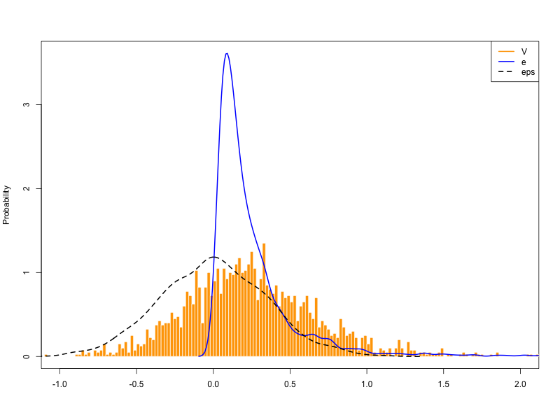
I then used the logspline model to estimate the parameters of the distribution of \(e\). I used a B-spline basis with 10 knots. The knots where placed at equally spaced percentiles of the non-negative \(V\) observations. For the integral, I used Gauss Legendre quadrature. To ensure good coverage of the high probability region of the density, I used a recursive function to form a grid placing a higher number of nodes in the high probability region. I set the penalty parameter \(\lambda\) to 0.1. The estimated density is shown in Figure 2.
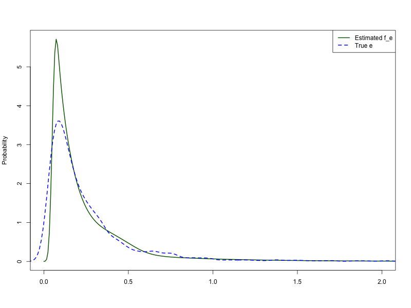
6 Results
6.1 Testing for the Presence of Tax Evasion Through Overreporting
Equation 16 suggest a way to test the presence of tax evasion through cost overreporting. Let \(\mathbb{E}[\mathcal{V}_{it}]\equiv \mu_{\mathcal{V}}\). Define the null hypothesis as the absence of cost overreporting, \(H_0: \mu_{\mathcal{V}}=0\), and the alternative hypothesis as the presence of cost overreporting, \(H_1: \mu_{\mathcal{V}}>0\). Consequently, we can use a one-sided t-test to verify for the presence of tax evasion by overreporting.
Under the null hypothesis, there is no tax evasion. Then, \[ \begin{aligned} z &= \frac{\bar{\mathcal{V}}}{\hat\sigma_{\mathcal{V}}/\sqrt{N}}=\frac{\mathbb{E}[\mathcal{V}]}{\sqrt{\mathbb{Var}[\mathcal{V}]/N}}\\ &=\frac{-\mathbb{E}[\varepsilon]+\mathbb{E}[e]}{\sqrt{\mathbb{Var}[\varepsilon]+\mathbb{Var}[e]/N}}\\ &= \frac{-\mathbb{E}[\varepsilon]}{\sqrt{\mathbb{Var}[\varepsilon]/N}}\sim N(0,1) \end{aligned} \]
The previous test ignores the sample variance of the \(\beta\) estimator in the first stage.
Alternatively, we can do a difference in means test to account for this variation. This test is equivalent to a two sample GMM test, where in one moment the corporations are used to estimate \(\hat\beta\) and the second is a test moment where we use \(\hat\beta\) from the first one. Under the null, the two moment should be equal to zero.
Let \(s_{it}=log\left(\frac{\rho_t M^*_{it}}{P_t Y_{it}}\right)\) and \(\bar s_G= \frac{1}{N_1T_1}\sum_{i=1}^{N_1}\sum_{t=1}^{T_1}s_{it}^G\) and \(\bar s_B= \frac{1}{N_2T_2}\sum_{i=1}^{N_2}\sum_{t=1}^{T_2}s_{it}^B\) be the sample means for good guys (corporations) and the tax evasion guys, respectively.
Then, the test statistic is,
\[ \begin{aligned} t &= \frac{\bar s_B - \bar s_G}{\sqrt{\hat\sigma^2_{\bar s_B}/N_2T_2 + \hat\sigma^2_{\bar s_G}/N_1T_1}} \sim N(0,1) \text{ under } H_0\\ \end{aligned} \]
where \(\hat\sigma^2_{\bar s_B}\) and \(\hat\sigma^2_{\bar s_G}\) are the sample variances of \(s_{it}^B\) and \(s_{it}^G\), respectively.
Of course, the assumption of independent samples is likely incorrect. For example, firms in an industry might get contemporaneous shocks affecting everyone in one period, like a price shock in inputs. Productivity is usually assumed to be persistent over time, but the effects of productivity of one firm on the other firms is commonly ignored. In addition, if the data uses SIC codes, firms within sub-industries are more likely to be correlated than firms in different sub-industries.
I test for the presence of tax evasion for different classifications of intermediates. Intermediates include raw materials, energy and services. Deductibles include raw materials and deductible expenses. Materials include only raw materials. The items included as deductible expenses or services are detailed in ?@tbl-expenses-type
| SIC | Category | Deductibles | Materials | Electricity | Fuels | R&M |
|---|---|---|---|---|---|---|
| 311 | 1 Exempt Product | 0.0294 (0.005)*** | 0.1111 (0.0045)*** | 2.1331 (0.0201)*** | 2.7032 (0.0234)*** | 2.989 (0.0348)*** |
| 312 | 1 Exempt Product | 0.0251 (0.0115)** | -0.0098 (0.0158) | 3.2172 (0.0702)*** | 3.4251 (0.0559)*** | 3.4931 (0.0698)*** |
| 383 | 1 Exempt Product | 0.056 (0.0101)*** | 0.0471 (0.0108)*** | 2.3743 (0.1024)*** | 3.7437 (0.0916)*** | 2.9996 (0.0326)*** |
| 322 | 4 Direct Customer Sales | 0.6404 (0.0068)*** | 1.27 (0.0068)*** | 2.1725 (0.068)*** | 3.7666 (0.1205)*** | 2.9369 (0.04)*** |
| 342 | 4 Direct Customer Sales | 0.0711 (0.0077)*** | 0.0936 (0.0082)*** | 2.2239 (0.0814)*** | 3.3124 (0.0918)*** | 2.1927 (0.0468)*** |
| 390 | 4 Direct Customer Sales | 0.0866 (0.0124)*** | 0.0761 (0.0131)*** | 2.2658 (0.0478)*** | 3.8163 (0.1293)*** | 3.3716 (0.1142)*** |
| 321 | 0.0885 (0.007)*** | 0.1262 (0.0078)*** | 1.4567 (0.0255)*** | 2.77 (0.0286)*** | 3.1702 (0.1098)*** | |
| 313 | 0.0377 (0.0111)*** | 0.0659 (0.0123)*** | 1.7785 (0.0315)*** | 2.0103 (0.0428)*** | 2.2176 (0.0881)*** | |
| 351 | 0.0171 (0.0145) | 0.1116 (0.0221)*** | 1.6454 (0.0406)*** | 2.7385 (0.0444)*** | 2.2409 (0.0539)*** | |
| 352 | 0.0462 (0.0079)*** | 0.0414 (0.0083)*** | 2.8723 (0.0918)*** | 3.8478 (0.107)*** | 3.0485 (0.047)*** |
| sic_3 | n | n_Corp | share_sales_tax | gross_output | sales | deductible_intermediates | materials | share_exports | share_imports | share_imports_materials | importers | exporters | importers_mats | log_mats_share | log_deductible_intermediates_share |
|---|---|---|---|---|---|---|---|---|---|---|---|---|---|---|---|
| 311 | 888 | 147 | 0.0 | 0.2 | 0.2 | 0.3 | 0.3 | 0.0 | 0.0 | 0.1 | 0.1 | 0.1 | 0.2 | 0.1111 (0.0045)*** | 0.0294 (0.005)*** |
| 312 | 188 | 41 | 0.0 | 0.0 | 0.1 | 0.1 | 0.1 | 0.0 | 0.1 | 0.1 | 0.3 | 0.1 | 0.3 | -0.0098 (0.0158) | 0.0251 (0.0115)** |
| 313 | 130 | 74 | 0.1 | 0.1 | 0.1 | 0.1 | 0.1 | 0.0 | 0.0 | 0.1 | 0.3 | 0.0 | 0.4 | 0.0659 (0.0123)*** | 0.0377 (0.0111)*** |
| 321 | 470 | 71 | 0.1 | 0.1 | 0.1 | 0.1 | 0.1 | 0.0 | 0.1 | 0.1 | 0.3 | 0.2 | 0.3 | 0.1262 (0.0078)*** | 0.0885 (0.007)*** |
| 322 | 737 | 22 | 0.1 | 0.0 | 0.0 | 0.0 | 0.0 | 0.0 | 0.0 | 0.0 | 0.1 | 0.1 | 0.1 | 1.27 (0.0068)*** | 0.6404 (0.0068)*** |
| 323 | 99 | 13 | 0.1 | 0.0 | 0.0 | 0.0 | 0.0 | 0.2 | 0.0 | 0.0 | 0.3 | 0.4 | 0.4 | -0.1534 (0.0133) | -0.1635 (0.0137) |
| 324 | 192 | 9 | 0.1 | 0.0 | 0.0 | 0.0 | 0.0 | 0.0 | 0.0 | 0.0 | 0.1 | 0.2 | 0.2 | 0.0664 (0.0086)*** | 0.0578 (0.0084)*** |
| 331 | 172 | 13 | 0.1 | 0.0 | 0.0 | 0.0 | 0.0 | 0.0 | 0.0 | 0.0 | 0.1 | 0.1 | 0.1 | 0.2177 (0.0154)*** | 0.1205 (0.0139)*** |
| 332 | 193 | 12 | 0.1 | 0.0 | 0.0 | 0.0 | 0.0 | 0.0 | 0.0 | 0.0 | 0.1 | 0.0 | 0.1 | -0.028 (0.0136) | -0.0284 (0.0127) |
| 341 | 153 | 41 | 0.1 | 0.1 | 0.1 | 0.1 | 0.1 | 0.0 | 0.1 | 0.1 | 0.2 | 0.2 | 0.3 | -0.0067 (0.0112) | -0.0284 (0.0094) |
| 342 | 347 | 40 | 0.1 | 0.0 | 0.0 | 0.0 | 0.0 | 0.0 | 0.1 | 0.1 | 0.2 | 0.1 | 0.3 | 0.0936 (0.0082)*** | 0.0711 (0.0077)*** |
| 351 | 116 | 68 | 0.1 | 0.1 | 0.1 | 0.1 | 0.1 | 0.1 | 0.3 | 0.2 | 0.6 | 0.4 | 0.6 | 0.1116 (0.0221)*** | 0.0171 (0.0145) |
| 352 | 300 | 100 | 0.1 | 0.1 | 0.1 | 0.1 | 0.1 | 0.0 | 0.2 | 0.3 | 0.6 | 0.3 | 0.7 | 0.0414 (0.0083)*** | 0.0462 (0.0079)*** |
| 356 | 272 | 53 | 0.1 | 0.0 | 0.0 | 0.0 | 0.0 | 0.0 | 0.1 | 0.2 | 0.4 | 0.2 | 0.5 | -0.077 (0.0084) | -0.0517 (0.0073) |
| 369 | 274 | 58 | 0.1 | 0.0 | 0.0 | 0.0 | 0.0 | 0.0 | 0.1 | 0.1 | 0.2 | 0.1 | 0.2 | 0.5516 (0.0161)*** | -0.0237 (0.0105) |
| 381 | 633 | 85 | 0.1 | 0.0 | 0.0 | 0.0 | 0.0 | 0.0 | 0.1 | 0.2 | 0.3 | 0.2 | 0.4 | -0.0014 (0.0065) | 3e-04 (0.0058) |
| 382 | 364 | 46 | 0.1 | 0.0 | 0.0 | 0.0 | 0.0 | 0.0 | 0.1 | 0.2 | 0.3 | 0.2 | 0.5 | -0.0022 (0.0087) | 0.0095 (0.0077) |
| 383 | 213 | 57 | 0.1 | 0.0 | 0.0 | 0.0 | 0.0 | 0.0 | 0.3 | 0.3 | 0.6 | 0.2 | 0.7 | 0.0471 (0.0108)*** | 0.056 (0.0101)*** |
| 384 | 238 | 42 | 0.1 | 0.1 | 0.1 | 0.1 | 0.1 | 0.0 | 0.2 | 0.2 | 0.4 | 0.2 | 0.5 | -0.0924 (0.0118) | -0.0824 (0.0101) |
| 390 | 179 | 18 | 0.1 | 0.0 | 0.0 | 0.0 | 0.0 | 0.0 | 0.1 | 0.2 | 0.4 | 0.3 | 0.5 | 0.0761 (0.0131)*** | 0.0866 (0.0124)*** |
Table 6 shows that the null hypothesis of no tax evasion is rejected at the 1% significance level for twelve of the top twenty manufacturing industries.
In particular, there is no evidence of tax evasion for most industries in which products or raw materials are exempt of sales taxes, such as 312 (Other Food Products), 382 (Non-Electrical Machinery), 384 (Transport Equipment), 323 (Leather Products), and 369 (Non-Metallic Mineral Products); there is also no evidence of materials overreporting for 356 (Plastic Products)industry, whose main raw materials are likely to be specialized and supplied by few local and international suppliers.
Among the industries with exempted products, 311 (Food Products) and 383 (Electrical Machinery) there is evidence of tax evasion but as we’ll see later the average overreporting is low compared to other industries.
As expected, the evidence is stronger particularly for the other industries that do not fall in the previous categories. Namely, there is evidence of tax evasion for industries 313 (Beverages); for 321 (Textiles), 322 (Wearing Apparel), and 324 (Footwear); 331 (Wood Products except Furniture) and 332 (Wood Furniture); for industry 341 (Paper) and 342 (Publishing); 351 (Industrial Chemicals) and 352 (Other Chemicals); 381 (Metal Products Except Machinery), and 390 (Other Manufacturing Industries).
6.2 Deconvoluting Tax Evasion Using Moments
One simple way to start with the deconvolution is using moments. In particular, for every \(n\)-th moment \(\mathbb{E}[\varepsilon_{it}^n|\Theta^{NE}]=\mathbb{E}[\varepsilon_{it}^n|t]=\mathbb{E}[\varepsilon_{it}^n]\)
Therefore, any moment of the tax evasion \(e_{it}\) distribution \(\forall t\in T\) can be estimated in theory.
Namely, from Equation 16, we can estimate the average tax evasion by \[ \begin{aligned} \mathbb{E}[e_{it}|t]&=\mathbb{E}[\mathcal V_{it}|t]+\mathbb{E}[\varepsilon_{it}]\\ &=\mathbb{E}[\mathcal V_{it}|t]+\mu_{\varepsilon} % \\ % \mathbb{V}[e_{it}|t]&=\mathbb{V}[\mathcal V_{it}|t]-\mathbb{V}[\varepsilon_{it}]\\ % &=\mathbb{V}[\mathcal V_{it}|t]-\sigma^2_{\varepsilon} \end{aligned} \]
Note that we learned the distribution \(f_\varepsilon(\varepsilon)\) of \(\varepsilon\) from the first stage, so \(\mu_{\varepsilon}\) and \(\sigma_{\varepsilon}\) are known.
Table 8 displays the estimated average of the log fraction that firms increase their costs of raw materials to evade taxes by claiming a greater deductible amount of their owed sales taxes.
| SIC | Inter | Mean | LCI | UCI |
|---|---|---|---|---|
| 331 | Materials | 0.2177 | 0.0973 | 0.3764 |
| 322 | Materials | 0.1955 | 0.1007 | 0.3007 |
| 369 | Materials | 0.1446 | 0.0580 | 0.2702 |
| 313 | Materials | 0.0659 | 0.0312 | 0.1091 |
| 321 | Materials | 0.1094 | 0.0793 | 0.1793 |
The top five tax evading industries, 322 (Wearing Apparel), 342 (Publishing), 313 (Beverages), 351 (Industrial Chemicals), and 331 (Wood Products), display an average tax evasion \(e\) greater than 12%, which is non-trivial.
Although deconvolution by moments is the simplest method, it displays the undesirable characteristic that estimate of variances frequently result with a negative sign. In the next section, I address this problem by using parametric MLE.
6.3 Deconvoluting by Parametric MLE
I use parametric MLE to obtain better estimates of the variances using equation Equation 28. I assume that the error term \(\varepsilon\) follows a normal distribution.
For tax-evasion, theory suggests that firms only have incentives to overreport costs, not to underreport them. Therefore, as explained elsewhere, it might be expected that overreporting \(e\ge0\) is non-negative. In addition, it might also be expected that most firms overreport a little and a few firms overreport greater amounts. Therefore, a lognormal or a truncated normal distribution might be more appropriate.
By definition, if a random variable \(U\) is log-normal distributed, then \(log(U)\sim N(\mu, \sigma)\). Thus, we cannot directly compare the parameters of the log-normal distribution to our previous estimates. We can however, used the parameters to compute any moment of the log-normally distributed variable \(U\) by
\[ E[U^n]=e^{n\mu+\frac{1}{2}n^2\sigma^2} \]
In particular, the first moment and the variance are computed as follows,
\[ \begin{aligned} E[U]&=e^{\mu+\frac{1}{2}\sigma^2}\\ Var[U]&=E[U^2]-E[U]^2=e^{2\mu+\sigma^2}(e^{\sigma^2}-1). \end{aligned} \]
In addition, the mode and the mean by
\[ \begin{aligned} \text{Mode}[U]&=e^{\mu-\sigma^2} \\ \text{Med}[U]&=e^{\mu} \end{aligned} \]
Likewise, the probability density function of random variable \(U\) with a normal distribution with parameters \(\tilde\mu\) and \(\tilde\sigma\) and truncated from below at zero is
\[ f(u\\;\tilde\mu,\tilde\sigma) = \frac{\varphi(\frac{u-\tilde\mu}{\tilde\sigma})}{\tilde\sigma (1-\Phi(\alpha))} \]
where
\[ \varphi(\xi)=\frac{1}{2\pi}\exp(-\frac{1}{2}\xi^2) \]
is the probability density function of the standard normal distribution, \(\Phi(\centerdot)\) is its cumulative distribution function, and \(\alpha=-\tilde\mu/\tilde\sigma\)
Then, the mean becomes
\[ E[U|U>0]=\tilde\mu+\tilde\sigma\frac{\varphi(\alpha)}{1-\Phi(\alpha)} \]
and the variance, median, and mode become
\[ \begin{aligned} Var[U|U>0]&=\sigma^2[1+\alpha\varphi(\alpha)/(1-\Phi(\alpha))-(\varphi(\alpha)/[1-\Phi(\alpha)])^2]\\ \text{Median}[U|U>0]&=\tilde\mu+\Phi^{-1}\left(\frac{\Phi(\alpha)+1}{2}\right)\tilde\sigma \\ \text{Mode}[U|U>0]&=\tilde\mu \end{aligned} \]
Table 9 displays the estimates of the parameters for both the log-normal and truncated normal distributions using an MLE approach. Other moments of the densities are computed as explained previously and shown for reference.
| sic_3 | dist | mu | sigma | mean | sd | mode | median |
|---|---|---|---|---|---|---|---|
| 311 | lognormal | -1.7460 | 0.9181 | 0.2659 | 0.3059 | 0.0751 | 0.1745 |
| truncated normal | 0.2280 | 0.0894 | 0.2294 | 0.0876 | 0.2280 | 0.2286 | |
| 313 | lognormal | -1.4006 | 0.9855 | 0.4005 | 0.5131 | 0.0933 | 0.2465 |
| truncated normal | 0.3285 | 0.1647 | 0.3376 | 0.1549 | 0.3285 | 0.3332 | |
| 321 | lognormal | -1.4011 | 0.8883 | 0.3655 | 0.4006 | 0.1119 | 0.2463 |
| truncated normal | 0.3183 | 0.1302 | 0.3209 | 0.1269 | 0.3183 | 0.3195 | |
| 352 | lognormal | -1.5406 | 0.9517 | 0.3370 | 0.4091 | 0.0866 | 0.2143 |
| truncated normal | 0.2847 | 0.1218 | 0.2879 | 0.1180 | 0.2847 | 0.2862 | |
| 383 | lognormal | -1.5748 | 0.9288 | 0.3187 | 0.3730 | 0.0874 | 0.2071 |
| truncated normal | 0.2718 | 0.1230 | 0.2761 | 0.1180 | 0.2718 | 0.2739 |
Both the log-normal and the truncated normal distributions point to similar means. The differences between the other moments of the distributions can be explained by the differences in the shapes of their probability density functions. The standard deviation is larger in the log-normal distribution than in the truncated normal distribution which can be explained by the asymmetry of the log normal distribution which is skewed to the right. With respect to the mode, it is the same to the mean in the case of the truncated normal distribution, while it is lower than the median for the log-normal. Finally, the median is lower than the mean in the case of the log-normal, but higher than the mean in the case of the truncated normal because of the truncation from below.
Both distributions show higher estimates of the average overreporting in logs than using only moments. Now it looks like firms evade taxes by inflating their cost of their materials by 40 percent or more.
Table 10 shows the bias corrected bootstrap confidence intervals for the mean of each distribution by industry using 200 replicates.
| SIC | Density | Mean | SD |
|---|---|---|---|
| 311 | lognormal | 0.2659 | 0.3059 |
| [0.2285, 0.2999] | [0.2069, 0.3536] | ||
| truncated normal | 0.2294 | 0.0876 | |
| [0.2116, 0.2597] | [0.0791, 0.0991] | ||
| 313 | lognormal | 0.4005 | 0.5131 |
| [0.3407, 0.468] | [0.3279, 0.6767] | ||
| truncated normal | 0.3376 | 0.1549 | |
| [0.2965, 0.3831] | [0.1343, 0.1791] | ||
| 352 | lognormal | 0.337 | 0.4091 |
| [0.2718, 0.3804] | [0.2442, 0.4747] | ||
| truncated normal | 0.2879 | 0.118 | |
| [0.2509, 0.3287] | [0.1046, 0.134] | ||
| 321 | lognormal | 0.3655 | 0.4006 |
| [0.3176, 0.4179] | [0.2702, 0.4448] | ||
| truncated normal | 0.3209 | 0.1269 | |
| [0.2909, 0.3751] | [0.1183, 0.1443] | ||
| 383 | lognormal | 0.3187 | 0.373 |
| [0.2613, 0.3727] | [0.2391, 0.4416] | ||
| truncated normal | 0.2761 | 0.118 | |
| [0.226, 0.3368] | [0.1082, 0.1351] |
The difference between our previous estimates using moments can be explained by the fact that the log-normal and truncated distribution are restricted to positive values while we did not apply the restriction when using moments. Were we to take the average of only the positive values, the mean of the moments’ method would be higher and closer to the log-normal and truncated normal distributions.
From the perspective of theory, firms would have incentives to overreport their materials. Therefore, using moments to estimate overreporting without restricting to positive values like in the case of the MLE method using a log-normal or truncated distribution might underestimate tax evasion through cost overreporting.
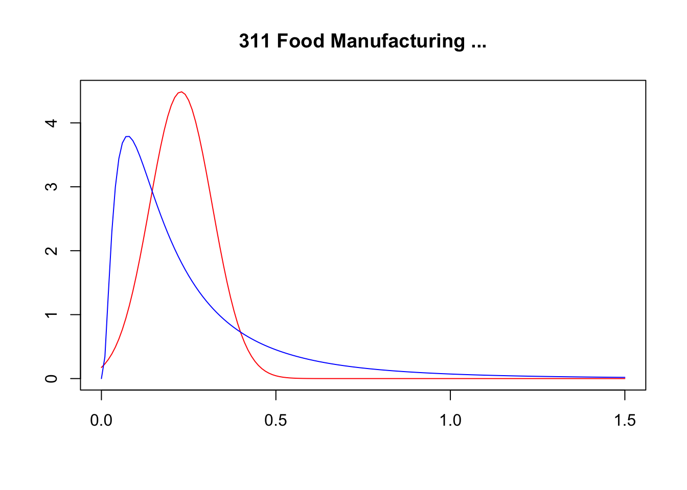
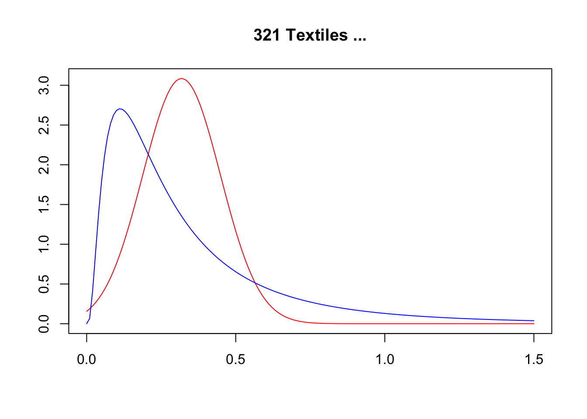
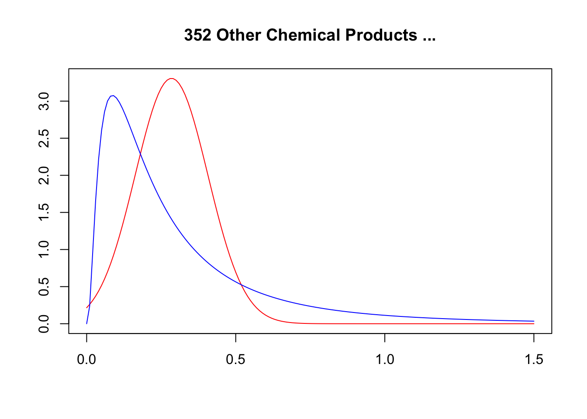
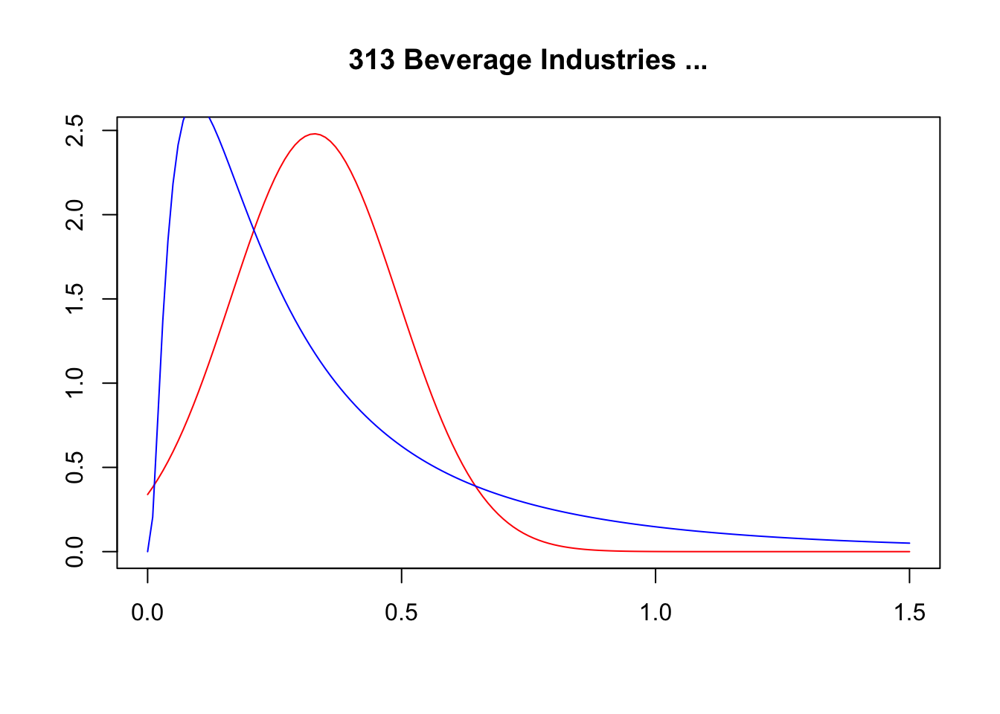
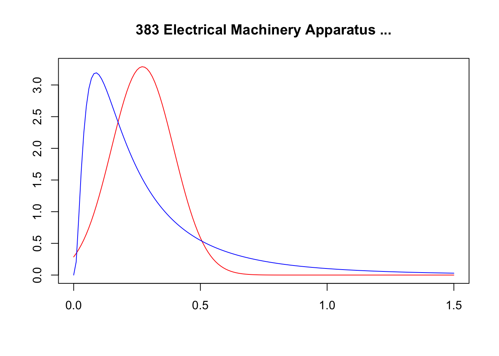
NULL
NULL
NULL
NULL
NULL6.4 Non-Parametric Deconvolution using Penalized B-Splines
| sic_3 | mean | sd | skewness |
|---|---|---|---|
| 331 | 0.191 | 0.080 | 0.782 |
| 322 | 0.185 | 0.037 | 0.117 |
| 369 | 0.077 | 0.027 | 22.485 |
| 313 | 0.077 | 0.096 | 7.320 |
| 321 | 0.127 | 0.044 | 0.566 |
7 Getting the Story Straight
Firms face incentives to evade sales taxes by overreporting their input costs. Firms overreport their cost by acquiring fake invoices to claim additional deductions of their sales taxes, maximizing after-tax profits. The higher the sales tax, the greater the incentive to evade. However, the probability of detection and the threat of penalties limit how much firms overreport.
The key incentive for firms is the effective sales tax rate — the amount firms ultimately pay or receive from the tax authority. The effective tax rate is calculated as the difference between the total sales tax charged by the firm on its sales and the total sales tax paid by the firm on its inputs, divided by total sales. A positive difference indicates what the firm should pay to the government. If the difference is negative, the firm receives a refund from the tax authority.
\[ \begin{aligned} \tau &= \frac{\tau_0P_tY_{it} - \tau_1\rho_t M_{it}}{P_tY_{it}} \\ &= \tau_0 - \tau_1 \beta \end{aligned} \]
In Colombia, the total amount charged by the firm as sales tax depends on the statutory tax rate of each product sold domestically; exports are exempt from sales tax. Low statutory sales tax rates and exempt products result in lower sales tax collected by the firm and thus, a lower effective tax rate. Consequently, firms whose products are exempt from sales tax or taxed with low statutory rates have low incentives to evade. Likewise, as the share of their exports increases, exporter firms bear decreasing incentives to evade taxes because a larger portion of their sales is exempt from sales tax, reducing the effective sales tax rate.
On the other hand, the total amount paid by the firm as sales tax depends on the statutory tax rate of each of its inputs, including imports. Imports, in contrast to exports, are not exempt. Hence, the composition of the foreign and domestic inputs does not affect the effective sales tax rate, nor the incentives to evade. However, the tax system imposed a zero sales tax rate on unprocessed primary inputs, such as forestry, mining, fishing, and agriculture. Therefore, firms consuming a high share of primary inputs face a higher effective sales tax rate and thus, greater incentives to evade.
Note that the effective sales tax rate might naturally be negative for firms in certain industries. Before the 1983 reform in Colombia, there were four different statutory sales tax rates: 4, 10, 15 and 25 percent. Because the sales tax was applied at the product level, the total amount paid as sales tax by the firms on its inputs could be larger than the total amount charged by the firm as sales tax on its products. This situation would result in a negative effective sales tax rate. Firms in this situation would receive a refund from the tax authority.
Would firms with negative effective tax rates have incentives to overreport inputs to increase their refunds? Unlikely. Although the refunds had to be made within 30 days, the procedure was complicated, and the tax authority delayed, on average, one year to process the payment. Suspicion of fraudulent activities might further delay the process. Therefore, firms in this situation did not have incentives to overreport inputs to increase their refunds.
Whether firms in certain industries have incentives to overreport their inputs to evade sales taxes might not be obvious ex-ante. The tax code might be complex, with many exemptions and different statutory rates. Different taxes might generate overlapping or conflicting incentives. Available data might lack details on the products or inputs used by firms, making it difficult to identify the effective sales tax rate.
A first contribution of this paper is to provide practitioners and policymakers a way to identify industries where tax evasion through cost-overreporting might be non-trivial and can be identified from data. The simple model employed in this paper to investigate the mechanisms of tax evasion provides conditions that can be tested with data. As a result, I propose a statistical test where the null hypothesis states that firms in an industry of interest do not evade sales taxes by overreporting; the alternative states that firms do commit tax evasion Section 6.1.
Failing to reject the null hypothesis does not necessarily imply that firms in this industry are not overreporting. If a researcher suspects this practcie on a particular industry, he would have to investigate if the assumptions of the model are not unreasonable for said industry. The main assumption comes from the production function method, even though they might differ in their productivity, evaders and non-evaders share a common technology.
With this in mind, in any dataset using SIC codes, it should be considered that the SIC codes groups firms with similar products, but some categories might group products that require different technologies. Furthermore, most firms are multiproducts, and might be classified under a certain SIC code because it produces more of a certain product marginally.
7.1 Showing the Evidence
Elasticities |
Test |
Sales Tax Rate |
|||||||
|---|---|---|---|---|---|---|---|---|---|
| SIC | Corps. | Others | Tax Ev. | N | N (Corps.) | Sales (Mkt %) | Effective | Sales | Purchases |
| 311 | 0.6 | 0.61 | 0.02* | 888 | 147 | 23.6 | -0.1 | 0.2 | 0.5 |
| [0.57, 0.62] | [0.59, 0.62] | [-0.02, 0.08] | |||||||
| 313 | 0.29 | 0.35 | 0.18*** | 130 | 74 | 9.7 | 7.7 | 8.4 | 2.3 |
| [0.26, 0.3] | [0.32, 0.39] | [0.07, 0.32] | |||||||
| 321 | 0.39 | 0.44 | 0.13*** | 470 | 71 | 7.4 | 6.2 | 8.0 | 4.6 |
| [0.36, 0.42] | [0.42, 0.45] | [0.08, 0.24] | |||||||
| 351 | 0.34 | 0.37 | 0.09 | 116 | 68 | 7.5 | 5.9 | 7.0 | 3.2 |
| [0.28, 0.37] | [0.29, 0.43] | [-0.14, 0.33] | |||||||
| 352 | 0.41 | 0.44 | 0.06** | 300 | 100 | 8.5 | 5.2 | 6.8 | 3.8 |
| [0.38, 0.43] | [0.42, 0.47] | [0, 0.16] | |||||||
Elasticities |
Test |
Sales Tax Rate |
|||||||
|---|---|---|---|---|---|---|---|---|---|
| SIC | Corps. | Others | Tax Ev. | N | N (Corps.) | Sales (Mkt %) | Effective | Sales | Purchases |
| 31 Food & Beverages | |||||||||
| 311 | 0.6 | 0.61 | 0.02* | 888 | 147 | 23.6 | -0.1 | 0.2 | 0.5 |
| [0.57, 0.62] | [0.59, 0.62] | [-0.02, 0.08] | |||||||
| 312 | 0.58 | 0.57 | -0.01 | 188 | 41 | 5.3 | -0.3 | 0.2 | 0.8 |
| [0.49, 0.64] | [0.51, 0.63] | [-0.11, 0.16] | |||||||
| 313 | 0.29 | 0.35 | 0.18*** | 130 | 74 | 9.7 | 7.7 | 8.4 | 2.3 |
| [0.26, 0.3] | [0.32, 0.39] | [0.07, 0.32] | |||||||
| 32 Textile, Apparel & Leather | |||||||||
| 321 | 0.39 | 0.44 | 0.13*** | 470 | 71 | 7.4 | 6.2 | 8.0 | 4.6 |
| [0.36, 0.42] | [0.42, 0.45] | [0.08, 0.24] | |||||||
| 322 | 0.35 | 0.42 | 0.2*** | 737 | 22 | 2.5 | 6.5 | 8.1 | 4.6 |
| [0.3, 0.4] | [0.4, 0.43] | [0.07, 0.35] | |||||||
| 323 | 0.56 | 0.47 | -0.19 | 99 | 13 | 1.2 | 5.3 | 8.1 | 5.0 |
| [0.5, 0.59] | [0.45, 0.5] | [-0.26, -0.07] | |||||||
| 324 | 0.43 | 0.46 | 0.07** | 192 | 9 | 1.0 | 5.9 | 8.0 | 4.8 |
| [0.36, 0.47] | [0.44, 0.48] | [-0.01, 0.22] | |||||||
| 33 Wood & Wood Products | |||||||||
| 331 | 0.32 | 0.41 | 0.24** | 172 | 13 | 0.6 | 5.0 | 5.6 | 1.8 |
| [0.24, 0.37] | [0.38, 0.44] | [0.05, 0.46] | |||||||
| 332 | 0.36 | 0.35 | -0.03 | 193 | 12 | 0.3 | 9.2 | 10.6 | 4.0 |
| [0.26, 0.43] | [0.33, 0.37] | [-0.23, 0.21] | |||||||
| 34 Paper & Printing | |||||||||
| 341 | 0.49 | 0.47 | -0.05 | 153 | 41 | 5.1 | 6.7 | 9.0 | 4.7 |
| [0.43, 0.52] | [0.43, 0.49] | [-0.17, 0.07] | |||||||
| 342 | 0.34 | 0.37 | 0.07** | 347 | 40 | 2.9 | 6.4 | 7.7 | 3.7 |
| [0.29, 0.36] | [0.36, 0.39] | [-0.01, 0.2] | |||||||
| 35 Chemicals, Petroleum, Rubber & Plastic | |||||||||
| 351 | 0.34 | 0.37 | 0.09 | 116 | 68 | 7.5 | 5.9 | 7.0 | 3.2 |
| [0.28, 0.37] | [0.29, 0.43] | [-0.14, 0.33] | |||||||
| 352 | 0.41 | 0.44 | 0.06** | 300 | 100 | 8.5 | 5.2 | 6.8 | 3.8 |
| [0.38, 0.43] | [0.42, 0.47] | [0, 0.16] | |||||||
| 356 | 0.5 | 0.45 | -0.1 | 272 | 53 | 3.4 | 7.0 | 10.0 | 6.0 |
| [0.48, 0.54] | [0.43, 0.46] | [-0.17, -0.04] | |||||||
| 36 Non-Metallic Mineral Products | |||||||||
| 369 | 0.24 | 0.3 | 0.2*** | 274 | 58 | 3.4 | 5.0 | 5.5 | 2.0 |
| [0.19, 0.27] | [0.28, 0.33] | [0.05, 0.38] | |||||||
| 38 Fabricated Metal Products, Machinery & Equipment | |||||||||
| 381 | 0.41 | 0.41 | -0.01 | 633 | 85 | 4.0 | 7.3 | 9.3 | 4.9 |
| [0.38, 0.44] | [0.4, 0.43] | [-0.08, 0.06] | |||||||
| 382 | 0.38 | 0.37 | -0.02 | 364 | 46 | 2.0 | 6.4 | 7.9 | 4.0 |
| [0.33, 0.4] | [0.35, 0.38] | [-0.09, 0.1] | |||||||
| 383 | 0.4 | 0.42 | 0.04 | 213 | 57 | 3.9 | 7.1 | 8.9 | 4.6 |
| [0.35, 0.43] | [0.39, 0.44] | [-0.05, 0.16] | |||||||
| 384 | 0.44 | 0.39 | -0.13 | 238 | 42 | 6.9 | 5.5 | 7.7 | 5.0 |
| [0.37, 0.48] | [0.37, 0.42] | [-0.21, 0.02] | |||||||
| 39 Other Manufacturing | |||||||||
| 390 | 0.34 | 0.35 | 0.04 | 179 | 18 | 0.9 | 9.8 | 11.2 | 4.1 |
| [0.26, 0.39] | [0.33, 0.37] | [-0.15, 0.27] | |||||||
31 Food & Beverages:
- 311 Food Products (Meat, Dairy, Sugar, Bakery, etc.)
- 312 Food Products (Animal feeds, Others)
- 313 Beverages (Soft drinks, Alcoholic beverages, etc.)
In the Food and Beverages industry classification, industry 313 beverges displays suspicious activity of overreporting. This finding is consistent with the model because, in contrast to 311 and 312, industry 313 is not exempt from the sales tax. In fact, the effective sales tax rate for industries 311 and 312 is negative, implying that these firms were receving refunds from the government. In comparison, industries in 313 industry would have higher incentives to overreport because of their positive effective sales tax.
32 Textile, Apparel & Leather:
- 321 Textiles
- 322 Wearing apparel
- 323 Leather and Fur Products
- 324 Footwear
Table 13 also shows evidence for potential tax evasion by overreporting in industries 321, 322, and 324. Again, from the theory perspective, these firms face positie effective tax rates, tax rates generate incentives to evade. This is consistent with the model. Corporations in industries 321, 322, and 324 display intermediate elasticities statistically smaller than the rest of the firms and the tax evasion test display a significantly positive coefficient.
What about industry 323? The effective sales tax rate is positive but does not display evidence of evasion according to the test, moreover the coefficient of the test is negative and statistically significant as indicated by the confidence intervals.
Most likely, it is not a good idea to compare corporations with the rest of the firms in this industry. First, looking at the sample size, we note that the number of corporations in this industry is small. While this is also true for industry 324, looking more closely, we can also note that industry 323 groups classifications 3231 (Leather Tanning and Finishing), 3232 (Fur dressing and Dyeing), and 3233 (Leather products, except footwear and wearing apparel). In contrast, industry 324, only includes 3240 (Footwear, except plastic). The two most important groups of 323 are 3231 (30% of all the firms) and 3233 (60%). However, the composition of these subindustries is different between corporations (60/40) and non-corporations (22/73).
Although technologies between small and large firms were similar at the core, the processes were significantly different which raises the question on the validity of the comparision between corporations and the other firms. During this period, small firms were tipically artisanal producers. These smaller establishments relied primarily on traditional local tanning methods based on vegetable extracts such as quebracho and chestnut. The process is long, typically requiring several weeks, however the products are highly valued because their durability and the distinctive patina it acquires as it ages. Their products were destined for the local market.
In contrast, large firms used a chrome-based mineral tanning, mechanized drums and automated finishing machinery. Chromium tanning is faster and allows for mass scale consistent quality. The product is softer and water resistant. These characteristics make chrome-based tanning leather suitable for exporting to the US and European markets. However, chromium disposal requires advanced waste water treatment necessary to remove havey metals and prevent chromium discharge into the environment. Furthermore, these firms need to comply with strict enviromental regulations including regular monitoring, hazard assessment, and reporting.
The data shows that corporations are more oriented to the foreign market than the rest of the firms, with highest average share of exports (28 vs. 13%), highest share of exporters (80 vs 35%).
33 Wood & Wood Products; 34 Paper & Printing:
- 331 Wood Products except furniture (Sawmills, Containers, etc.)
- 332 Wood Furniture (Wooden furniture and fixtures)
- 341 Paper and Paper Products
- 342 Printing, publishing and allied industries
In these categories, we find that industries 331 and 342 display suspicious activity of overreporting. However, results should be taken with caution in particular for industry 331 because the sample of corporations is relatively small.
Again, failing to reject the null hypothesis of no tax evasion could only mean that cost overreporting cannot be identfied with the data available using corporations as reference group.
35 Chemicals, Petroleum, Rubber & Plastic; 36 Non-Metallic Mineral Products:
- 351 Industrial Chemicals (Basic chemicals, Fertilizers, Synthetic resins and fibers)
- 352 Other Chemicals (Paints and lacquers, Drugs, Soap and cosmetics, etc.)
- 356 Other Plastic Products (not classified elsewhere)
- 369 Non-Metallic Mineral Products (Structural clay products, Cement and plaster, Other non-metallic mineral products)
I find significant evidence for industry 369 Non-Metallic Mineral Products, and some evidence for industry 352. Results should be taken with caution as both industries include different types of products, processes might vary significantly from one another. On the other hand, the sample of corporations is not small and there are observations across all subindustries, suggesting that the comparison between corporations and the rest of the firms might not be unreasonable.
Regarding industry 356, the perspicaz reader might notice that the coefficient of the tax evasion test is negative and statistically significant. However, in this category is not clear the composition of the subcategories included, as it covers other plastic products not classfied elsewhere. Unlike other categories, this one only includes one subcategory, 3560 (Plastic products, not elsewhere classified). As in other industries, corporations have higher average share of exports and their share of exporters is higher than the non-incorporated firms. Does this matter? Likely. How? It is not clear.
38 Fabricated Metal Products, Machinery & Equipment; 39 Other Manufacturing:
- 381 Fabricated Metal Products (Structural metal products, Cutlery, Hand tools, etc.)
- 382 Machinery and Equipment (Agricultural machinery, Metalworking machinery, etc.)
- 383 Electrical Machinery and Apparatus (Electric motors, Generators, etc.)
- 384 Transport Equipment (Motor vehicles, Aircraft, Ships, etc.)
- 390 Other Manufacturing (Jewelry, Musical instruments, etc.)
I cannot reject the null hypothesis of no tax evasion by overreporting for these industries. It is interesting to note that agricultural machinery, transportation equipment, and equipment were exempt from sales tax since 1974. In 1984, exemptions for agricultural machinery and transportation equipment were removed.
If these results are valid, this could imply that there is a dynamic component to the tax evasion decision. Meaning that the desicion of tax evasion in the current period depends critically on the past periodl. For example, if a firm did not evade in the previous year, it might be less likely to evade in the current year. The fact that there is no evidence of tax evasion might suggest that this effect is persistent over time.
How does this dynamic decision could enter the economic model? Firms in the agricultural machinery and transportation equipment sectors started facing incentives to evade after 1984. However, they have been providing truthful information to the tax authority for over a decade. They know that the probability of detection for them is high, given that the authority can easily compare their records with previous years and detect anomalies.
7.1.1 Results Summary
I find that four out of the top five (nine of the to top twenty) industries display activities consistent with tax evasion through cost overreporting in Colombia between 1981 and 1991. Firms might overreport up to 22 percent of their costs. Consisten with the model, firms in industries with exempt products and negative effective sales tax rates display minor or no evidence of tax evasion. Furthermore, the evidence could suggest that the tax evasion decision is dynamic, as there is a lack of evidence of tax evasion in industries that lost exemption after a decade.
Of course, the results should be taken with the usual precautions. The main assumption of the model is that evaders and non-evaders share a common technology. This assumption might be not unreasonable in most cases. However, commonly available data might group firms with similar products, but the technological processes might differ.
On the other hand, failing to reject the null hypothesis of no tax evasion does not necessarily mean that firms in this industry are not overreporting; it might mean that overreporting cannot be identified with the data available at this industry level using corporations as the reference group. A researcher suspecting tax evasion in a particular industry should exhaustively investigate if the assumptions of the model are not unreasonable for said industry. In particular, she should inform herself about the industry technological processeses and asses if evaders and non-evaders can be compared.
Bootstrap |
|||||
|---|---|---|---|---|---|
Two Group Sampling |
Bayesian |
||||
| SIC | Mean Diff. | All | Others | All | Others |
| 311 | 0.02** | 0.02* | 0.02* | 0.02 | 0.02 |
| (0.011) | [-0.01, 0.06] | [-0.01, 0.08] | [-0.03, 0.07] | [-0.04, 0.08] | |
| 312 | -0.01 | -0.01 | -0.01 | -0.01 | -0.01 |
| (0.034) | [-0.09, 0.11] | [-0.15, 0.14] | [-0.16, 0.12] | [-0.2, 0.15] | |
| 313 | 0.18*** | 0.07*** | 0.18*** | 0.07** | 0.18*** |
| (0.026) | [0.03, 0.12] | [0.05, 0.32] | [0.01, 0.12] | [0.03, 0.34] | |
| 321 | 0.13*** | 0.11*** | 0.13*** | 0.11*** | 0.13*** |
| (0.018) | [0.06, 0.19] | [0.09, 0.24] | [0.02, 0.18] | [0.02, 0.25] | |
| 322 | 0.2*** | 0.2*** | 0.2*** | 0.2** | 0.2** |
| (0.039) | [0.06, 0.32] | [0.07, 0.32] | [0.03, 0.35] | [-0.03, 0.36] | |
| 323 | -0.19 | -0.15 | -0.19 | -0.15 | -0.19 |
| (0.026) | [-0.24, -0.07] | [-0.26, -0.08] | [-0.26, -0.05] | [-0.35, -0.08] | |
| 324 | 0.07** | 0.07** | 0.07** | 0.07 | 0.07 |
| (0.03) | [-0.02, 0.23] | [-0.01, 0.23] | [-0.07, 0.24] | [-0.07, 0.25] | |
| 331 | 0.24*** | 0.22*** | 0.24*** | 0.22** | 0.24** |
| (0.044) | [0.05, 0.42] | [0.04, 0.47] | [-0.06, 0.42] | [0, 0.49] | |
| 332 | -0.03 | -0.03 | -0.03 | -0.03 | -0.03 |
| (0.057) | [-0.24, 0.18] | [-0.27, 0.2] | [-0.28, 0.27] | [-0.42, 0.27] | |
| 341 | -0.05 | -0.03 | -0.05 | -0.03 | -0.05 |
| (0.024) | [-0.12, 0.05] | [-0.17, 0.06] | [-0.12, 0.06] | [-0.18, 0.09] | |
| 342 | 0.07*** | 0.06* | 0.07** | 0.06 | 0.07 |
| (0.027) | [-0.01, 0.17] | [-0.02, 0.19] | [-0.08, 0.18] | [-0.09, 0.19] | |
| 351 | 0.09** | 0.03 | 0.09 | 0.03 | 0.09 |
| (0.046) | [-0.04, 0.11] | [-0.13, 0.33] | [-0.06, 0.12] | [-0.18, 0.39] | |
| 352 | 0.06*** | 0.04** | 0.06** | 0.04 | 0.06 |
| (0.017) | [0, 0.1] | [-0.01, 0.16] | [-0.03, 0.1] | [-0.05, 0.15] | |
| 356 | -0.1 | -0.08 | -0.1 | -0.08 | -0.1 |
| (0.018) | [-0.15, -0.04] | [-0.17, -0.05] | [-0.15, -0.01] | [-0.19, 0] | |
| 369 | 0.2*** | 0.14*** | 0.2*** | 0.14** | 0.2** |
| (0.036) | [0.05, 0.3] | [0.06, 0.43] | [0, 0.27] | [0, 0.38] | |
| 381 | -0.01 | -0.01 | -0.01 | -0.01 | -0.01 |
| (0.017) | [-0.06, 0.05] | [-0.09, 0.07] | [-0.08, 0.09] | [-0.11, 0.08] | |
| 382 | -0.02 | -0.02 | -0.02 | -0.02 | -0.02 |
| (0.026) | [-0.08, 0.09] | [-0.09, 0.08] | [-0.12, 0.06] | [-0.13, 0.07] | |
| 383 | 0.04** | 0.03 | 0.04 | 0.03 | 0.04 |
| (0.025) | [-0.03, 0.11] | [-0.04, 0.17] | [-0.06, 0.12] | [-0.1, 0.17] | |
| 384 | -0.13 | -0.1 | -0.13 | -0.1 | -0.13 |
| (0.029) | [-0.19, 0.01] | [-0.24, 0.01] | [-0.21, 0.02] | [-0.3, 0.02] | |
| 390 | 0.04 | 0.04 | 0.04 | 0.04 | 0.04 |
| (0.046) | [-0.13, 0.25] | [-0.15, 0.24] | [-0.17, 0.27] | [-0.23, 0.31] | |
N |
Avg. Age |
Sales (Sales Tax Rate) |
Purchases (Sales Tax Rate) |
Mkt % (Sales) |
Exports (Avg. %) |
Imports (Avg. %) |
Exporters (N %) |
Importers (N %) |
||||||||||
|---|---|---|---|---|---|---|---|---|---|---|---|---|---|---|---|---|---|---|
| SIC | Corp's | Others | Corp's | Others | Corp's | Others | Corp's | Others | Corp's | Others | Corp's | Others | Corp's | Others | Corp's | Others | Corp's | Others |
| 311 | 147 | 783 | 27 | 20 | 0.5 | 0.1 | 0.9 | 0.4 | 15.2 | 8.4 | 5.4 | 4.3 | 17.5 | 6.1 | 27.0 | 5.7 | 55.4 | 11.2 |
| 312 | 41 | 161 | 26 | 21 | 0.2 | 0.2 | 1.2 | 0.7 | 3.9 | 1.4 | 6.4 | 1.3 | 11.9 | 5.1 | 28.4 | 4.5 | 75.7 | 20.4 |
| 313 | 74 | 61 | 31 | 31 | 4.5 | 14.8 | 1.6 | 3.5 | 7.7 | 2.0 | 0.1 | 0.3 | 10.6 | 3.1 | 0.4 | 9.8 | 49.6 | 35.6 |
| 321 | 71 | 422 | 26 | 17 | 8.2 | 8.0 | 3.8 | 4.8 | 5.1 | 2.4 | 4.3 | 2.0 | 20.3 | 5.4 | 46.6 | 11.5 | 64.5 | 18.8 |
| 322 | 22 | 724 | 24 | 14 | 7.9 | 8.1 | 4.1 | 4.6 | 0.5 | 2.0 | 13.6 | 3.2 | 6.2 | 1.6 | 64.6 | 9.8 | 37.2 | 5.5 |
| 323 | 13 | 90 | 35 | 17 | 6.5 | 8.5 | 4.8 | 5.0 | 0.7 | 0.5 | 28.0 | 13.4 | 9.4 | 3.9 | 80.2 | 35.1 | 82.1 | 28.7 |
| 324 | 9 | 186 | 35 | 14 | 8.1 | 8.0 | 5.5 | 4.8 | 0.6 | 0.4 | 16.4 | 2.9 | 7.7 | 1.0 | 93.2 | 10.7 | 91.5 | 10.6 |
| 331 | 13 | 160 | 21 | 18 | 6.6 | 5.5 | 1.9 | 1.8 | 0.4 | 0.2 | 6.0 | 1.6 | 3.8 | 1.4 | 49.0 | 4.4 | 38.5 | 7.6 |
| 332 | 12 | 187 | 25 | 15 | 9.5 | 10.6 | 4.3 | 4.0 | 0.1 | 0.2 | 5.0 | 0.5 | 7.7 | 1.2 | 19.3 | 3.3 | 29.8 | 6.7 |
| 341 | 41 | 119 | 26 | 20 | 8.7 | 9.1 | 3.8 | 5.0 | 4.5 | 0.6 | 4.9 | 0.2 | 21.1 | 2.6 | 43.3 | 5.2 | 60.1 | 14.6 |
| 342 | 40 | 324 | 25 | 22 | 5.1 | 8.0 | 2.9 | 3.8 | 1.3 | 1.6 | 8.4 | 1.3 | 34.7 | 9.3 | 42.6 | 7.7 | 76.2 | 25.1 |
| 351 | 68 | 55 | 24 | 17 | 7.3 | 6.4 | 3.0 | 3.6 | 6.5 | 0.9 | 7.0 | 3.2 | 30.3 | 14.3 | 54.2 | 21.7 | 72.1 | 48.7 |
| 352 | 100 | 216 | 30 | 24 | 7.1 | 6.7 | 3.8 | 3.8 | 7.3 | 1.2 | 2.0 | 1.1 | 45.5 | 20.0 | 52.6 | 10.4 | 96.2 | 56.4 |
| 356 | 53 | 241 | 20 | 15 | 9.6 | 10.2 | 5.7 | 6.1 | 2.1 | 1.3 | 5.6 | 1.8 | 37.7 | 15.7 | 53.4 | 17.3 | 86.1 | 40.5 |
| 369 | 58 | 223 | 29 | 19 | 4.9 | 5.7 | 1.7 | 2.0 | 3.0 | 0.4 | 4.2 | 0.4 | 12.9 | 5.9 | 29.4 | 4.1 | 39.7 | 19.2 |
| 381 | 85 | 569 | 24 | 17 | 9.0 | 9.4 | 4.8 | 4.9 | 2.6 | 1.4 | 5.3 | 1.2 | 30.3 | 12.8 | 52.8 | 9.8 | 78.0 | 32.2 |
| 382 | 46 | 330 | 26 | 20 | 8.1 | 7.8 | 4.2 | 4.0 | 1.0 | 0.9 | 6.4 | 3.7 | 39.1 | 13.9 | 54.7 | 18.3 | 85.7 | 43.5 |
| 383 | 57 | 168 | 23 | 18 | 9.3 | 8.8 | 4.5 | 4.6 | 3.1 | 0.8 | 3.5 | 2.0 | 52.1 | 23.8 | 49.2 | 13.5 | 95.3 | 57.3 |
| 384 | 42 | 209 | 26 | 17 | 8.7 | 7.4 | 5.0 | 5.0 | 5.9 | 0.9 | 5.2 | 2.0 | 48.4 | 14.5 | 39.8 | 8.8 | 80.3 | 38.7 |
| 390 | 18 | 163 | 24 | 21 | 9.6 | 11.4 | 4.1 | 4.1 | 0.4 | 0.5 | 15.1 | 3.1 | 43.6 | 13.6 | 82.3 | 19.6 | 90.3 | 40.7 |
One Tail |
Two Tail |
|||
|---|---|---|---|---|
| SIC | Corp | Non-Corp | Corp | Non-Corp |
| 311 | 5.1 | 9.3 | 5.1 | 8.7 |
| 312 | 5.1 | 3.2 | 5.1 | 6.8 |
| 322 | 4.4 | 26.3 | 3.5 | 8.9 |
| 381 | 4.9 | 4.6 | 4.9 | 6.3 |
| 321 | 4.9 | 21.4 | 5.1 | 12.7 |
| 382 | 5.0 | 5.2 | 5.0 | 5.4 |
| 384 | 5.0 | 0.6 | 4.7 | 4.3 |
| 383 | 4.9 | 2.6 | 5.1 | 2.9 |
| 313 | 5.0 | 17.9 | 5.0 | 12.9 |
| 341 | 5.0 | 4.4 | 5.0 | 8.1 |
| 324 | 5.1 | 10.4 | 5.1 | 11.2 |
| 342 | 5.1 | 6.3 | 5.1 | 5.9 |
| 369 | 5.1 | 12.5 | 4.8 | 12.8 |
| 332 | 5.3 | 4.3 | 5.3 | 8.5 |
| 390 | 4.4 | 1.1 | 4.4 | 1.0 |
| 351 | 4.8 | 11.2 | 4.8 | 10.5 |
| 352 | 4.9 | 12.1 | 5.0 | 9.9 |
| 356 | 5.2 | 3.9 | 5.2 | 8.6 |
| 331 | 5.8 | 26.1 | 4.8 | 22.7 |
| 323 | 4.7 | 1.5 | 3.8 | 12.6 |
7.2 Production Function
Table 17 displays the results of estimating the production function parameters following the identification strategy described above. I use an AR(1) model for the Markov process of productivity. I employed \(Z=\{k_{it},l_{it}\}\) as instruments for themselves. One additional instrument to control for the endogeneity between \(\varepsilon_{it-1}\) and \(\mathcal{W}_{it-1}\) is needed in the first stage of ‘TE+GNR’. The instrument used is specified in the table Table 17.
To compare, I also include the uncorrected estimates using GNR and a simple OLS. In the case of GNR estimation method, the Markov process of productivity is a third degree polynomial, and capital and labor, the instruments.
I focus on the top 5 industries in terms of revenue: 1) 311 - Food Products, 2) 313 Beverages, 3) 352 Other Chemical Products. 4) 351 Industrial Chemicals, and 5) 321 Textiles.
| Inds. | Input | $k_{it-1}$ | $l_{it-1}$ | $m^*_{it-1}$ | $\mathcal{W}_{it-2}$ | GNR | OLS |
|---|---|---|---|---|---|---|---|
| 331 | m | 0.2937 | 0.2937 | 0.2937 | 0.2937 | 0.3485 | 0.5593 |
| k | 0.0388 | 0.0000 | 0.1156 | 0.0721 | 0.1043 | 0.0636 | |
| l | 0.5819 | 0.3383 | 0.6179 | 0.5809 | 0.5063 | 0.4311 | |
| 322 | m | 0.3123 | 0.3123 | 0.3123 | 0.3123 | 0.3683 | 0.5669 |
| k | 0.0911 | 0.0540 | 0.1698 | 0.1875 | 0.1921 | 0.0477 | |
| l | 0.3125 | 0.2986 | 0.4076 | 0.4106 | 0.3608 | 0.4119 | |
| 369 | m | 0.1999 | 0.1999 | 0.1999 | 0.1999 | 0.2252 | 0.4974 |
| k | 0.0526 | 0.3351 | 1.0000 | 0.3492 | 0.2652 | 0.1253 | |
| l | 0.5524 | 0.3619 | 0.8056 | 0.5831 | 0.6055 | 0.5206 | |
| 313 | m | 0.2701 | 0.2701 | 0.2701 | 0.2701 | 0.2826 | 0.7497 |
| k | 0.0160 | 1.0000 | 0.4610 | 0.0000 | 0.3395 | 0.1171 | |
| l | 0.0283 | 0.1592 | 0.1229 | 0.2157 | 0.2943 | 0.2702 | |
| 321 | m | 0.3544 | 0.3544 | 0.3544 | 0.3544 | 0.3869 | 0.6616 |
| k | 0.0697 | 0.0000 | 0.3389 | 0.3214 | 0.2604 | 0.0966 | |
| l | 0.1324 | 0.2780 | 0.2987 | 0.3383 | 0.3412 | 0.2796 |
| Inds. | Input | $k_{it-1}$ | $l_{it-1}$ | $m^*_{it-1}$ | $\mathcal{W}_{it-2}$ | GNR | OLS |
|---|---|---|---|---|---|---|---|
| 331 | m | 0.3209 | 0.3209 | 0.3209 | 0.3209 | 0.3989 | 0.5593 |
| k | 0.0373 | 0.0000 | 0.1112 | 0.0693 | 0.0962 | 0.0636 | |
| l | 0.5596 | 0.3253 | 0.5941 | 0.5587 | 0.4671 | 0.4311 | |
| 322 | m | 0.3469 | 0.3469 | 0.3469 | 0.3469 | 0.4218 | 0.5669 |
| k | 0.0865 | 0.0520 | 0.1612 | 0.1781 | 0.1759 | 0.0477 | |
| l | 0.2968 | 0.2837 | 0.3871 | 0.3900 | 0.3302 | 0.4119 | |
| 369 | m | 0.2441 | 0.2441 | 0.2441 | 0.2441 | 0.2821 | 0.4974 |
| k | 0.0497 | 0.3166 | 1.0000 | 0.3290 | 0.2457 | 0.1253 | |
| l | 0.5218 | 0.3419 | 0.7503 | 0.5528 | 0.5611 | 0.5206 | |
| 313 | m | 0.2894 | 0.2894 | 0.2894 | 0.2894 | 0.3091 | 0.7497 |
| k | 0.0155 | 1.0000 | 0.4489 | 0.0000 | 0.3270 | 0.1171 | |
| l | 0.0276 | 0.1531 | 0.1197 | 0.2100 | 0.2834 | 0.2702 | |
| 321 | m | 0.3869 | 0.3869 | 0.3869 | 0.3869 | 0.4316 | 0.6616 |
| k | 0.0662 | 0.0000 | 0.3218 | 0.3052 | 0.2414 | 0.0966 | |
| l | 0.1257 | 0.2640 | 0.2838 | 0.3213 | 0.3163 | 0.2796 |
| Ins. | Inds. | df1 | df2 | statistic | p-value | stars |
|---|---|---|---|---|---|---|
| $k_{t-1}$ | 331 | 1 | 785 | 121.4029 | 0 | *** |
| 322 | 1 | 3581 | 1419.5262 | 0 | *** | |
| 369 | 1 | 1235 | 1764.8363 | 0 | *** | |
| 313 | 1 | 985 | 2758.2637 | 0 | *** | |
| 321 | 1 | 2339 | 3714.9184 | 0 | *** | |
| $l_{t-1}$ | 331 | 1 | 785 | 778.9743 | 0 | *** |
| 322 | 1 | 3581 | 3840.2193 | 0 | *** | |
| 369 | 1 | 1235 | 308.5926 | 0 | *** | |
| 313 | 1 | 985 | 435.1505 | 0 | *** | |
| 321 | 1 | 2339 | 4176.4138 | 0 | *** | |
| $m^*_{t-1}$ | 331 | 1 | 785 | 416.9415 | 0 | *** |
| 322 | 1 | 3581 | 4963.1390 | 0 | *** | |
| 369 | 1 | 1235 | 1048.3330 | 0 | *** | |
| 313 | 1 | 985 | 458.2628 | 0 | *** | |
| 321 | 1 | 2339 | 420.5456 | 0 | *** | |
| $\mathcal{W}_{t-2}$ | 331 | 1 | 636 | 1961.0846 | 0 | *** |
| 322 | 1 | 2949 | 8673.2398 | 0 | *** | |
| 369 | 1 | 1004 | 3778.8152 | 0 | *** | |
| 313 | 1 | 865 | 24073.3213 | 0 | *** | |
| 321 | 1 | 1959 | 7279.2133 | 0 | *** |
From Table 19, we can conclude that \(m^*_{t-1}\) is a better than \(\mathcal{W}_{t-2}\), \(k_{t-1}\) and \(l_{t-1}\). The following discussion will be focusing on the results relating using \(m^*_{t-1}\) as the instrument.
First, because tax evasion artificially inflates the intermediates’s cost share of revenues, lower output elasticities of intermediates than traditional methods are expected. In table Table 17 shows that correcting for tax evasion results in smaller intermediates’ output elasticity with respect with OLS. With respect to GNR, all estimates are statistically lower except one. The output elasticity of intermediates of the Textile industry (321) is significantly greater than the GNR result.
Three of the five intermediate elasticities resulted as not statistically different from zero. These zeros are not exclusive to the method correcting by tax evasion, as we can see that GNR for Cobb-Douglas approach zero for some industries. These zeros could be the result of the functional form. A Cobb-Douglas specification leaves out the cross-elasticities which could lead to omitted variables bias. In other words, we effectively ignore complementarity or substitutability between the inputs. This CD omitted variable bias could be accentutated because we defined raw materials as intermediates leaving out others, such as energy, fuels, and services.
The elasticities of capital and labor vary across industries, with some being lower, some higher, and others quite similar. This is expected. The direction of the bias in the elasticities of capital and labor depends on whether thse inputs are complements or subsitutes of intermediate inputs. This relatioship will vary by industry. Put differently, for different industries, the cross-elasticity between intermediates and capital, and intermediates and labor will be different in direction and magnitude. Since these cross-elasticities are not included in the CD production function, the elasticities of capital and labor should reflect different degrees of these variations once intermediates are corrected for overreporting.
7.3 Productivity
Once, the production function parameters are known, we can recover \(\omega\) by deconvolution using Equation 21. Here I assume \(\omega\) follows a normal distribution.
?@tbl-boot-omega displays the estimates of the distribution parameters of \(\omega\) corresponding to the instrument used in the previous section and the parametric specification of an AR(1).
| $\mu$ | $\sigma$ | |
|---|---|---|
| 322 | 5.43 | 0.58 |
| 342 | 4.25 | 0.47 |
| 313 | 3.29 | 0.45 |
| 351 | 3.47 | 0.65 |
| 331 | 4.04 | 0.38 |
To compare these productivity estimates to uncorrected ones, I simulate productivity using the parameters estimated in ?@tbl-boot-omega. I use 1000 independent draws from \(\omega\) and \(\varepsilon\). Then, I computed productivity, \(\varphi_{it}^S=\exp\{\omega_{it}^S+\varepsilon_{it}^S\}\).
Table 21 compares summary statistics the simulated productivity using the estimated parameters after correcting for tax evasion with the summary statistics of the productivity estimates of GNR.
| inds | Method | Mean | SD | Q1 | Median | Q3 |
|---|---|---|---|---|---|---|
| 313 | GNR | 70.6 | 44.7 | 45.1 | 59.0 | 82.7 |
| TE: $m^*_{t-1}$ | 55.8 | 39.9 | 29.3 | 47.0 | 70.2 | |
| 321 | GNR | 23.6 | 11.0 | 17.4 | 21.5 | 27.3 |
| TE: $m^*_{t-1}$ | 21.6 | 13.1 | 12.6 | 18.2 | 26.7 | |
| 322 | GNR | 41.6 | 14.3 | 32.2 | 39.1 | 48.6 |
| TE: $m^*_{t-1}$ | 83.1 | 54.5 | 47.2 | 68.1 | 106.0 | |
| 331 | GNR | 61.1 | 23.5 | 46.3 | 56.5 | 70.3 |
| TE: $m^*_{t-1}$ | 73.8 | 44.5 | 42.9 | 63.7 | 93.0 | |
| 342 | GNR | 23.1 | 8.3 | 18.1 | 21.7 | 26.3 |
| TE: $m^*_{t-1}$ | 32.1 | 18.4 | 18.5 | 27.7 | 40.7 |
Industries 321 Textiles, and 351 Industrial Chemicals, and 313 Beverages have means lower or equal to the uncorrected ones for both instruments considered. Industry 311 Food Products display a higher mean for both estimates, while industry 352 Other Chemicals displays a higher or lower mean depending on the instrument.
With respect to standard deviations, industries 321 Textiles, 351 Industrial Chemicals, and 352 Other Chemicals display lower magnitudes, while industries 311 Food Products display significantly higher magnitudes. Lastly, industry 313 Beverages standard deviation is lower or higher depending on the instrument.
7.3.1 Non-Parametric Productivity Density
Nothing impedes us from estimating a non-parametric distribution of \(\omega\). I deconvolute \(\omega\) using penalized B-Splines from Equation 21. First, I estimate the density of \(\varepsilon\) using a kernel density estimator.
| sic_3 | instrument | mean | sd | skewness |
|---|---|---|---|---|
| 331 | $m_{t-1}$ | 4.140 | 0.256 | -0.724 |
| 322 | $m_{t-1}$ | 4.253 | 0.303 | -0.455 |
| 369 | $m_{t-1}$ | -3.984 | 1.929 | 0.542 |
| 313 | $m_{t-1}$ | 3.799 | 0.454 | -0.088 |
| 321 | $m_{t-1}$ | 2.885 | 0.391 | -0.127 |
| 331 | $\mathcal{W}_{t-2}$ | 4.616 | 0.269 | -0.179 |
| 322 | $\mathcal{W}_{t-2}$ | 4.102 | 0.297 | -0.481 |
| 369 | $\mathcal{W}_{t-2}$ | 3.017 | 0.305 | -0.489 |
| 313 | $\mathcal{W}_{t-2}$ | 8.410 | 0.926 | -0.496 |
| 321 | $\mathcal{W}_{t-2}$ | 2.885 | 0.378 | -0.069 |
| sic_3 | Method | Mean | SD | Q1 | Median | Q3 |
|---|---|---|---|---|---|---|
| 313 | TE: $\mathcal{W}_{t-2}$ | 6841.3 | 7504.3 | 2457.8 | 4928.0 | 8309.3 |
| 313 | TE: $m^*_{t-1}$ | 52.5 | 37.7 | 30.5 | 44.3 | 63.2 |
| 321 | TE: $\mathcal{W}_{t-2}$ | 20.8 | 17.1 | 12.7 | 16.8 | 23.1 |
| 321 | TE: $m^*_{t-1}$ | 20.9 | 16.8 | 12.6 | 16.9 | 23.3 |
| 322 | TE: $\mathcal{W}_{t-2}$ | 68.9 | 50.2 | 42.5 | 56.8 | 78.5 |
| 322 | TE: $m^*_{t-1}$ | 80.4 | 59.1 | 49.3 | 66.3 | 91.7 |
| 331 | TE: $\mathcal{W}_{t-2}$ | 115.6 | 67.6 | 67.7 | 97.7 | 145.0 |
| 331 | TE: $m^*_{t-1}$ | 71.6 | 40.6 | 42.8 | 60.6 | 89.6 |
| 369 | TE: $\mathcal{W}_{t-2}$ | 25.4 | 19.3 | 12.1 | 18.0 | 34.4 |
| 369 | TE: $m^*_{t-1}$ | 0.3 | 1.8 | 0.0 | 0.0 | 0.1 |
9 Tax Evasion and Resource Missallocation
A popular way to decompose total productivity introduced by Olley et al. (1996) is the following :
\[ \varphi_t = \bar\varphi_t + \sum_{i=1}^I \left(s_{it}-\bar s_{t}\right)\left(\varphi_{it}-\bar\varphi_t\right) \]
where \(\varphi_{it}=\exp\{\omega_{it}+\varepsilon_{it}\}\) is the firm-level productivity, \(s_{it}\) is firm’ \(i\) share of output at time \(t\). \(\bar\varphi_t\) and \(\bar s_t\) represent the unweighted mean productivity and unweighted mean share.
Intuitively, the more output is allocated to high productivity firms the higher the total productivity will be. Alternatively, the smaller the shares allocated to low productivity firms the greater the total productivity.
Ideally, we would like resources to be allocated to high productivity firms. Hence, the link between the decomposition of total aggregate productivity and missallocation.
In the tax evasion context, the productivity of misreporting firms would look lower than it really is. How would this affect our measures of total productivity? If misreporting firms have small shares, their corrected productivity measure might be closer to the mean reducing their contribution to total productivity, leading to lower measured levels of total productivity.
In other words, tax evasion through cost overreporting might lead to biased measures of total aggregate productivity.
However, if we think about the marginal firm that is struggling to stay in the market, the additional income gained through misreporting might help her survive longer. Therefore, tax evasion increases missallocation in the sense that a share of the output is allocated to firms that otherwise would not be in the market.
There are alternative ways to decompose total productivity that account for the entry and exit of firms (Foster et al. 2008). In addition, alternative measures to aggregate productivity have been used elsewhere (e.g. aggregate demand shocks in Eslava et al. (2004)).
For example, we can decompose aggregate productivity like this
\[ \Delta\varphi_t = \sum_{i \in C}\bar s_i \Delta\varphi_{it} + \sum_{i\in C}(\bar\varphi_i-\bar\varphi)\Delta s_{it}+\sum_{i\in N} s_{it}\left(\varphi_{it}-\bar\varphi\right)-\sum_{i\in X}s_{it-1}\left(\varphi_{it-1}-\bar \varphi\right) \]
where \(\Delta\) is the change from \(t-1\) to \(t\), and the sets \(C\),\(N\), and \(X\) represent the continuing, entering, and exiting firms.
In the case of corporate tax evasion a relevant measure could be aggregate profitability. Low productivity firms are surviving not because they are technologically efficient but because their profitability is marginally higher when they evade taxes. Decomposing an aggregate profitability measure by market shares and firm dynamics would indicate how exiting firms are contributing to the aggregate measure. Intuitively, again higher levels of aggregate profitability correspond to larger shares of the market being allocated to high profitability firms.
In the absence of tax evasion, firms overreporting costs would have lower after-tax profits. The aggregate profitability level would be higher if these firms have small market shares and remain in the sample. On the other hand, the aggregate profitability level would decrease if the small-share and low-profitability firms were to exit the market.
Therefore, in the case of tax evasion, the key aspect of aggregate profitability is the counterfactual decision of low-profitability firms to exit the market in addition to the corrected profits if firms were not to overreport their costs.
Consequently, the economic model should account for firm entry and exit along with tax evasion.
9.1 Implementation
Given I can only obtain the distribution of productivity non-parametrically, one way to recover the covariance term between productivity and size is the following:
\[ Cov(\varphi_{it}, s_{it}) = E[\varphi_{it} s_{it}] - E[\varphi_{it}]E[s_{it}] \]
Clearly, I can estimate the expectation of \(\varphi_{it}\) and \(s_{it}\) using the estimated non-parametric distribution. While, I can directly compute the expectation of size from data.
For the joint expectation, All I need is the conditional distribution of \(\varphi_{it}\) given \(s_{it}\). This can be estimated non-parametrically dividing size in different groups, and then estimating the productivity within each group.
To see this, note that \[ \begin{aligned} E[\varphi_{it} s_{it}] &= \int \int \varphi_{it} s_{it} f(\varphi_{it}, s_{it}) d\varphi_{it} ds_{it} \\ &= \int \left(\int \varphi_{it} s_{it} f(\varphi_{it}|s_{it}) d\varphi_{it}\right) f(s_{it}) ds_{it}\\ &= E_{s_{it}}\left[ \left(\int \varphi_{it} s_{it} f(\varphi_{it}|s_{it}) d\varphi_{it}\right) \right] \end{aligned} \]
10 Lit Review Notes
For personal reference, to be removed from the final version.
10.1 Dabla-Norris et al. (2019)
Productivity improvements by firms can causally lead to lower tax evasion, i.e., underreporting sales for tax purposes. In other words, an increase in firm productivity leads to a higher share of sales reported for tax purposes. The authors use the self-reported share of declared income as a proxy for tax evasion.
Limitations: Using the World Bank Enterprise (47 emerging and developing countries) survey question to get the percentage of sales that are reported for tax purposes, which is used to measure tax evasion. In addition, productivity is measured as the log of sales per worker. No access to quantities data, they use LP but with sales and workers.
Undisputed (?) facts: 1) Tax evasion is higher in poor countries; 2) Tax evading firms tend to be less productive (?).
Productivity gaps between firms that comply with taxes and regulations and those which do not are significant, (between 25 and 50 %) (Amin et al. 2019; Fajnzylber, 2011; Busso et al., 2012). These large productivity gaps can translate into low-economy wide productivity and growth: 1) if, by not complying with existing taxes and regulations, firms enjoy a potentially large implicit subsidy that allows them to stay in business despite low productivity, or 2) to expand their market share at the expense of more productive firms (Farrell, 2004; Bobbio, 2016).
Almeida and Carneiro (2009): Tax evasion may also increase firms’ efficiency (productivity?). Avoiding onerous taxes might confer firms more flexibility in their employment and production decisions.
Kleven et. al (2016): Larger firms are less likely to avoid taxes. The firm’s use of business records increases as it hires more employees. They show that the government may be able to enforce higher tax compliance even in the presence of a low threat of audit due to the increased ease of whistleblowing as the firm grows.
Tax evasion is hidden: it is difficult to obtain precise measures (Kundt et al., 2017; Slemrod and Weber, 2012).
Loayza and Rigolini (2006) and La Porta and Shleifer (2014): informality is larger in lower GDPpC countries
Tax evasion and informality are associated with lower income levels and productivity (Dabla-Norris and Feltenstein, 2003; Loayza, 1996; Sarte, 2000)
10.2 Paulus (2015)
The author models discrepancies between tax records and income survey data as individual tax evasion and measurement error jointly. Using data for Estonia, the author finds that people in the bottom and the top part of earnings distribution evade much more and about 12% of wages and salaries in total are underreported. The identifying assumption, i.e., location condition, is that people working in the public sector cannot evade taxes. In other words, measurement error is unrelated to the sector where the individual works while the same does not hold for tax compliance.
The main constraint for empirical research on tax evasion is the lack of suitable data. This is worse for developing countries. A measure of undeclared income for individuals is needed. This kind of data is usually unreliable and very difficult/or expensive to obtain.
Baldini et al. (2009) use linked income data with tax records at the individual level to estimate tax evasion. However, the author assumes people report their true income in the survey to obtain a measure of non-reporting. Furthermore, in the measurement error literature, several studies assume the opposite, e.g. Krueger (1991) and Bollinger(1998); survey of lit Chen et al. (2011) and Bound et al. (2001). Linked data is referred to as Validation data in the measurement error literature. Later studies have started to consider matching errors (Kapteyn and Ypma, 2007; Meijer et al., 2012) and errors in register data (Abowd and Stinson, 2013).
Pissarides and Weber (1989) pioneered a methodology to study underreported income. They assume that the underreported income for one population group is inferred from a comparison with a reference group assumed to have negligible non-compliance but to be similar in other respects. These types of studies assume implicitly that the underreporting of income in a survey corresponds to the underreporting of income to the tax authority.
10.3 Slemrod (2019)
Tax evasion policies have been a greater priority in developed countries since the 2008 Great Recession (IMF, 2015). For example, the UK announced efforts to combat tax avoidance, tax evasion, and ‘imbalances’ in the tax system that would bring in 5 billion in additional revenue each year.
Tax evasion matters because it affects both the resource cost of raising taxes and the distribution of the tax burden, i.e. core interests of public economics. Policy question? Does curbing evasion improve the equity and efficiency of the public finances, given the cost of doing so? If so, what’s the best way to go about it?
Tax evasion creates horizontal inequity because people evade taxes by different proportionate amounts because of differences in personal characteristics —risk aversion, tax system, and honesty— and because of different opportunities and potential rewards for evasion. Likewise, efforts to combat tax evasion might create vertical inequity. For example, going after lower-income households such as the IRS fighting fraud related to the earned income tax credit (EITC) than going after unreported foreign accounts that are more likely to be held by high-income households.
Tax evasion creates efficiency costs, e.g., the individual’s cost of implementing and hiding non-compliance, the tax authority’s cost of combating non-compliance, etc. Tax evasion also creates socially inefficient incentives to engage in activities that facilitate tax evasion. For example, tax-noncompliance opportunities attract people to self-employment who would otherwise be employees.
Tax evasion creates misallocations. For example, it can cause companies that otherwise would not find it attractive to do so to set up operations in a tax haven to facilitate or camouflage evasion.
Curtailing tax evasion cost shapes optimal policy —it is not optimal to completely eradicate tax evasion because of the cost of doing so. The presence of evasion also alters the optimal setting of tax rates —because it affects the marginal efficiency cost of so doing— and the choice of the tax base —because different tax bases are more or less susceptible to evasion.
Slemrod and Weber (2012) review macroeconomic measures of the informal economy.
The standard tax evasion framework is the model of tax deterrence by Allingham and Sandmo (1972), who adapted Becker’s (1968) model of criminal behavior to tax evasion. A relatively recent simplified framework is where the maximand is \(y(1-t)+te-c(e,\alpha)\), \(y\) is income, \(e\) is the understated tax liability, \(t\) is a linear tax rate, and \(c\) is the private cost of evasion which includes the utility cost of bearing risk and the expected value of punishment. The private cost may depend on the amount of attempted evasion and \(\alpha\), the vector of enforcement instruments, such as the extent of auditing.
The model predicts that a risk-averse agent will evade taxes if the expected return is positive. Additionally, an increase in either the probability of detection or the penalty if detected will reduce evasion. Importantly, the effect of the tax rate is less clear, for even its sign depends on the penalty function (Yitzhaki, 1974).
What matters about \(p\) is the perception of taxpayers. Much work is focused on what alters the taxpayer’s perception of the enforcement environment.
This framework naturally applies to individuals, and small, single-owned firms. Large firms might be risk-neutral rather than risk-averse.
The challenge of measuring tax evasion is the incentive of evaders to conceal their behavior. Many taxpayers are unwilling to respond accurately maybe because of the threat of punishment or social shame. For this reason, even the most credible empirical studies of evasion don’t actually have a reliable measure of evasion.
Tax gap studies by auditing (real differences between countries’ tax gaps or differences in methodologies?):
-U.S. Overall gross tax-gap average over 2008-10 was $458 billion USD, 18.3% of estimated tax liability (IRS, 2016). IRS National Research Program (NRP).
-UK: overall tax gap from 2013-2014 6.4% of true liability: 6.4% for the corporation income tax 5.0% individual income tax, and 11.1% value-added tax (VAT). Small- and medium-sized enterprises account for over half of the overall tax gap (HMRC, 2015). Her Majesty’s Revenue and Customs (HMRC, 2015) Toro et a. (2013).
-Denmark’s overall tax gap is only 2.2 percent of net income (Kleven et al., 2011).
-OECD(2015) other countries.
Sharp variations in the compliance rate by the extent of information reporting to the tax authority provide compelling evidence that the probability of successful evasion play a key role in the deterrence of tax evasion. For example, in the US, the estimated non-compliance rate when there is little to no third-party-reported information (e.g., self-employment income) is 63%, compared to 19% and 7% for ‘some’ and ‘substantial’ information reporting, respectively. Small businesses represent a large portion of the tax gap in individual income with approximately 47% of underreporting. In contrast, only 1 % of non-compliance is estimated for employee wages and salaries —substantial information reporting. Kleven et al. (2011) find a similar disparity, but lower, non-compliance rates in Denmark, where 14.9 % for self-employment income but less than 1% for third-party reported items. In other words, when the information reporting renders the likelihood of evading taxes successfully near zero, evasion is eradicated; when the likelihood is higher, evasion proliferates.
Administrative data: Canada, UK, Brazil, Chile, China, Costa Rica, Ecuador, India, Pakistan, Rwanda, Tunisia, and Uganda. US access
RCT’s review: Hallsworth (2014)
Bérgolo et al. (2018) RCT with firms using letters. Value-added-tax compliance, 20,000 Uruguayan small and medium-sized firms. The authors find that adding to the baseline letter a paragraph with statistics about the probability of being audited and the penalty rates increased tax compliance by about 6.3 percent (about one-fourth of its current level), and adding a paragraph that informs firms that evading taxes increased the probability of being audited increased tax compliance by about 7.4 percent.
Ortega and Scartascini (2018) Colombia, individuals. Method of communication. The authors find sizable differences across delivery methods. Personal visits by a tax inspector are more effective than the impersonal methods; they are, alas, also much more expensive. In a follow-up study, Ortega and Scartascini (2015) find that the effect of phone calls falls between those of the impersonal methods and the personal visits.
Almunia and Lopez-Rodriguez (2018) study the behavior of Spanish firms in response to a notch in enforcement intensity that arises because the Spanish Large Taxpayer’s Unit (LTU) monitors firms with revenues above €6 million for all major taxes. Sure enough, there is significant bunching of firms just below the threshold. The bunching is more pronounced for firms that produce intermediate goods, which makes sense because their transactions create more of a paper trail than firms that sell to final consumers, and thus the discontinuous increase in enforcement intensity affects these firms more than retailers.
Examining data from Ecuador, Carrillo, Emran, and Rivadeneira (2012) find evidence of bunching in reported tax liability just above the withholding threshold, suggesting that some firms manipulate their self-reported tax liability and possibly real economic choices to minimize expected tax payments subject to the discontinuity in the audit probability. Third-party data on sales and intermediate input costs reported by large firms who act as withholding agents indicate that bunching is indeed associated with tax evasion: self-reported sales are smaller than third-party reports for more than 10 percent of firms. “withholding”, large firms withhold and remit to the tax authority a fixed share of their purchases from small firms (and individuals), who can then apply the withheld amount as a credit against their self-reported tax liability. While withholding does not change the firms’ true tax liability, there is typically a discontinuity in the audit probability at the withholding rate; firms seeking tax refunds (because self-reported tax liability is lower than the withheld amount) are audited at a higher rate than firms making additional tax remittances.
In Chile, firms can only claim tax credits for inputs bought from tax-compliant suppliers, the invoice–credit VAT system has a built-in (albeit imperfect) self-enforcement mechanism for firm-to-firm transactions. Pomeranz (2015) tests this hypothesis by mailing increased-audit-threat letters to over 100,000 randomly selected Chilean firms, using a sample of over 300,000 firms receiving no letter as the control group. Consistent with theoretical predictions on the self-enforcement mechanism, the increase in VAT receipts (and therefore the inferred level of evasion) induced by the letters is concentrated at the level of sales from firms to final consumers, for which there is no paper trail.
In Ecuador, Carrillo, Pomeranz, and Singhal (2017) examine the effect of a change in the tax authority’s use of third-party information on reported corporate tax revenues. In the authors’ study, the Ecuadorian tax authority informed some firms of the discrepancy between the two reports and offered them the opportunity to file an amended return. The authors compare the reporting behavior of firms before and after the notification and find that 24 percent of firms underreported revenue in the years when the government did not use the third-party-verified information. In the three rounds of the experiment, 11–19 percent of notified firms filed an amended return.
In amended returns, firms correctly reported their revenues but also increased their reported costs almost one-for-one with the increase in reported revenues (96 cents for each dollar!), nearly eliminating any impact on apparent tax liability. This study also reveals that reported costs were lower than third-party information on costs, which at first blush seems to be at odds with a model of firms that seek to maximize after-tax profits. The authors propose that this behavior is consistent with firms who may believe that the probability of an audit is a function of firm size and profits. To appear small, and lower the odds of being audited, some firms may underreport both revenues and costs.
Kumler, Verhoogen, and Frías (2013) study the effects on evasion of a 1997 pension reform in Mexico that tied younger workers’ retirement benefits more closely to the wage reported by employers. This reform provided a new incentive for this group of workers to ensure that their employers accurately reported their wages, which in turn might lower payroll tax evasion by firms. To examine the impact of this initiative, the authors combine two sources of data on wages: administrative data from the Mexican Social Security Insitute (IMSS) and household survey data from the Encuesta Nacional de Empleo Urbano (ENEU). The authors find that, consistent with a decline in evasion, the gap in median or mean wage within a cell between the ENEU data and the IMSS data fell for younger age groups after the pension reform but, as predicted, for older workers not affected by this reform there was no decrease in the gap between the two income reports.
In Pakistan, corporations either pay a tax on profits or turnover, depending on which liability is greater. This effectively implies that at a profit rate lower than the ratio of the turnover tax rate to the profit tax rate, firms cannot deduct costs. Because in Pakistan a large portion of evasion is through misreporting of costs, this tax regime trades off loss in production efficiency (as firms move from a neutral profit tax to a distorting output tax regime) for a gain in revenue collection. Best et al. (2015) use administrative data on the universe of corporations in Pakistan to estimate the elasticity of taxable income using the bunching of firms below the threshold profit rate. They find clear evidence of such bunching, whose location shifts along with changes in tax rates that move the threshold. Using the analysis-of-bunching methodology, they estimate that turnover taxes reduce evasion by between 60–70 percent.
Relevance of tax evasion Widespreadness of tax evasion Seminal model of tax evasion Real effects of tax evasion firm-to-firm sales less likely to evade taxes small firms more likely to evade taxes evidence of misreporting of costs (Pakistan) Chile and Colombia tax evasion evidence
10.4 Carrillo et al. (2022)
The authors study tax evasion through the use of ghost firms — fake firms that issue fraudulent receipts so that their clients can claim false deductions. Using transaction-level data from Ecuador, the research documents that ghost transactions are widespread; prevalent among large firms —(!) measured as revenue level [related to size]— and firms with high-income owners —owners with experience in tax evasion? Sophisticated or less risk-averse owners?—; and exhibit suspicious patterns: bunching at the end of the fiscal year [tax evasion decision is realized post realization of productivity and true input optimization], at round numbers, and just below financial system thresholds [no real economic activity behind].
Globally widespread but extremely limited researched problem. “Ghost firms” —also known as “invoice mills”, or “missing traders”— issue fraudulent receipts that allow the receivers to claim additional tax deductions on value-added (VAT) and corporate income taxes (OECD, 2017; Keen and Smith, 2006) Appendix B.
Data: firm-to-firm transaction-level data with 800 ‘ghost firms’ and firm owners of Ecuadorian firms data.
Widespread and quantitatively important, not limited to small, semiformal firms, benefits those at the top of the income distribution. In 2015, 4.7% of potential clients took deductions from a ghost firm. Annual ghost deductions were 14.1% of the value of their purchase deductions [huge number!]. Larger firms are more likely to engage in ghost transactions and feature larger shares of ghost transactions in total input costs [a function of size]. Ghost deductions are disproportionately used by firms owned by high-income individuals.
Process: Given a list of identified ghost firms (2016) by the Ecuadorian Internal Revenue Service (SRI), the authors identified ghosts’ clients —firms with at least one purchase from ghosts firms— with administrative data -which includes annual corporate and individual income tax filings in Ecuador (2010-2017) and monthly purchase annexes (2010-2015). The sample is restricted to firms that are required to file purchase annexes: incorporated firms (88%) and large sole proprietorships (12%) (i.e., annual sales > $100,000, annual costs > $80,000, or capital above $60,000)
- Tax deductions based on fake receipts from ghost firms are widespread and large. 10.4% of unique firms filed deductions based on receipts from at least one identified ghost firm. On average, 3.6% of all purchases of ghost clients are from ghosts, amounting to 10.4% of the value of their purchase deductions. These shares are the highest,4.6% and 14.1%, for 2015, the year before the ghost list was collected. Earlier ghosts might have disappeared by the time the list was established. Total tax evasion was $2.1 billion in value, 1.7% of tax evaded for corporations and 11.5% for sole proprietorships.
- Evasion through ghost firms is more prevalent among relatively large firms. Ghost clients have higher revenues, costs, and tax liabilities. The probability of engaging in cost overreporting through ghost firms increases monotonically in firm revenue —maybe only because of more transactions. Share of ghost deductions also increases throughout much of the size distribution, except at the very top —very large corporations might have stronger incentives to avoid illegal behavior or they can use more sophisticated avenues of tax avoidance that do not require evasion using fake receipts (Bustos et al., 2022)
- Ghost deductions are most prevalent in firms owned by high-income individuals. The probability of having ownership of a ghost client and the amount of ghost purchases attributed to individuals increases with individuals’ income. The amount of additional tax as a share of owners’ income is over 56 times higher in the top 5% than in the bottom 80% of the income distribution, and almost 170 times higher in the top 1%. Ghost-firm-enabled tax evasion tends to reduce disproportionately the effective taxation of firms owned by rich individuals.
- The number and value of ghost transactions are clustered towards the end of the tax year —the same as the calendar year in Ecuador. In December, there as twice as many ghost transactions as during the six previous months of the year. Non-ghost transactions are only 6% higher in December. This is consistent with firms assessing their annual revenues at the end of the year and then utilizing ghost transactions to achieve a target reported profit level or rate for tax purposes. Similar to US firms spending more on capital investment towards the end of the fiscal year to reduce tax obligations (Xu and Zwick, 2022).
- Ghost transactions bunch at round numbers more prevalently than non-ghost transactions. This is consistent with ghost transactions representing false activity (Klimek et al, 2018; Nigrim, 2018).
- Ghost transactions exhibit bunching below the financial system payment threshold. In Ecuador, transactions above $5,000 (gross-of-VAT) are required by law to be made through the formal financial sector (e.g. electronic transfers, checks, or credit cards). Ghost transactions bunch just below $5,000. In contrast the distribution of non-ghost transactions is smooth through the $5,000 threshold.
Lit on tax evasion via ghost firms is extremely sparse. Waseem (2020) Pakistan. Policy: VAT rates reduced to zero. Ghost firms decreased. Most ghost deductions are claimed by exporters. Ghost deductions are a large share of over-claimed refunds for exporters. Mittal et al. (2018) develop a Machine Learning algorithm to detect ghost firms.
Most recent work on tax evasion focuses on firms’ revenue misreporting (Slemrod, 2019; Pomeranz and Vila-Belda, 2019), but few have studied firms’ cost misreporting. Recent firms’ revenue misreporting studies have found that enforcement policies targeting revenue underreporting led to increasing reported costs —to offset tax liabilities—, but there is no offsetting behavior —reduction in reported revenue— in the study by Carrillo et al. (2022). This is consistent with third-party information reporting —firm-to-firm transaction level data is used in this study— decreasing the incentive to evade by increasing the probability of getting caught.
Other studies finding bunching at the thresholds are: - VAT reporting thresholds: Onji, 2009; Asatryan and Peichl, 2017; Luksic and Mittal, 2019; Liu et al., 2021. - Different tax regimes and regulations: Hasegawa et al., 2013; Best et al., 2015; Almunia and Lopez-Rodriguez, 2018; Lopez-Luzuriaga, 2019; Chen et al., 2021; Clifford and Mavrokonstantis, 2021; Overview: Kleven, 2016.
Intervention: Tax authority challenged deductions from firms with ghost transactions (ghost clients) during 2010-2015 by notifying them via email.
[What goes into the cost overreporting function? Tax authority chooses effort (b(type)-c(type))e (?)]Tax authorities target firms with higher potential tax recovery. In this study, notified firms were larger than typical incorporated ghost clients —authors only had access to the data on incorporated firms that were notified. Notified firms had 2.4 times higher median tax liability, the median amount of ghost deductions of these firms was $181,000 (mean $338,000) and the median share of ghost deductions out of their total purchases was 26% (mean 38%). [conditional on being large, the overreporting level does affect your probability of being audited.]
[Evidence of overreporting in intermediates] Adjusting firms reduced most strongly non-labor costs: domestic purchases, other production costs, and imports. Some offsetting behavior was observed; Firms increased labor, inventory, and financial costs. However, overall total costs still decreased on average by 72 cents for every dollar contested in the notification.
Many firms did not respond to the notifications. A portion might be explained by failure in communication (e.g., letters not reaching the firm or the right person within the firm). Firms might choose not to amend knowing the tax authority has limited capacity for follow-up enforcement. Adjusting firms tend to be somewhat smaller than all the notified firms.
The intervention resulted in large reductions in firms’ reported costs. The reduction in costs increased tax liabilities by $20.6 million, 81% increase on the $25.4 million originally filed by adjusting firms. On average, reported costs were reduced by $229,000
Firm-to-firm transactions —third-party reporting: firm’s sales to other firms can be cross-checked— are less like to underreport revenue. Firms did not adjust revenues down to offset tax liability resulting from the decrease in costs —as in other studies where the enforcement strategies pushing firms to truthfully report their revenues led firms to make large offsetting adjustments by increasing reported costs (Asatryan and Peichl, 2017; Carrillo et al., 2017; Slemrod et al.,2017; Almunia and Lopez-Rodriguez, 2018; Mascagni et al., 2018; Naritomi, 2019; Li andWang, 2020)
No evidence that the intervention was followed by firms going out of business or de-formalizing; consistent with ghost clients being large and established.
International prevalence of false invoicing (ghost firms) - Mexico: between 2014 and 2018, the estimated annual tax revenue lost due to ghost firms was 5 billion MXN (SAT), 0.03% of Mexico’s GDP; 8,500 identified ghost firms in 2018 (Senado de la Republica, 2019). - Chile: historically, false invoices represent between 15% and 25% of total VAT evasion. In 2004, fake-invoice tax evasion was 114 billion CLP, 0.2% of Chile’s GDP (Gonzalez and Velasquez, 2013; Jorrat, 2001; CIAT, 2008). - Colombia: fake-invoice tax evasion was around 2,300 billion COP, 0.2% of Colombia’s GDP (Portafolio, 2019). - Poland: In 2016, fake-invoice tax evasion amounted to 103,850 million PLN, 5.6% of Poland’s GDP (Poland’s Minister of Finance, 2018). - Asia: South Korea (Krever, 2014) and China (Hashimzada et al., 2010; Barboza, 2013). - Africa: Kenya (Kenya Revenue Authority; Mak’Osewe, 2019); Rwanda (Mascagni et al., 2019; 2021); African Tax Administration Forum (Brain and Nwankwo, 2018).
10.5 Mclure (1989)
10.5.1 Colombian Tax System
The tax system of Colombia has been under constant study and revision since the 1960s.
During the early 1960s, a Fiscal Survey of Colombia (1965) led by Professor Milton Taylor was prepared as part of the ongoing program of the Organization of American States and the Inter-American Development Bank. This study led to important administrative innovations, but few concrete substantive reforms.
In 1970, Professor Richard Bird prepared a report, influential in terms of policy, based on his experience as a resident advisor to the government of Colombia on tax and fiscal policy during the period of 1964-1966.
In 1968, Professor Richard Musgrave was commissioned by President Carlos Lleras Restrepo to appraise the tax system and make recommendations for reform with the help of Colombian and foreign experts. The resulting document, Fiscal Reform for Colombia: Final Report and Staff Papers of the Colombian Commission on Tax Reform, significantly shaped the 1974 and subsequent tax reforms. This report has also become a classic in the field of tax reform in developing countries.
In late 1974 Colombia undertook a major fiscal reform drawing heavily on the recommendations of the Musgrave Commission.
Other influential documents during this period were La Reforma Tributaria 1974 (Gillis and McLure, 1974) and a World Bank report (McLure, 1982). Finally, there exists a report on the taxation of income from business and capital (McLure, Mutti, Thuronyi, and Zodrow, 1989?)
10.5.2 Income tax
At the time of the Taylor Mission, Colombia’s system of income and complementary taxes consisted of a basic income tax, a net wealth tax, and an excess profit tax.
In the early 1960s, the base of the Colombian income tax was quite broad. It included all “enrichment”; it included corporate dividends and shares in the earnings of limited liability companies and partnerships.
During this period, high-income individuals could evade the individual income tax on dividends and interest on bearer securities, since a withholding tax of only 12 percent was levied on such income.
The income of individuals was taxed under a graduated schedule consisting of 56 rates, ranging from 0.50 to 51 percent. There was a complex system of personal deductions for expenditures on medical, educational, and other professional services; these deductions depended on the income and number of children of the taxpayer.
Tax incentives were provided for, among others, industrial enterprises. In addition, income tax exemptions, limitations, or reductions were granted to oil companies, certain mining companies, large-scale agricultural improvements, cattle-raisers, Colombian airlines, certain basic industries, manufacturers using products from Paz del Rio steel plant, and exporters other than coffee, petroleum, bananas, hides and precious metals.
Juridical persons were subject to graduated rates. Corporate rates (on Sociedades anonimas), which applied to all foreign entities, were 12, 24, and 36 percent. The rates applied to limited liability companies (Sociedades de Responsabilidad Limitada), the business forms used for many of the most important Colombian business ventures, were only 4, 8, and 12 percent, and the income of partnerships was taxed at rates of 3 and 6 percent. Whereas the income of proprietorships was taxed only in the hands of the owner under the individual tax, the income of juridical persons was taxed directly to the firm. The entire net income of limited liability companies (like that of partnerships) was taxed to the partners, whether or not distributed; by comparison, only dividends were taxed to owners of corporate shares.
The tax system of Colombia suffered from many administrative problems in 1960. A serious problem involved the interplay of an overly short statute of limitations (two years), a system of penalties and interest that encouraged false and delinquent returns, and an overburdened tax administration. In extreme cases, taxpayers could avoid taxation completely by deliberating reporting false information, and waiting for the statute of limitations to preclude correction by the fiscal authorities.
10.5.3 Net wealth tax
Since 1953, Colombia has imposed a tax on net wealth (impuesto complementario de patrimonio), apparently to increase the tax burden related to income from capital and to induce a more productive use of land. The net wealth tax applies to individuals but not to corporations, partnerships, and limited liability companies. Taxable wealth was that held in Colombia, net of indebtedness. There were numerous exceptions, which paralleled, for the most part, those under the income tax. For example, there were exemptions for livestock kept for breeding purposes, certain agricultural investments, assets of Colombian airlines, investments in motor vehicle assembly or manufacturing plants, investments in securities of the Paz del Rio steel plant, and investments in certain basic industries and certain iron and steel fabricators.
10.5.4 Excess-Profits Tax
Colombia imposed an excess-profits tax beginning in 1935; this tax was repealed in 1974.
10.5.5 The Taylor Mission Proposals
The Taylor Mission produced an impressive analysis of the distortions and inequities that flow from the disparate treatment of individuals, corporations, limited liability companies, and partnerships. It noted particularly the case for integration of the corporate and individual income taxes. However, it concluded that such a policy, integrating corporate and individual income taxes, was not warranted at the time. McLure rationalizes this contradiction with political realism because the double taxation had been recently introduced in 1953. The Mission’s recommendation focused on the interplay between the corporate income tax, two of the supplementary taxes on income, and the excess-profits tax. The Mission favored a tax increase in limited liability companies, which it acknowledges were used as “tax avoidance device”.
The Mission devoted particular attention to the agricultural sector because of the potential revenue being lost and the potential role of tax policy to stimulate efficient use of rural resources. The Mission proposed a presumptive calculation of income from agriculture equal to 10 percent of the assessed value of agricultural property.
The Taylor Mission also proposed administrative changes such as withholding for wages, salaries, interests, and dividends, the requirement of advance tax payments based on estimated liabilities, self-assessment, extension of the statute of limitations, and rigorous application of penalties.
10.5.6 Musgrave Commission’s Proposals
For the most part, the Taylor and Musgrave recommendations for income tax reform were broadly consistent.
The Musgrave Commission repeated the call for heavier penalties for tax evasion. The Commission also suggested strategies to improve taxation of the hard-to-tax group such as small traders, independent professionals, and agriculture.
In contrast to the Taylor Mission, the integration of the taxes on business and on individuals was rejected by the Musgrave Commission. Instead, the Commission proposed that the income of corporations and limited-liability companies be subject to a unified system of taxation. The proposed system would consist of taxation at the entity level and at the individual shareholder level only on income that is distributed. Partnerships would be taxed at the entity level at a substantial lower rate, and subject to certain conditions limited-liability companies would be given the option to being taxed like partnerships; the partners’ share in partnership profits would also be subject to individual taxation, whether distributed or not.
10.5.7 Sales tax and VAT
Colombia introduced a national sales tax in 1965. This was a single-stage manufacturers’ tax levied at rates of 3 to 10 percent on finished domestic goods and imports. Buyers’ certification that goods would undergo further processing prevented the transaction from being taxed to avoid double taxation. This system led inevitably to double taxation and evasion. In 1966, this sales tax was converted into a crude credit-type value added tax (VAT), but one that extended only through the manufacturing level and allowed no credit for tax paid on capital goods.
10.5.8 1974 reforms
The 1974 reforms were greatly influenced by the Musgrave recommendations, which were considered and refined by local experts during the intervening half-decade. These reforms rationalized many aspects of the income and net wealth taxes, and eliminated the tax on excess profits, added a calculation of presumptive income based on net wealth, and further improved the system of internal indirect taxes.
Income. The 1974 reforms eliminated many exemptions and other forms of preferential treatment for non-labor income, including the exclusion of interest on public debt, exemptions for automobile producers and private electrical companies, and deductions for reserves for investment. Exemptions remained intact for the airlines, publishing, and reforestation sectors, and for various activities in selected regions (primarily “frontier” and other less developed ones).
The 1974 reforms replaced graduated rates with flat-rate taxes for business income. But the taxation of corporations and limited liability companies was not unified. Instead, the income of corporations was taxed at 40 percent and that of limited liability companies and partnerships at a rate of 20 percent. As before, shareholders of corporations paid tax only on dividends, whereas owners of limited liability companies and partnerships were required to pay tax currently on the share of the profits of the company imputed to them.
The 1974 reforms extended the concept of presumptive income from only to the agricultural sector (1973) to the economy as a whole. Income was presumed to be no less than 8 percent of net wealth, defined generally in the same way as for the net wealth tax.
Internal indirect tax. The 1974 reforms eliminated the possibility of buying otherwise taxed items on an exempt basis simply by certifying to the seller that they were to be processed further; under the new law, the tax credit (invoice) system was extended to all such transactions. This created administrative headaches because of the many claims for refunds that had to be processed.
The law expanded the base of the VAT to reduce the regressivity of the tax at the upper en of the income scale. The VAT was applied to many services, including parking lots, insurance, international air fares, photographic developing and photocopying, telegraphic and telephone services, and fees of social clubs. Likewise, the degree of progressivity of the rate schedule applied to various goods, ranging from “wage” goods (6%) to luxuries (35%) was increased. The 1974 reforms also provided more widespread exemptions, for example, for almost all food and for selected agricultural machinery.
As under previous law, no credit was allowed on capital goods, in part to compensate for underpricing of capital resulting from various non-tax policies, including an undervalued exchange rate. On the other hand, the law contained anomalous provision that exempted imports of capital goods destined for “basic” industries. The combination of these policies placed domestic producers of capital goods at a competitive disadvantage relative to foreign producers of imported capital goods.
10.5.9 1974-1986 Period
During this period of continued tinkering with the tax system in Colombia, some changes represented improvements, but the more important ones represented retrogression. These counter-reforms were in large a response to the pleadings of politically powerful economic groups.
For example, law 20 of 1979 effectively exempted cattle raising from income tax and arbitrarily reduced the value of breeding stock and dairy cattle for net wealth and presumptive income tax purposes by 50%.
Law 9 of 1983 introduced a tax credit of 10% of dividends received was provided as a means of reducing double taxation of dividends.
In addition, Law 9 of 1983 instituted a measure of presumptive income equal to 2 percent of gross receipts to supplement the measure based on net wealth. This reform was aimed specifically at the commerce and service sectors; the former were thought to evade the wealth-based presumptive tax by systematically understating inventories. In addition, it extended the presumptive income tax to limited liability companies.
Tax returns were not required if 80 percent of income was from labor subject to withholding, if the taxpayer was not an owner of shares in a limited liability company (ownership of corporate shares was allowed), and if the taxpayer was not liable for sales tax, among other requirements.
In 1983, the value-added tax (VAT) was extended to the retail level, with a simplified system being made available to small retailers in the effort to ease compliance costs and administrative burden. Services like hotels, computing services, maintenance, and rental of goods and fixtures were brought into the scope of the tax. Moreover, there was some unification of rates to alleviate the difficulties of dealing with differential rates at the retail level which led to an increase in the rate of (non-creditable) tax applied to domestically produced capital goods. Imported capital goods continued to be exempt from tax. In 1984, exemptions for agricultural machinery, transportation equipment, and certain other goods were eliminated.
10.5.10 The 1986 reforms
The 1986 reform reduced tax rates dramatically. The top tax rate applied to individual income was reduced from 49 to 30%; the same rate applied to the income of corporations and limited liability companies.
Expense deductions of independent professionals were limited to 50% of income in an effort to curtail a major source of abuse.
The 1986 reforms unified the taxation of corporations and limited liability companies by taxing both at a rate of 30%. It integrated the taxation of companies and individuals by exempting corporate dividends and participation in profits of limited liability companies from tax at the individual shareholder/owner level. Consistent with this treatment, losses, exempt income, and tax credits of companies cannot be used to offset income of their owners.
10.6 Fiscal Survey of Colombia
Juridical persons in Colombia (p. 27-30).
Corporation (sociedad anónima), the typical association of capital and is the counterpart of the United States corporation. The Colombian corporation is a separate juridical entity, having its own name, domicile, and property. Corporations are subject to the Superintendent of Corporations and are closely supervised, being required, for example, to have an auditor and to maintain a legal reserve. Foreign corporations, partnerships, and other companies or entities are taxed as corporations. Also taxable as corporations are limited stock partnerships (sociedades en comandita por acciones), which are limited partnerships with the partnership interest represented by shares of stock.
General partnerships (sociedades colectivas), which include mining partnerships (sociedades ordinarias de minas), de facto or constructive partnerships (sociedades de hecho), organized associations, associations, and foundations.
The third type of entity includes the ordinary limited partnership (sociedad en comandita simple), i.e., one other than a limited stock partnership; and the limited liability company (sociedad de responsabilidad limitada). The limited liability company is quite important (1960s) in Colombia. It combines certain features of a corporation and a partnership. It is organized in the same manner as a general partnership but with the additional requirement that the articles of association must indicate that the personal liability of the partners is limited to the capital contributed. The limited liability company offers some advantages as compared to a corporation, chiefly, the lower cost of organization and taxation (until the 1980s reforms) and comparative freedom of operation. Under Colombian law, the limited liability company is an association of persons, not of capital, and it is not subject to the superintendent of Corporations unless more than one-third is owned by a corporation.
Profits from individual proprietorships [were] taxed only once under the income tax system, but the dividends of corporations [were] taxed in full, resulting in a double income tax burden on distributed corporate profits. On the other hand, for both partnerships and limited liability companies, all income after payment of the income tax at the business level is construed to be distributed and is taxed again at the individual level.
10.7 (Perry1987?)
Development of a Value Added Tax in Colombia
10.8 Torres and Sourdis (1994)
10.8.1 Reforma 1983
El objetivo de la reforma de 1983 fue reducir el déficit fiscal y evitar financiación con recursos de emisión. Asimismo, la reforma de 1983 buscaba reactivar la economía aumentando la inversión mediante incentivos tributarios. Con el objetivo de la reactivación económica, se amplió y reestructuro la base tributaria y se simplificó el cobro de impuestos. Se redujo el número de personas obligadas a declarar renta y se extendió la renta presuntiva al comercio y los intermediarios financieros. Se eliminó la doble tributación para las sociedades anónimas (Corporations) y se redujeron las tasas para las sociedades limitadas y las personas naturales.
El IVA se extendió al comercio y detal. Se unificaron y simplificaron las tarifas.
10.8.2 Reforma 1986
Objetivo: devolver la equidad y la neutralidad del impuesto de renta, fortalecer la administración tributaria y adecuar la estructura tributaria a la movilidad internacional de capitales.
Con este objetivo, se igualó las alternativas de inversión de las empresas (impuestos sobre rendimientos de capital), se unificaron las tarifas tributarias para todo tipo de sociedades tanto nacionales como extranjeras; se eximió del pago de la retención en la fuente al 90% de los asalariados del país.
En el campo administrativo, la contribución más importante fue la delegación en la red bancaria de la recepción y recaudo del impuesto de renta (income tax).
10.8.3 Reforma 1990
Objetivo: Incrementar el ahorro de la economía, desarrollar el mercado de capitales y fomentar la repatriación de los capitales fugados. El objetivo también incluía disminuir la dependencia fiscal de la actividad económica externa y adecuar la estructura tributaria a la apertura comercial.
Se desgravó la utilidad obtenida en la enajenación de acciones a través de bolsa, se exoneró del impuesto de renta a los fondos de inversión, fondos comunes y de valores y se redujeron las tarifas de remesas y renta para la inversión extranjera. Se dieron amnistías fiscales y se redujo el impuesto de saneamiento para fomentar la repatriación de capitales.
Se amplió la base del IVA y se elevó la tarifa general de 10% al 12%.
10.8.4 Impacto en recaudos
Grafico 1. Se observa una caída en los ingresos tributarios como porcentaje del PIB desde 1980 hasta 1983, el punto más bajo. A partir de 1984, los ingresos incrementan hasta 1987, donde se observa un declive hasta 1990. Por último, se observa un incremento para 1991.
10.8.5 Evasión
Grafico 3. Impuesto a la renta (Income tax). Se muestra una reducción sostenida a lo largo del tiempo, de 1980 a 1991. Se muestra también un decremento de 1980 a 1983, luego un incremento desde 1983 hasta 1988, luego decremento del 88 al 90 y finalmente un gran incremento del 90 al 91.
Grafico 4. IVA, evasión y recaudo. Se aprecia un decremento del 42% de la tasa recaudo efectivo/recaudo potencial de 1984 hasta 1990 y luego un incremento en 1991.
10.9 Almunia and Lopez-Rodriguez (2018)
Effects of size-dependent tax enforcement on firm’s tax compliance. The authors exploit quasi-experimental variation generated by a Large Taxpayers Unit (LTU) in Spain, which monitors firms with more than 6 million euros in reported revenue. Firms strategically bunch below the eligibility threshold in order to avoid stricter tax enforcement. The response is stronger in sectors where transactions leave more paper trail, suggesting that the monitoring effort and the traceability of information reported by firms are complements.
Following the advice of multilateral organizations such as the IMF and the OECD, many tax administrations have established special units to monitor and improve the tax compliance of the largest taxpayers. The benefits of establishing Large Taxpayers Units (LTU) include higher tax revenues and efficiency.
In Spain, the LTU focuses exclusively on firms with total operating revenue above 6 million euros, a threshold established in 1995 and it has remained constant in nominal terms ever since. The LTU has more auditors per taxpayer than the rest of the tax authority, and these auditors are on average more experienced and better trained to deal with the most complex taxpayers. Thus, while firms above and below the eligibility threshold face the same tax schedule, monitoring effort changes discretely at this arbitrary cutoff.
In the model, firms make production and tax-reporting decisions given a tax rate on reported profits. Underreporting revenue lowers tax liabilities, but it also implies some resource costs (e.g., keeping two sets of accounting books or foregoing business opportunities). The detection probability increases endogenously with the amount evaded by firms, depending on the monitoring effort of the tax authority (resources devoted to analyzing tax returns and other paper trails generated by business activities) and the enforcement technology (technology to process the information generated by business transactions). The model assumes monitoring effort jumps up discretely at a certain threshold of reported revenue, while enforcement technology remains constant. This creates an incentive for firms to bunch below the LTU cutoff to avoid stricter tax enforcement. Firms are heterogeneous in their cost of evasion and in the effectiveness of monitoring efforts, which depend on the traceability of firms’ transactions. Intermediate input sales (firm-to-firm) leave more paper trail and thus are easier to trace than firm-to-consumer sales. In line with this, the model predicts a stronger bunching response by upstream (firm-to-firm) firms compared to downstream (firm-to-consumer) firms.
The authors use the Commercial Registry (Registro Mercantil) from the Banco de España. The dataset contains firm-level information on annual net operating revenue, input expenditures, number of employees, payroll taxes, total value added, and the tax base and liability in the corporate income tax, covering more than 80 percent of registered businesses in Spain with operating revenue between 3 and 9 million euros between 1995 and 2007. The LTU threshold remained constant at 6 million euros.
Empirical finding 1: The authors find that a significant number of firms report revenues just below the LTU threshold. Their estimates indicate that firms reduce their reported revenue by 2 percent of their total revenue on average. The marginal buncher’s response is bounded between 6.4 and 8.7 percent of the total reported revenue.
EF 2: The average bunching response is significantly higher in upstream sectors than in downstream sectors. The authors argue that the effectiveness of an additional monitoring effort is higher the easier it is to trace firms’ transactions, which suggests that information trails and monitoring efforts are complements.
EF 3: The authors suggest that they identify patterns that are not compatible with firms lowering real output (real response) suggesting firms are merely underreporting revenue (evasion response). They find that at the LTU threshold, the average ratio of material expenditures over total revenue shifts down sharply, while the average ratio of the wage bill (net of payroll taxes) as a share of total revenue shifts upward. The argument is that if bunchers reduced their true output, both ratios would jump up at the threshold because they are more productive than other firms below the threshold (?). Firms might also overreport material inputs and underreport labor costs to evade VAT and payroll tax (PRT). This doesn’t make sense. This is precisely what would be expected if firms were reporting true output but overreporting inputs and underreporting labor.
The authors also document a positive persistent gap in the average reported taxable profit and significant jumps in the VAT and PRT between the two enforcement regimes.
Almunia and Lopez-Rodriguez (2018) conclude that Spanish firms misreport both revenue and inputs. In their argument, the authors do not discard the case in which firms report their true output and only misreport inputs. However, upstream firms are likely to fall in this case, only input but not revenue misreporting. While buying firms have incentives to overreport input expenses, selling firms have incentives to underreport sales. Hence, due to opposite incentives, upstream firms might find it hard to underreport their revenue. If the expected benefits of staying below the LTU threshold and evading taxes outweigh the costs of forgone production and evasion, bunching upstream firms are likely to reduce their true output and misreport their inputs.
This is not so clear in the introduction, where the authors just state that the cross-sectional patterns they observe in the data are not compatible with a real response (firms lowering their true output to avoid being monitored by the LTU). Maybe the reason for not clarifying they find evidence of both revenue and input misreporting in the introduction is because they focus on revenue misreporting and have nothing to say about input misreporting.
The authors do not consider the case where firms only misreport inputs and reduce their true output to stay below the LTU threshold. To underreport revenue, firms need to coordinate with customers. Customers must agree to not require an invoice, to avoid leaving a paper trail. This is likely to happen with downstream firms, firms that sell to final customers. However, with upstream firms, firms selling to other firms, this is unlikely the case. The reason is that, unlike final customers, other firms have incentives to overreport their input consumption to reduce their VAT and CIT.
It might be likely bunching upstream firms reduce their true output if the expected benefits of staying below the LTU threshold outweigh the cost of forgone production and evasion costs. The authors indeed find lower bunching for upstream firms than for downstream firms. Moreover, in the online appendix, the authors show that the ratios of intermediate expenses over revenue and labor expenses over revenue of wholesale (upstream) and retail (downstream) firms follow the general evasion patterns. Intermediates upward sloping then dropping at the cutoff; labor downward sloping then jumping at the cutoff.
I argue that they cannot distinguish between the scenario where firms only misreport inputs and the one where firms can misreport both revenue and inputs. Another point they missed is that the input expense over revenue ratio is equal to the output elasticity of inputs. In turn, this elasticity depends on the shape of the production function and is productivity-free if the productivity is Hicks-neutral. This is key to their argument, because, if it might be true that bunchers are more productive than firms below the LTU threshold, their input shares are not necessarily lower. If the production function is Cobb-Douglas, for example, the shares are constant below and above the threshold.
Under multiple taxes, firms have incentives to underreport revenue and overreport intermediate expenses to evade Value-Added Tax (VAT) and Corporate Income Tax (CIT), and to underreport labor expenditure to evade the Pay-Roll Tax (PRT). To study the mechanism of the bunching response under multiple taxes, the authors compare with the data their model’s ‘predictions’ on the input expense share of revenue under three different scenarios. The idea is that in the absence of the LTU, firms around the threshold should have similar average ratios of input expenditure as a fraction of revenue. Since the probability of detection is higher under the LTU, firms above the threshold have a smaller incentive to evade taxes. Once the LTU is introduced, some firms, the bunchers, above the threshold have incentives to bunch below to avoid stricter monitoring by the LTU and have larger expected profits. The heterogeneity arises because firms differ in monitoring effectivity by the authority and evasion costs.
Under the first scenario, there is no misreporting. The bunchers reduce their input consumption to lower their output and stay below the LTU threshold. The authors argue that because the bunchers are more productive than the firms below the threshold, their input expenses share of revenue ratio is lower. Therefore the average ratio of input expenses over revenue should be lower the closer to the cutoff. Then, at the threshold, the would be a discrete upward jump for both ratios. In brief, the predictions of this scenario are (i) a downward trend of both ratios as we get closer to the revenue threshold along the revenue axis, and (ii) a discrete upward jump at the cutoff. Gap: share equals output elasticity of inputs, do not depend on productivity, but on PF shape.
In the second scenario, the authors allow for revenue misreporting but no input misreporting. According to the authors, the bunchers’ input expenses share of revenue ratios are mechanically greater than the firms below the cutoff. As a consequence, both ratios go up and then drop at the cutoff. Gap: share should be lower for bunchers than firms below the cutoff. Implicitly, authors are assuming that bunchers underreport revenue enough to make their input shares larger than firms below the cutoff, but is this guaranteed?
Finally, the authors allow for misreporting revenues and inputs. In this scenario, One goes up, the other goes down. Gap:
They conclude that it is likely that firms underreport revenue and misreport inputs (overreporting inputs, underreporting labor). This is not clear in the introduction as they have nothing to say about input misreporting. Moreover, they don’t claim causality or significance. They just say that given their model’s testable implications and what they observe in the data simply suggests the third scenario is the more likely to be happening.
They take the input over revenues and labor over revenue ratios and look at what would happen just before the LTU threshold and after the threshold. In their argument, higher productivity firms would use a lower amount of inputs, hence, in the absence of misreporting, these shares should be smaller for firms with higher revenues (higher productivity). However, they miss the point that actually these ratios are productivity free and depend on the output elasticity of inputs.
However, this ratio is equal to the output elasticity of inputs and it is free of productivity. Indeed, using the authors’ notation, we have that for the intermediates,
\[ \begin{aligned} \psi f_x(x,z) & \ge w \\ \frac{f_x(x,z)x}{f(x,z)} & \ge \frac{wx}{y} \end{aligned} \]
In this equation, equality holds only when firms produce the optimum quantity. When they don’t, then the intermediate’s input expense over the revenue ratio is lower than the elasticity. For the sake of clarity, suppose the production function is Cobb-Douglas, \(f(x,z)\psi=x^\alpha z^{1-\alpha}\psi\). In this case, we have
\[ \alpha \ge \frac{wx}{y} \]
Because they are producing less output than the optimal, bunchers’ input cost over revenue is lower than the input elasticity of output.
10.10 (Rudnick2021?)
In the early 1990s, Colombia’s publicly-owned power sector was financially distressed and poorly managed, becoming a risk for the country’s macroeconomic stability. The sector reached a tipping point during extensive demand rationing episodes in 1992. Amidst the paradigm transformation promoted by the 1991 Constitution, Colombia launched an ambitious power sector reform package in 1994, introducing private sector participation, independent regulation of distribution and transmission, and competition in power generation and retailing.
Colombia’s power sector was heavily distressed in the early 1990’s. Financially unsustainable utilities placed an enormous burden on the country’s fiscal gap. Efficiency was very low overall, particularly in areas with high electricity theft and fraud. Furthermore, two major blackout periods, first in 1983 and then in 1992-1993, pushed power sector reform to the top of the country’s agenda in 1993 (Larsen, Dyner, Bedoya, & Franco, 2004).
To tackle these challenges, a comprehensive reform package was launched with enactment of Laws 142 and 143 of 1994. These laws established the framework for vertical unbundling and private sector participation, a new regulatory framework and rate-system governed by principles such as efficiency and financial sufficiency, and introduction of wholesale competition, among other measures.
11 Fortran GNR
11.1 Non-Parametric Production Function
NP GNR | |||||||||
|---|---|---|---|---|---|---|---|---|---|
Replication Data |
Working Data |
||||||||
Stata |
Stata |
Fortran |
|||||||
| m | k | l | m | k | l | m | k | l | |
| 311 | 0.67 | 0.12 | 0.22 | 0.67 | 0.12 | 0.22 | 0.67 | 0.12 | 0.22 |
| 321 | 0.54 | 0.16 | 0.32 | 0.54 | 0.16 | 0.32 | 0.54 | 0.16 | 0.32 |
| 322 | 0.52 | 0.05 | 0.42 | 0.52 | 0.05 | 0.42 | 0.52 | 0.05 | 0.42 |
| 331 | 0.51 | 0.04 | 0.44 | 0.51 | 0.04 | 0.44 | 0.51 | 0.04 | 0.44 |
| 381 | 0.53 | 0.10 | 0.43 | 0.53 | 0.10 | 0.43 | 0.53 | 0.10 | 0.42 |
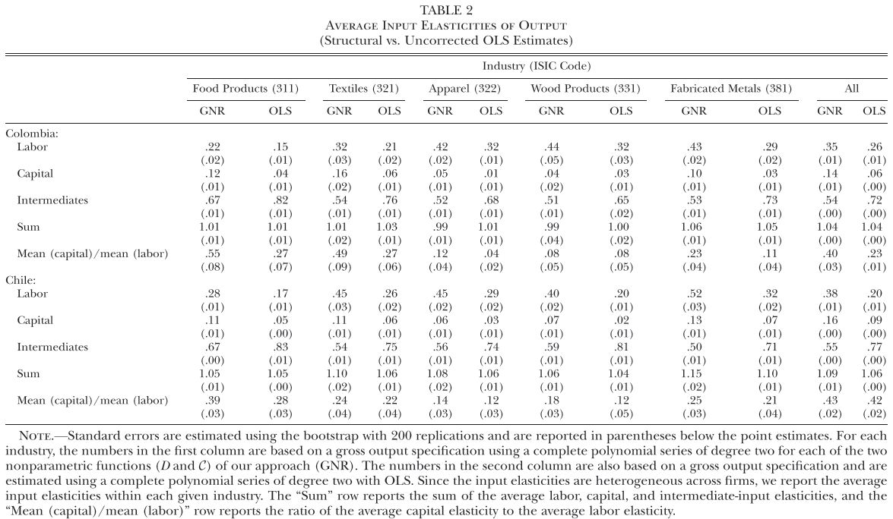
NP GNR | ||||||
|---|---|---|---|---|---|---|
Replication Data |
Working Data |
|||||
Stata |
Stata |
Fortran |
||||
| $\mathcal{E}$ | err sd | $\mathcal{E}$ | err sd | $\mathcal{E}$ | err sd | |
| 311 | 1.05 | 0.24 | 1.05 | 0.24 | 1.05 | 0.24 |
| 321 | 1.03 | 0.23 | 1.03 | 0.23 | 1.03 | 0.23 |
| 322 | 1.02 | 0.22 | 1.02 | 0.22 | 1.02 | 0.22 |
| 331 | 1.04 | 0.25 | 1.04 | 0.25 | 1.04 | 0.25 |
| 381 | 1.02 | 0.20 | 1.02 | 0.20 | 1.02 | 0.20 |
11.2 Cobb-Douglas Production Function
CD GNR | |||||||||
|---|---|---|---|---|---|---|---|---|---|
Replication Data |
Working Data |
||||||||
Stata |
Stata |
Fortran |
|||||||
| m | k | l | m | k | l | m | k | l | |
| 311 | 0.62 | 0.20 | 0.20 | 0.62 | 0.20 | 0.20 | 0.62 | 0.20 | 0.20 |
| 321 | 0.52 | 0.21 | 0.27 | 0.52 | 0.21 | 0.27 | 0.52 | 0.21 | 0.27 |
| 322 | 0.44 | 0.19 | 0.29 | 0.44 | 0.19 | 0.29 | 0.44 | 0.19 | 0.29 |
| 331 | 0.46 | 0.10 | 0.44 | 0.46 | 0.10 | 0.44 | 0.46 | 0.10 | 0.44 |
| 381 | 0.51 | 0.18 | 0.36 | 0.51 | 0.18 | 0.36 | 0.51 | 0.18 | 0.36 |
CD GNR | ||||||
|---|---|---|---|---|---|---|
Replication Data |
Working Data |
|||||
Stata |
Stata |
Fortran |
||||
| $\mathcal{E}$ | err sd | $\mathcal{E}$ | err sd | $\mathcal{E}$ | err sd | |
| 311 | 1.11 | 0.33 | 1.11 | 0.33 | 1.11 | 0.33 |
| 321 | 1.06 | 0.30 | 1.06 | 0.30 | 1.06 | 0.30 |
| 322 | 1.16 | 0.43 | 1.16 | 0.43 | 1.16 | 0.43 |
| 331 | 1.10 | 0.39 | 1.10 | 0.39 | 1.10 | 0.39 |
| 381 | 1.05 | 0.29 | 1.05 | 0.29 | 1.05 | 0.29 |
11.3 CD GNR + trimming
Working Data |
|||||||
|---|---|---|---|---|---|---|---|
Stata |
R |
||||||
| Industry | Inter. | m | $\mathcal{E}$ | err sd | m | $\mathcal{E}$ | err sd |
| 311 | Intermediates | 0.65 | 1.07 | 0.31 | 0.65 | 1.07 | 0.31 |
| Materials | 0.56 | 1.08 | 0.35 | 0.56 | 1.08 | 0.35 | |
| Deductibles | 0.56 | 1.12 | 0.39 | 0.56 | 1.12 | 0.39 | |
| 321 | Intermediates | 0.52 | 1.06 | 0.30 | 0.52 | 1.06 | 0.3 |
| Materials | 0.39 | 1.12 | 0.41 | 0.39 | 1.12 | 0.41 | |
| Deductibles | 0.43 | 1.09 | 0.37 | 0.43 | 1.09 | 0.37 | |
| 322 | Intermediates | 0.45 | 1.13 | 0.41 | 0.45 | 1.13 | 0.41 |
| Materials | 0.37 | 1.15 | 0.45 | 0.37 | 1.15 | 0.45 | |
| Deductibles | 0.37 | 1.15 | 0.45 | 0.37 | 1.15 | 0.45 | |
| 331 | Intermediates | 0.47 | 1.09 | 0.38 | 0.47 | 1.09 | 0.38 |
| Materials | 0.35 | 1.14 | 0.48 | 0.35 | 1.14 | 0.48 | |
| Deductibles | 0.39 | 1.12 | 0.43 | 0.39 | 1.12 | 0.43 | |
| 381 | Intermediates | 0.51 | 1.05 | 0.29 | 0.51 | 1.05 | 0.29 |
| Materials | 0.37 | 1.09 | 0.39 | 0.37 | 1.09 | 0.39 | |
| Deductibles | 0.41 | 1.07 | 0.35 | 0.41 | 1.07 | 0.35 | |
11.4 CD GNR + Trimming + Corporations
Working Data |
|||||||
|---|---|---|---|---|---|---|---|
Stata. |
R |
||||||
| Industry | Inter. | m | $\mathcal{E}$ | err sd | m | $\mathcal{E}$ | err sd |
| 311 | Intermediates | 0.67 | 1.06 | 0.28 | 0.67 | 1.06 | 0.28 |
| Materials | 0.55 | 1.08 | 0.35 | 0.55 | 1.08 | 0.35 | |
| Deductibles | 0.57 | 1.09 | 0.35 | 0.57 | 1.09 | 0.35 | |
| 321 | Intermediates | 0.51 | 1.03 | 0.24 | 0.51 | 1.03 | 0.24 |
| Materials | 0.35 | 1.09 | 0.37 | 0.35 | 1.09 | 0.37 | |
| Deductibles | 0.40 | 1.07 | 0.33 | 0.4 | 1.07 | 0.33 | |
| 322 | Intermediates | 0.25 | 1.59 | 0.82 | 0.25 | 1.59 | 0.82 |
| Materials | 0.31 | 1.11 | 0.41 | 0.31 | 1.11 | 0.41 | |
| Deductibles | 0.34 | 1.09 | 0.38 | 0.34 | 1.09 | 0.38 | |
| 331 | Intermediates | 0.50 | 1.03 | 0.24 | 0.5 | 1.03 | 0.24 |
| Materials | 0.29 | 1.09 | 0.42 | 0.29 | 1.09 | 0.42 | |
| Deductibles | 0.37 | 1.05 | 0.30 | 0.37 | 1.05 | 0.3 | |
| 381 | Intermediates | 0.54 | 1.04 | 0.27 | 0.54 | 1.04 | 0.27 |
| Materials | 0.37 | 1.09 | 0.40 | 0.37 | 1.09 | 0.4 | |
| Deductibles | 0.41 | 1.08 | 0.37 | 0.41 | 1.08 | 0.37 | |
11.5 CD GNR + Trimming + Measurement Error
Working Data (R) |
|||||||
|---|---|---|---|---|---|---|---|
Corps. |
All |
||||||
| Industry | Inter. | m | $\mathcal{E}$ | err sd | m | $\mathcal{E}$ | err sd |
| 311 | Intermediates | 0.71 | 1 | 0.28 | 0.69 | 1 | 0.31 |
| Materials | 0.6 | 1 | 0.35 | 0.61 | 1 | 0.35 | |
| Deductibles | 0.62 | 1 | 0.35 | 0.63 | 1 | 0.39 | |
| 321 | Intermediates | 0.53 | 1 | 0.24 | 0.55 | 1 | 0.3 |
| Materials | 0.39 | 1 | 0.37 | 0.43 | 1 | 0.41 | |
| Deductibles | 0.43 | 1 | 0.33 | 0.47 | 1 | 0.37 | |
| 322 | Intermediates | 0.4 | 1 | 0.82 | 0.51 | 1 | 0.41 |
| Materials | 0.35 | 1 | 0.41 | 0.42 | 1 | 0.45 | |
| Deductibles | 0.37 | 1 | 0.38 | 0.43 | 1 | 0.45 | |
| 331 | Intermediates | 0.51 | 1 | 0.24 | 0.51 | 1 | 0.38 |
| Materials | 0.32 | 1 | 0.42 | 0.4 | 1 | 0.48 | |
| Deductibles | 0.39 | 1 | 0.3 | 0.44 | 1 | 0.43 | |
| 381 | Intermediates | 0.56 | 1 | 0.27 | 0.53 | 1 | 0.29 |
| Materials | 0.41 | 1 | 0.4 | 0.41 | 1 | 0.39 | |
| Deductibles | 0.44 | 1 | 0.37 | 0.44 | 1 | 0.35 | |
Working Data (R) |
|||||||
|---|---|---|---|---|---|---|---|
Corps. |
All |
||||||
| Industry | Inter. | m | $\mathcal{E}$ | err sd | m | $\mathcal{E}$ | err sd |
| 322 | Intermediates | 0.4 | 1 | 0.82 | 0.51 | 1 | 0.41 |
| Materials | 0.35 | 1 | 0.41 | 0.42 | 1 | 0.45 | |
| Deductibles | 0.37 | 1 | 0.38 | 0.43 | 1 | 0.45 | |
| 369 | Intermediates | 0.41 | 1 | 0.41 | 0.37 | 1 | 0.54 |
| Materials | 0.24 | 1 | 0.61 | 0.28 | 1 | 0.62 | |
| Deductibles | 0.35 | 1 | 0.41 | 0.34 | 1 | 0.46 | |
| 331 | Intermediates | 0.51 | 1 | 0.24 | 0.51 | 1 | 0.38 |
| Materials | 0.32 | 1 | 0.42 | 0.4 | 1 | 0.48 | |
| Deductibles | 0.39 | 1 | 0.3 | 0.44 | 1 | 0.43 | |
| 321 | Intermediates | 0.53 | 1 | 0.24 | 0.55 | 1 | 0.3 |
| Materials | 0.39 | 1 | 0.37 | 0.43 | 1 | 0.41 | |
| Deductibles | 0.43 | 1 | 0.33 | 0.47 | 1 | 0.37 | |
| 351 | Intermediates | 0.55 | 1 | 0.3 | 0.55 | 1 | 0.32 |
| Materials | 0.34 | 1 | 0.63 | 0.35 | 1 | 0.62 | |
| Deductibles | 0.44 | 1 | 0.4 | 0.44 | 1 | 0.41 | |
11.6 Industry Characteristics
m |
|||||
|---|---|---|---|---|---|
| Inds. | Intermediate | Corps. | Exp. | Imp. | All |
| 311 | Materials | 0.6 | 0.61 | 0.35 | 0.61 |
| 312 | Materials | 0.58 | 0.57 | 0.49 | 0.58 |
| 313 | Materials | 0.29 | 0.35 | 0.36 | 0.31 |
| 321 | Materials | 0.39 | 0.44 | 0.37 | 0.43 |
| 322 | Materials | 0.35 | 0.42 | 0.41 | 0.42 |
| 323 | Materials | 0.56 | 0.47 | 0.22 | 0.48 |
| 324 | Materials | 0.43 | 0.46 | 0.22 | 0.46 |
| 331 | Materials | 0.32 | 0.41 | 0.42 | 0.4 |
| 332 | Materials | 0.36 | 0.35 | 0.42 | 0.35 |
Corporations |
Exporters |
Importers |
||||
|---|---|---|---|---|---|---|
| Inds. | Materials | Deductibles | Materials | Deductibles | Materials | Deductibles |
| 311 | 0.1111 (0.0045)*** | 0.0294 (0.005)*** | -0.1489 (0.0124) | -0.0416 (0.0056) | -0.2007 (0.0124) | -0.1147 (0.0056) |
| 312 | -0.0098 (0.0158) | 0.0251 (0.0115)** | 0.0516 (0.0257)** | 0.0648 (0.0127)*** | -0.1104 (0.0257) | 0.0707 (0.0127)*** |
| 313 | 0.0659 (0.0123)*** | 0.0377 (0.0111)*** | 0.2794 (0.0123)*** | 0.3439 (0.0111)*** | 0.1218 (0.0123)*** | 0.0935 (0.0111)*** |
| 321 | 0.1262 (0.0078)*** | 0.0885 (0.007)*** | 0.0604 (0.0111)*** | 0.115 (0.0079)*** | 0.016 (0.0111)* | 0.0247 (0.0079)*** |
| 322 | 1.27 (0.0068)*** | 0.6404 (0.0068)*** | 0.1215 (0.0145)*** | 0.1103 (0.009)*** | -0.1187 (0.0145) | -0.0914 (0.009) |
| 323 | -0.1534 (0.0133) | -0.1635 (0.0137) | -0.181 (0.0179) | -0.1646 (0.0152) | -0.1544 (0.0179) | -0.1542 (0.0152) |
| 324 | 0.0664 (0.0086)*** | 0.0578 (0.0084)*** | -0.1202 (0.0188) | -0.098 (0.0099) | -0.0588 (0.0188) | -0.0537 (0.0099) |
| 331 | 0.2177 (0.0154)*** | 0.1205 (0.0139)*** | 0.086 (0.0198)*** | 0.1038 (0.0148)*** | -0.0852 (0.0198) | -0.0367 (0.0148) |
| 332 | -0.028 (0.0136) | -0.0284 (0.0127) | -0.1286 (0.0142) | -0.1522 (0.0133) | -0.2887 (0.0142) | -0.2709 (0.0133) |
12 CD GNR Intermediates
Observations with value of zero for some intermediates were driving down the estimates of the output elasticity of intermediates. This is a common problem when using data from surveys. To avoid this problem, I trimmed the observations with a share of intermediates below 0.05.
These observations increase the variance of the error term, which in turn increases the value of \(\mathcal{E}\). The higher the value of \(\mathcal{E}\), the lower the value of the elasticity of intermediates.
Figure 6 show that at when trimming observations with a share of intermediates below 0.05, the estimates of \(\mathcal{E}\) and the output elasticity of intermediates start to stabilize. That is the changes in the values of these variables are small. In addition, Figure 7 shows that at this threshold, the change in percentage of observations dropped is also small.
A more detailed picture of this is displayed in ?@tbl-cd-gnr-inter-trim. The table compares the estimates of the output elasticity of intermediates and other statistics of the first stage of GNR(2020) assuming a Cobb-Douglas Production Function for different definitions of intermediates and different thresholds for trimming observations.
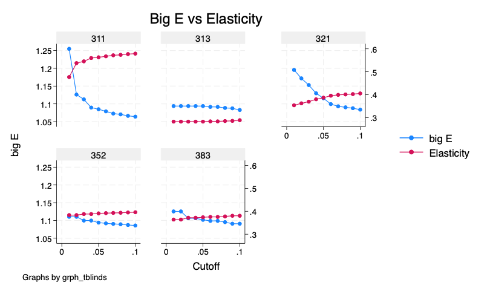
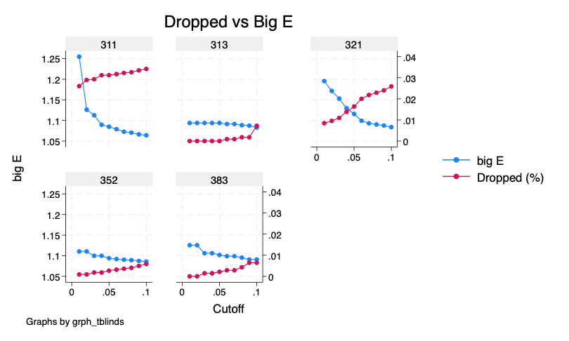
| Ind. | Inter. | m | l | k | bigE | si_mean | err_mean | err_sd |
|---|---|---|---|---|---|---|---|---|
| 311 | m_s_e | 0.6488 | 0.1827 | 0.1832 | 1.0652 | 0.7219 | 0 | 0.3091 |
| mats | 0.5630 | 0.2084 | 0.2443 | 1.0848 | 0.6416 | 0 | 0.3470 | |
| ded | 0.5567 | 0.2194 | 0.2337 | 1.1232 | 0.6631 | 0 | 0.3948 | |
| 321 | m_s_e | 0.5183 | 0.2658 | 0.2088 | 1.0557 | 0.5689 | 0 | 0.2996 |
| mats | 0.3869 | 0.3412 | 0.2604 | 1.1158 | 0.4633 | 0 | 0.4136 | |
| ded | 0.4273 | 0.3237 | 0.2470 | 1.0934 | 0.4949 | 0 | 0.3720 | |
| 352 | m_s_e | 0.5749 | 0.2133 | 0.2415 | 1.0437 | 0.6201 | 0 | 0.2718 |
| mats | 0.3909 | 0.2858 | 0.3527 | 1.0940 | 0.4574 | 0 | 0.3922 | |
| ded | 0.4114 | 0.2797 | 0.3360 | 1.0877 | 0.4756 | 0 | 0.3746 | |
| 313 | m_s_e | 0.4324 | 0.1658 | 0.3086 | 1.0721 | 0.4893 | 0 | 0.3479 |
| mats | 0.2826 | 0.2943 | 0.3395 | 1.0938 | 0.3347 | 0 | 0.4104 | |
| ded | 0.3216 | 0.2912 | 0.3203 | 1.0767 | 0.3699 | 0 | 0.3726 | |
| 383 | m_s_e | 0.5261 | 0.3666 | 0.1892 | 1.0445 | 0.5694 | 0 | 0.2786 |
| mats | 0.3739 | 0.4889 | 0.2523 | 1.1018 | 0.4427 | 0 | 0.4069 | |
| ded | 0.4015 | 0.4532 | 0.2427 | 1.0891 | 0.4655 | 0 | 0.3798 |
13 Density
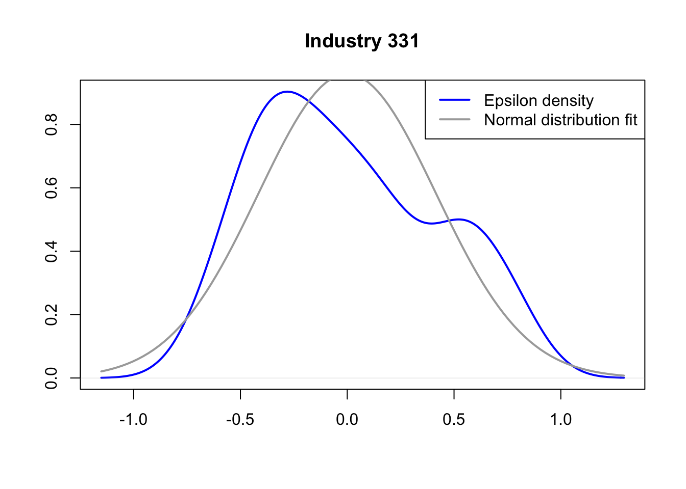
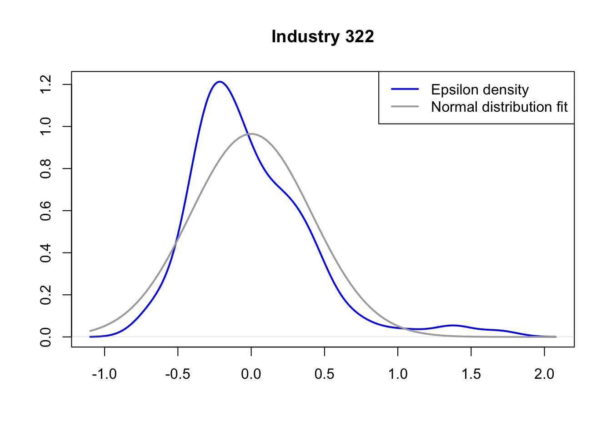
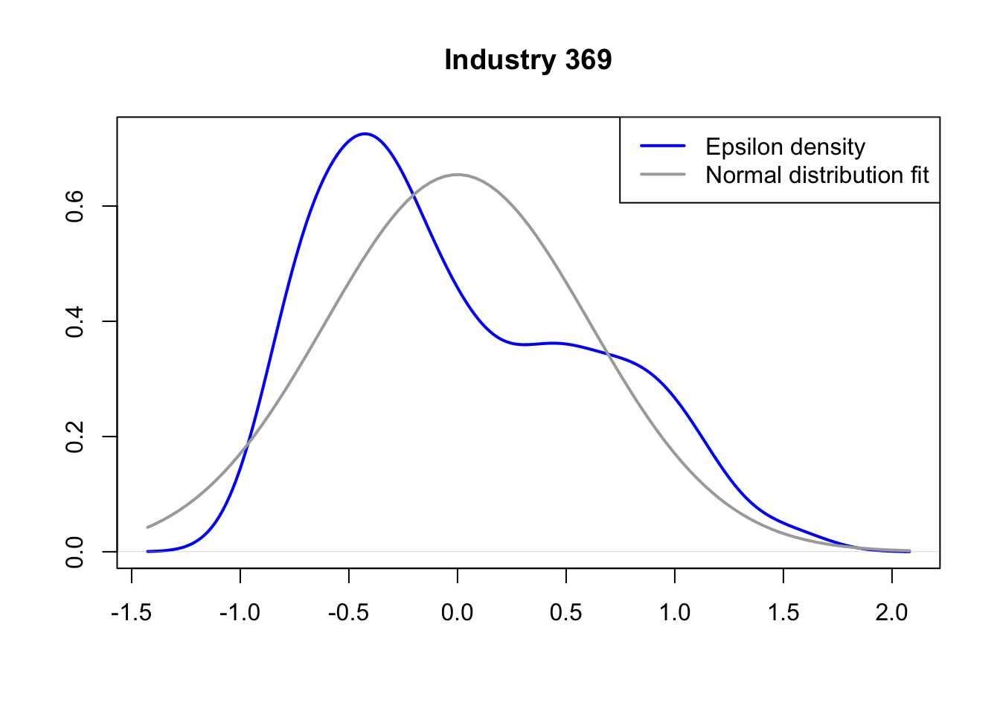
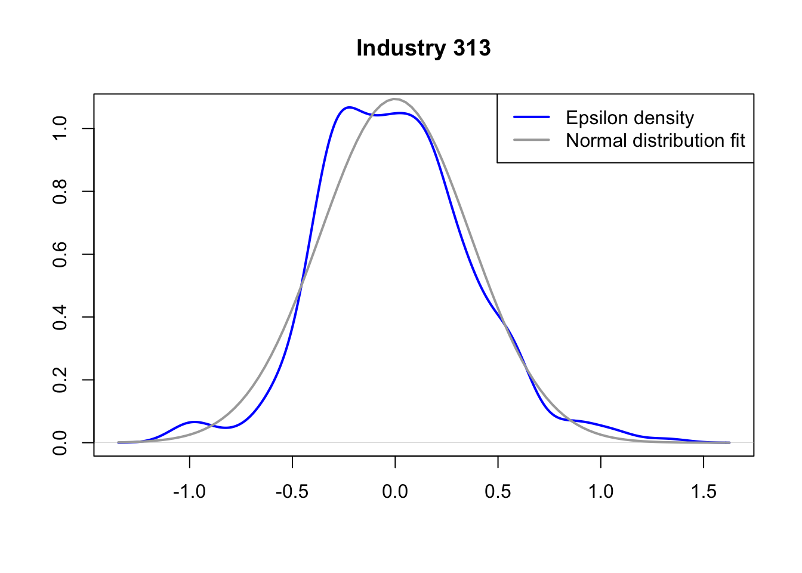
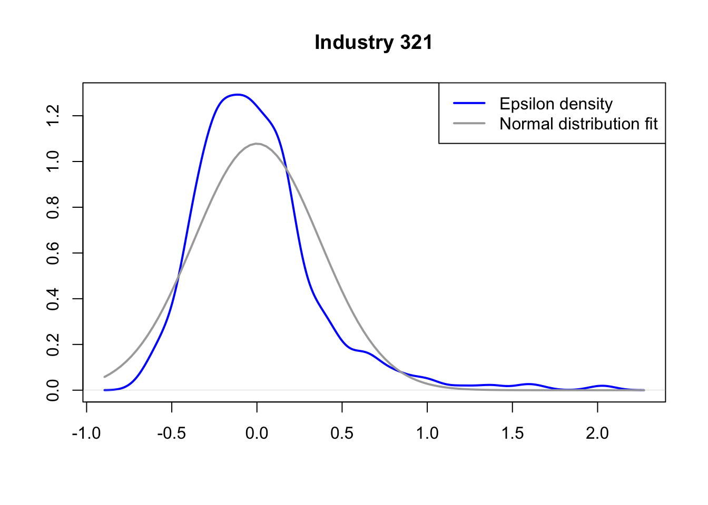
8 References
Ackerberg, D. A. (2019), “Timing assumptions and e¢ ciency: Empirical evidence in a production function context.”
Ackerberg, D. A., Caves, K., and Frazer, G. (2015), “IDENTIFICATION PROPERTIES OF RECENT PRODUCTION FUNCTION ESTIMATORS,” 83, 2411–2451. https://doi.org/10.3982/ECTA.
Ackerberg, D., Frazer, G., Luo, Y., and Su, Y. (2021), “Under-identification of structural models based on timing and information set assumptions.”
Almunia, M., and Lopez-Rodriguez, D. (2018), “Under the radar: The effects of monitoring firms on tax compliance †,” American Economic Journal: Economic Policy, 10, 1–38. https://doi.org/10.1257/pol.20160229.
Carrillo, P., Donaldson, D., Pomeranz, D., and Singhal, M. (2022), “Ghosting the tax authority: Fake firms and tax fraud,” NBER.
Chen, X. (2007), “LARGE SAMPLE SIEVE ESTIMATION OF SEMI-NONPARAMETRIC MODELS *.” https://doi.org/10.1016/S1573-4412(07)06076-X.
Dabla-Norris, E., Gradstein, M., Miryugin, F., and Misch, F. (2019), “Productivity and tax evasion,” CESifo.
Eilers, P. H. C., and Marx, B. D. (1996), “Flexible smoothing with b-splines and penalties,” Statistical Science, Institute of Mathematical Statistics, 11, 89–121. https://doi.org/https://doi.org/10.1214/ss/1038425655.
Eslava, M., Haltiwanger, J., Kugler, A., and Kugler, M. (2004), “The effects of structural reforms on productivity and profitability enhancing reallocation: Evidence from colombia,” Journal of Development Economics, North-Holland, 75, 333–371. https://doi.org/10.1016/J.JDEVECO.2004.06.002.
Gandhi, A., Navarro, S., and Rivers, D. A. (2020), “On the identification of gross output production functions.”
Hu, Y., Schennach, S., and Shiu, J. L. (2022), “Identification of nonparametric monotonic regression models with continuous nonclassical measurement errors,” Journal of Econometrics, North-Holland, 226, 269–294. https://doi.org/10.1016/J.JECONOM.2020.09.014.
Kang, Y., and Qiu, P. (2021), “Nonparametric deconvolution by fourier transformation and other related approaches,” in Handbook of measurement error models, eds. G. Y. Yi, A. Delaigle, and P. Gustafson, Chapman; Hall/CRC, pp. 221–244. https://doi.org/10.1201/9781315101279-11.
Levinsohn, J., and Petrin, A. (2003), “Estimating production functions using inputs to control for unobservables,” Review of Economic Studies, 70, 317–341. https://doi.org/10.1111/1467-937X.00246.
Mclure, C. E. (1989), “Analysis and reform of the colombian tax system,” in Tax reform in developing countries, ed. M. Gillis, Durham; London: Duke University Press.
Olley, G. S., Pakes, A., and Steven, G. (1996), “The dynamics of productivity in the telecommunications equipment industry,” Econometrica, 64, 1263–1297.
Paulus, A. (2015), “Tax evasion and measurement error: An econometric analysis of survey data linked with tax records,” University of Essex, Institute for Social; Economic Research (ISER).
Perry, G., and Triana, L. O. de (1990), The VAT in colombia, (M. Gillis, C. S. Shoup, and G. P. Sicat, eds.), Washington, D.C.: The World Bank, pp. 180–194.
Slemrod, J. (2019), “Tax compliance and enforcement†,” Journal of Economic Literature, American Economic Association, 57, 904–954. https://doi.org/10.1257/JEL.20181437.
“Technology tools to tackle tax evasion and tax fraud” (2017), OECD.
Torres, F. S., and Sourdis, C. G. (1994), “Reformas tributarias en colombia 1980-1992. Aspectos de equidad, eficiencia, y simplificación administrativa,” in VI seminario regional de política fiscal, CEPAL.
Yi, G. Y. (2021), “Likelihood methods with measurement error and misclassification,” Handbook of Measurement Error Models, Chapman; Hall/CRC, 99–126. https://doi.org/10.1201/9781315101279-6.
Zumaya, M., Guerrero, R., Islas, E., Pineda, O., Gershenson, C., Iñiguez, G., and Pineda, C. (2021), “Identifying tax evasion in mexico with tools from network science and machine learning.”
Footnotes
Alternatively, we could have modeled a penalty function that is paid only if the firm gets caught. The intuition remains the same, there would be a trade off between the expected benefit of evading and the expected cost of getting caught.↩︎
An analogous condition for an increase in relative prices leading to higher levels of tax evasion exists. Under this condition, the model is consistent with the literature that macroeconomic downturns lead to higher evasion.↩︎
Note we can always rewrite \(M^*+e=M^*\exp\{a\}\), then \(\exp\{a\}=\frac{e}{M^*}+1\).↩︎